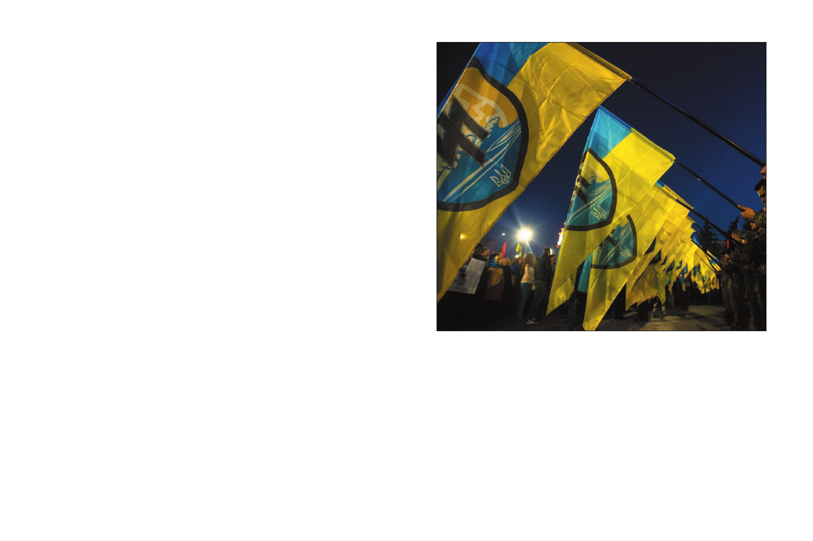
PAPEL BRANCO
VIOLAÇÃO DOS DIREITOS HUMANOS
E O ESTADO DE DIREITO
NA UCRÂNIA
(JULHO - NOVEMBRO DE 2014)
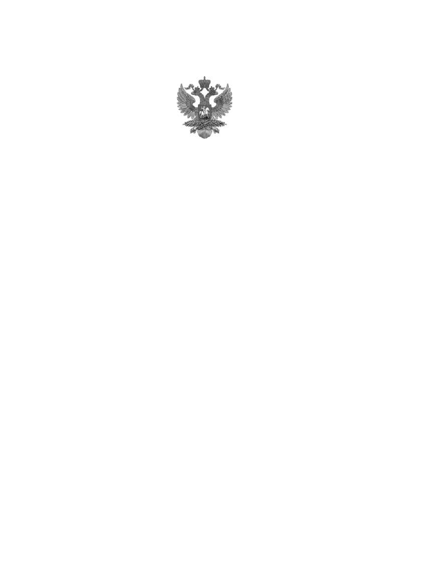
PAPEL BRANCO
VIOLAÇÃO DOS DIREITOS HUMANOS
E O ESTADO DE DIREITO
NA UCRÂNIA
(JULHO - NOVEMBRO DE 2014)
Moscou
Novembro de 2014
Ministério das Relações Exteriores
Federação Russa

Índice
Introdução
.................................................. . ......................................... 3
Violação do direito à vida, à liberdade,
segurança e privacidade
....................................... 7
Restrição da liberdade de imprensa
e atividades dos jornalistas
.................................................. . ........... 35
Violação do direito à liberdade de reunião
e associações, eleições livres.
Intimidação e sequestro
oponentes políticos
.................................................. . ................ 44
Violação dos direitos das minorias,
discriminação, xenofobia
e nacionalismo agressivo
.................................................. . ........... 57
Violação do direito à liberdade
pensamentos, consciências e religiões
.................................................. . ............... 69
Deslocados internos e refugiados
....................................... 76
Violação da economia,
direitos sociais e culturais
.................................................. . ........ 80
Conclusão
.................................................. . ....................................... 95
Belaya_kniga_07_2014-11_2014-html.html

3
Introdução
Introdução
Desde a publicação da segunda edição do Livro Branco, a situação de respeito
, ou melhor, de desrespeito aos direitos humanos e ao Estado
de direito na Ucrânia piorou significativamente.
O período cronológico considerado no Livro (julho-novembro de
2014) é caracterizado por violações grosseiras, massivas e deliberadas
por parte das forças de segurança ucranianas e grupos armados de
radicais nacionais das normas do direito internacional humanitário, dos direitos humanos e
do estado de direito.
Quando o livro foi enviado para impressão, organizações internacionais especializadas
relataram que, de acordo com seus cálculos, durante a
crise ucraniana, em particular, como resultado da operação “antiterrorista” em Kiev,
mais de 4.000 pessoas foram autenticamente mortas . e mais de 9 mil
pessoas feridas, entre mulheres, crianças, idosos e deficientes. É especialmente enfatizado
que o número real de vítimas acabará por
exceder significativamente o acima.
Cerca de 2,5 milhões de pessoas continuam nas áreas afetadas pelos combates . O número de deslocados internos na
Ucrânia em outubro se aproximou de 415.000 pessoas. O número total de cidadãos ucranianos que
fogem do sangrento conflito
na Rússia, de acordo com o Serviço Federal de Migração da Rússia, ultrapassa 830.000
pessoas (somente no setor privado, os russos aceitaram e acomodaram cerca de
444.000 refugiados ucranianos).
A julgar pelo florescente nacionalismo militante dos
políticos ucranianos, os apelos misantrópicos que saem de seus lábios,
o apoio às ações neonazistas e procissões de tochas em várias cidades
da Ucrânia,
os números mencionados acima parecem ter pouca chance de
corujas permanecem estáticas.
Belaya_kniga_07_2014-11_2014-html.html

Livro branco sobre violações dos direitos humanos
e o Estado de direito na Ucrânia
4
Juntamente com armas pesadas e aviação militar, as autoridades ucranianas
usaram meios bárbaros contra a população civil do sudeste do país
como armas incendiárias,
munições de fósforo e cluster, sistemas de foguetes de lançamento múltiplo Grad e Uragan e
mísseis balísticos Tochka-U. ” , artilharia obus,
morteiros autopropulsados de 240 mm “Tulip”. Esses relatórios são corroborados pela mídia,
testemunhas oculares, ONGs de direitos humanos respeitáveis, como Human
Rights Watch e Anistia Internacional, e fontes confiáveis
de alguns jornalistas estrangeiros em governos ocidentais e
agências de inteligência.
Em outubro, como resultado de ataques direcionados a áreas residenciais de Donetsk
a partir de territórios controlados pelas forças de segurança ucranianas e
batalhões da guarda nacional, crianças foram novamente mortas, o que só pode ser
caracterizado como um crime de guerra cometido contra a
população civil.
As valas comuns com sinais de execuções extrajudiciais foram encontradas no território das regiões de Donetsk e Lugansk .
Assim, pode-se rastrear o uso indiscriminado da força pelo
exército ucraniano através do uso de meios e
métodos de guerra proibidos.
A queda de um Boeing 777 da Malaysian Airlines perto de Donetsk em julho
matou 298 pessoas.
Até agora, não foi realizada uma investigação efetiva e imparcial desta tragédia e, obviamente, em violação
à Resolução 2166 do Conselho de Segurança da ONU de 21 de julho de 2014 e às regras da
Organização de Aviação Civil Internacional ICAO, está sendo “lenta
” por aqueles que não estão interessados em estabelecer a verdade .
Como resultado dos combates em Kiev, o sudeste da Ucrânia estava em
estado de catástrofe humanitária. Segundo especialistas da ONU, em algumas
cidades desta região, a destruição parcial ou total do parque habitacional
foi de 60%. De acordo com o presidente da Ucrânia
P.A. Poroshenko, 42% da indústria e
metade da infraestrutura foram destruídas em Donbass.
Como resultado de ataques devastadores das forças de segurança ucranianas, os
objetos necessários para a sobrevivência e vida normal
das pessoas foram desativados, em particular, hospitais (apenas em Donetsk, segundo a
ONU, mais de 30 edifícios), maternidades, jardins de infância e orfanatos,
lares de idosos, escolas, universidades, usinas de energia, linhas de energia,
Belaya_kniga_07_2014-11_2014-html.html

cinco
Introdução
lojas de farmácia. Em muitas cidades das regiões de Donetsk e Lugansk
, a comunicação telefônica foi interrompida, o abastecimento de água e gás foram interrompidos. Um grande
número de pessoas perdeu seus empregos, moradia e meios de
subsistência básicos.
Nesse contexto, vários obstáculos rebuscados
de Kiev e de algumas capitais ocidentais pareciam cínicos em relação aos esforços práticos que a Federação Russa realizou enviando comboios com ajuda humanitária vital
para a população do sudeste da Ucrânia.
Evidências desenterradas por defensores dos direitos humanos, em particular pela
ONG russa Foundation for Research on Democracy
, apontam para o uso crescente pelas forças de segurança ucranianas
(o exército, o Ministério da Administração Interna, o SBU, bem como “batalhões voluntários” de
radicais) contra residentes e prisioneiros de guerra do sudeste do país à tortura e tratamento cruel
, desumano e degradante. Em particular,
juntamente com a cauterização do corpo com objetos incandescentes,
direção forçada através de campos minados, imitação de execuções, lançamento
em um poço com cadáveres, etc., foi registrada uma técnica como a imitação
de afogamento, que foi usada ativamente pelos americanos serviços de inteligência em
suas prisões especiais no exterior, inclusive na Baía de Guantánamo.
O período em análise caracterizou-se por uma rápida degradação da
situação no domínio da liberdade de expressão e restrições às atividades
dos meios de comunicação social censuráveis às autoridades de Kiev. O Instituto Internacional para a Segurança
dos Jornalistas reconheceu a Ucrânia como o país mais perigoso
para jornalistas do mundo. No início de agosto,
A. Stenin, fotojornalista da agência de notícias Rossiya Segodnya, foi morto perto de Donetsk.
Os bombardeios, ataques, espancamentos e seqüestros de jornalistas continuaram.
Há informações sobre detenções e prisões injustificadas de
cidadãos que divulgam informações através da Internet sobre a situação real
no sudeste da Ucrânia.
O espaço de informação ucraniano está sob a pressão de uma
censura política estrita. As autoridades bloquearam a transmissão de todos os
canais de TV russos populares na Ucrânia. Casos criminais são abertos contra funcionários locais
que continuam a transmiti-los.
A prática de perseguição política e perseguição em larga escala de políticos agindo de posições
diferentes do curso cínico seguido por Kiev desenvolveu-se rapidamente . Para isso,
assassinatos de opositores políticos, fabricação de processos criminais,
Belaya_kniga_07_2014-11_2014-html.html

Livro branco sobre violações dos direitos humanos
e o Estado de direito na Ucrânia
6
buscas a cavalo, confisco de bens, agressão banal e
palhaçadas como “lubrificação de lixo”, bem como outros
métodos ilegais de influência que são contrários ao estado
de direito e às normas democráticas.
As eleições extraordinárias para a Verkhovna Rada
da Ucrânia, realizadas em 26 de outubro de 2014, foram marcadas por um número sem precedentes de violações grosseiras dos
padrões internacionais básicos de eleições democráticas, que foram
registradas durante a campanha eleitoral, no dia da votação
e durante a contagem dos votos. Essa situação, incluindo suas raízes, é discutida em detalhes em um relatório analítico
preparado pela Comissão Eleitoral Central da Federação Russa sobre essas eleições na Ucrânia.
Como em suas duas primeiras edições, o núcleo factual do livro foi o
resultado de um monitoramento cuidadoso da
mídia internacional, ucraniana e russa, informações fornecidas por testemunhas oculares e blogueiros,
declarações e declarações da liderança ucraniana e representantes de
agências policiais e grupos armados envolvidos em
operações punitivas contra o sudeste da Ucrânia. Atenção especial
foi dada aos relatórios das estruturas de direitos humanos da ONU, da OSCE e do CoE, informações do
CICV, ONGs internacionais de renome (Human Rights Watch,
Anistia Internacional, etc.
) Problemas de democracia, público russo
Conselho de Cooperação Internacional e Diplomacia Pública
sob a Câmara Cívica da Federação Russa, etc.).
Cada seção do Livro é tradicionalmente precedida por trechos
das disposições fundamentais dos instrumentos internacionais no campo
dos direitos humanos e do direito internacional humanitário.
Tal como anteriormente, consideramos que a principal tarefa do Livro Branco é chamar
a atenção da comunidade internacional, das organizações
e estruturas de direitos humanos, dos meios de comunicação social, bem como de todos os cidadãos interessados, para a verdadeira
situação catastrófica dos direitos humanos e do Estado
de direito lei na Ucrânia após o golpe de
Estado anticonstitucional em Kiev.
Todos os crimes cometidos na Ucrânia durante o período descrito nas três
edições do Livro devem ser objetivamente investigados sob
controle internacional efetivo, e os responsáveis devem ser levados à justiça
. Não deve haver impunidade.
Belaya_kniga_07_2014-11_2014-html.html
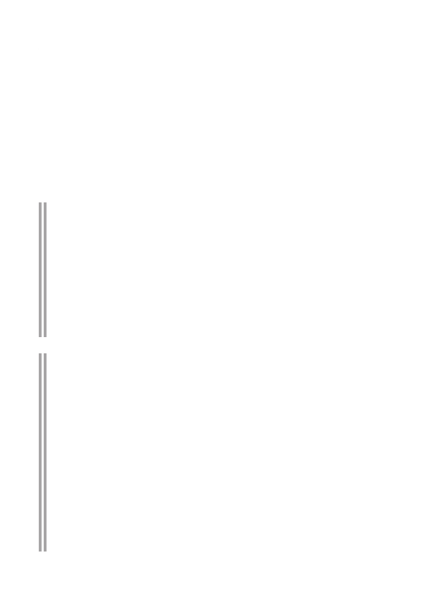
7
Violação do direito à vida, liberdade, segurança
e integridade pessoal
Violação do direito à vida, à liberdade,
segurança e privacidade
Declaração Universal dos Direitos Humanos (10 de dezembro de 1948)
Artigo 3
Toda pessoa tem direito à vida, à liberdade e à segurança
pessoal.
Artigo 5
Ninguém será submetido a tortura ou tratamento ou castigo cruel, desumano
ou degradante.
Artigo 9
Ninguém pode ser sujeito a prisão, detenção
ou exílio arbitrário.
Pacto Internacional sobre o Direito Civil
e Direitos Políticos (16 de dezembro de 1966)
Artigo 6
1. O direito à vida é um direito inalienável de todo ser humano. Este
direito é protegido por lei. Ninguém pode ser arbitrariamente privado
da vida.
3. Quando a privação da vida constitui crime de genocídio, deve-
se entender que nada neste artigo dará
aos Estados Partes do presente Pacto o direito de
derrogar de qualquer forma as obrigações assumidas sob as disposições
da Convenção para Prevenir e Punir do Crime de Genocídio para
ele.
Artigo 7
Ninguém será submetido a tortura ou tratamento ou castigo cruel, desumano
ou degradante.
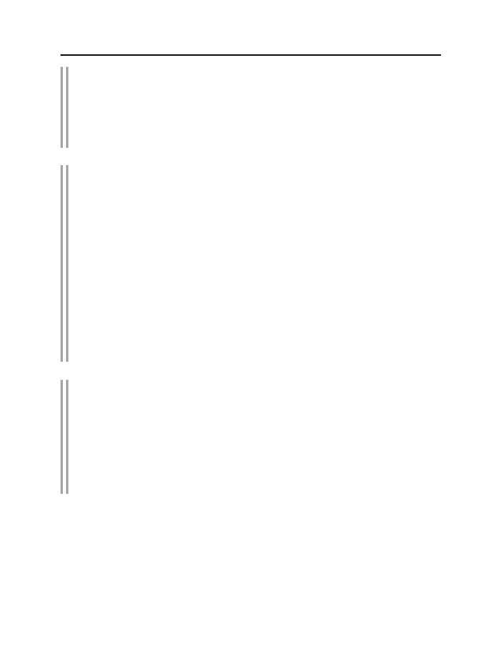
Livro branco sobre violações dos direitos humanos
e o Estado de direito na Ucrânia
8
Artigo 9
Toda pessoa tem direito à liberdade e segurança pessoal
. Ninguém pode ser sujeito a prisão ou
detenção arbitrária. Ninguém será privado de liberdade
, exceto por motivos e de acordo com o procedimento
estabelecido por lei.
Convenção para a Proteção dos Direitos Humanos
e liberdades fundamentais
(Roma, 4 de novembro de 1950)
Artigo 2 Direito à vida
O direito de cada pessoa à vida é protegido por lei. Ninguém pode
ser intencionalmente privado da vida, exceto em execução de uma
sentença de morte proferida por um tribunal por um delito para
o qual a lei preveja tal punição.
Artigo 3. Proibição da tortura
Ninguém será submetido a tortura nem a penas ou tratamentos desumanos ou
degradantes.
Artigo 5. Direito à liberdade e segurança pessoal
Todos têm direito à liberdade e segurança pessoal.
Protocolo nº 6 da Convenção de Proteção
direitos humanos e liberdades fundamentais
sobre a abolição da pena de morte
(Estrasburgo, 28 de abril de 1983)
Artigo 1. Abolição da pena de morte
A pena de morte é abolida. Ninguém pode ser condenado à
morte ou executado.
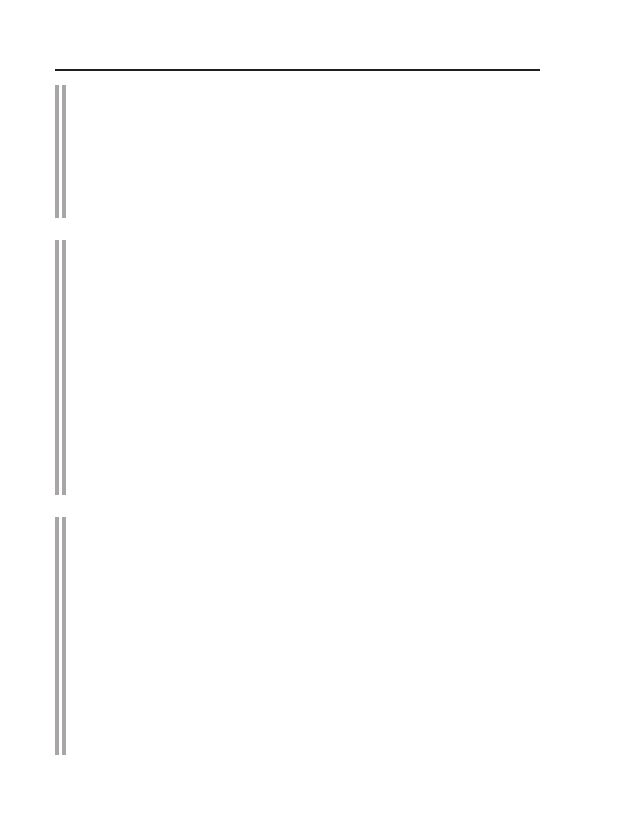
nove
Violação do direito à vida, liberdade, segurança
e integridade pessoal
Protocolo nº 13 da Convenção para a Proteção dos Direitos Humanos
e as liberdades fundamentais relativas à abolição da pena de morte
em qualquer circunstância
(Vilnius, 3 de maio de 2002)
Artigo 1. Abolição da pena de morte
A pena de morte é abolida. Ninguém pode ser condenado à
morte ou executado.
Convenção contra a tortura e outras crueldades,
espécies desumanas ou degradantes
tratamento e punição (10 de dezembro de 1984)
Artigo 2
1. Cada Estado Parte adotará medidas
legislativas, administrativas, judiciais e outras medidas eficazes para
prevenir atos de tortura em qualquer território sob sua jurisdição.
2. Nenhuma circunstância excepcional, quaisquer que sejam,
seja estado de guerra ou ameaça de guerra,
instabilidade política interna ou qualquer outra emergência pública, pode
justificar a tortura.
3. Uma ordem de um superior ou autoridade governamental
não pode justificar a tortura.
Convenção sobre os Direitos da Criança
(20 de novembro de 1989)
Artigo 6
1. Os Estados Partes reconhecem que toda criança tem o
direito inerente à vida.
2. Os Estados Partes assegurarão, na
medida do possível, a sobrevivência e o desenvolvimento da criança.
Artigo 37
Os Estados Partes assegurarão que:
(a) Nenhuma criança seja submetida a tortura ou outros tratamentos ou penas cruéis,
desumanos ou degradantes
.
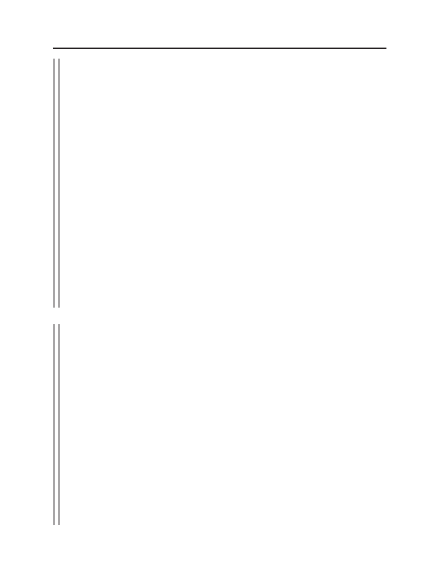
Livro branco sobre violações dos direitos humanos
e o Estado de direito na Ucrânia
10
Artigo 38
1. Os Estados Partes comprometem-se a respeitar e assegurar que as regras do Direito Internacional
Humanitário que lhes sejam aplicáveis em caso de
conflito armado e relevantes para as crianças sejam respeitadas
.
4. Em consonância com suas obrigações decorrentes do Direito Internacional Humanitário
relacionadas à proteção de civis em tempos
de conflito armado, os Estados Partes comprometem-se a tomar
todas as medidas viáveis para garantir a proteção
e o cuidado das crianças afetadas por conflitos armados.
Artigo 39
Os Estados Partes tomarão todas as medidas necessárias
para facilitar a recuperação física e psicológica
e a reintegração social de uma criança vítima de:
qualquer forma de negligência, exploração ou abuso, tortura ou qualquer outro tratamento, punição ou conflito armado
cruel, desumano ou degradante . Tal recuperação e reintegração devem ocorrer em um ambiente que promova a saúde, o auto-respeito e a dignidade da criança.
Protocolo Adicional às Convenções de Genebra
datado de 12 de agosto de 1949 sobre a proteção das vítimas
conflitos armados de caráter internacional
(Ata II, Genebra, 8 de junho de 1977)
Artigo 4 Garantias Básicas
1. Todas as pessoas que não participem diretamente ou
que tenham deixado de participar das hostilidades, com
ou sem restrição de liberdade, têm direito ao respeito por
sua pessoa, sua honra, suas convicções e suas práticas religiosas
. Em todas as circunstâncias, eles são tratados com humanidade e sem
qualquer distinção adversa. É proibido dar
uma ordem para não deixar ninguém vivo.
2. Sem prejuízo das disposições gerais acima referidas, são proibidos e
continuarão proibidos em qualquer momento e em qualquer lugar os seguintes
atos em relação às pessoas referidas no n.º 1 :
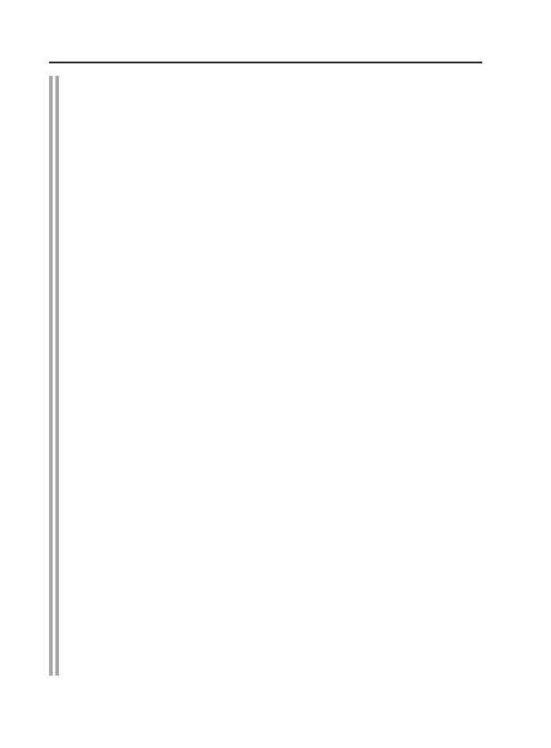
onze
Violação do direito à vida, liberdade, segurança
e integridade pessoal
a) usurpação da vida, saúde,
condição física e mental de pessoas, em particular, homicídio, bem como maus -tratos
como tortura, mutilação ou qualquer forma de
castigo corporal;
b) punições coletivas;
(c) fazer reféns;
d) atos de terrorismo;
e) abuso da dignidade humana, em particular
tratamento degradante e degradante, violação,
prostituição forçada ou atentado ao pudor sob qualquer
forma;
f) escravidão e tráfico de escravos em todas as suas formas;
g) roubo;
h) ameaças de fazer qualquer um dos itens acima.
Artigo 9. Proteção do pessoal médico e religioso
O pessoal médico e religioso é respeitado e protegido
e recebe toda a assistência possível para o cumprimento das suas
funções. Ele não deve ser forçado a realizar tarefas
incompatíveis com sua missão humanitária.
Artigo 11. Proteção das unidades médicas e sanitárias
Veículo
As unidades médicas e ambulâncias devem
ser sempre respeitadas e protegidas e não podem ser objeto
de ataque.
Artigo 13 Proteção de civis
1. A população civil e os civis individuais gozam
de protecção geral contra os perigos decorrentes das operações militares
.
Para exercer esta proteção, as seguintes regras devem ser observadas em todas as circunstâncias .
2. A população civil enquanto tal, bem como os civis individuais
, não devem ser objecto de ataque. Atos
de violência ou ameaças de violência com o objetivo principal
de aterrorizar a população civil são proibidos.
3. Os civis gozam da protecção prevista na
presente parte, excepto nos casos e durante o período em que
participem directamente nas hostilidades.
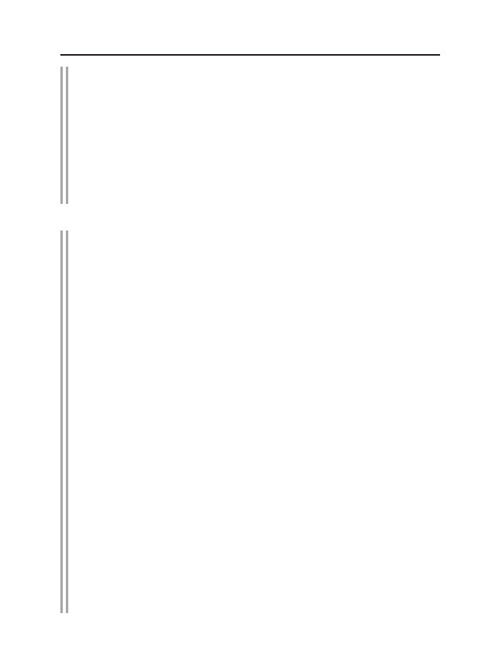
Livro branco sobre violações dos direitos humanos
e o Estado de direito na Ucrânia
12
Artigo 14. Proteção de objetos necessários à sobrevivência
população civil
É proibido usar a fome entre a população civil como
método de guerra. Portanto, é proibido
para o efeito atacar, destruir, retirar ou
inutilizar os bens essenciais à sobrevivência da
população civil, tais como mantimentos,
áreas agrícolas produtoras de alimentos, culturas, pecuária,
instalações de água potável e abastecimentos destes últimos. . e
instalações de irrigação.
Convenção de Genebra para a Proteção das Pessoas Civis
durante a guerra (Genebra, 12 de agosto de 1949)
Artigo 3
Em caso de conflito armado de
caráter não internacional surgido no território de uma das Altas
Partes Contratantes, cada uma das Partes em conflito será
obrigada a aplicar pelo menos as seguintes disposições:
1) As pessoas que não tomem diretamente participar nas
hostilidades; incluindo os membros das forças armadas que
depuseram as armas, bem como aqueles que deixaram de participar
nas hostilidades devido a doença, lesão, detenção ou
qualquer outro motivo, devem, em todas as circunstâncias,
ser tratados com humanidade, sem qualquer discriminação com base na
raça, cor, religião ou credo, sexo, origem ou
status de propriedade ou qualquer outro critério similar
. Para o efeito, são proibidos e serão sempre
e em toda a parte proibidos
em relação às pessoas acima referidas : a) a violação da dignidade da pessoa humana, em particular os tratamentos humilhantes e degradantes; d) a condenação e aplicação de pena sem prévia decisão judicial proferida por um tribunal devidamente constituído , na presença de garantias judiciais reconhecidas como necessárias pelas nações civilizadas.
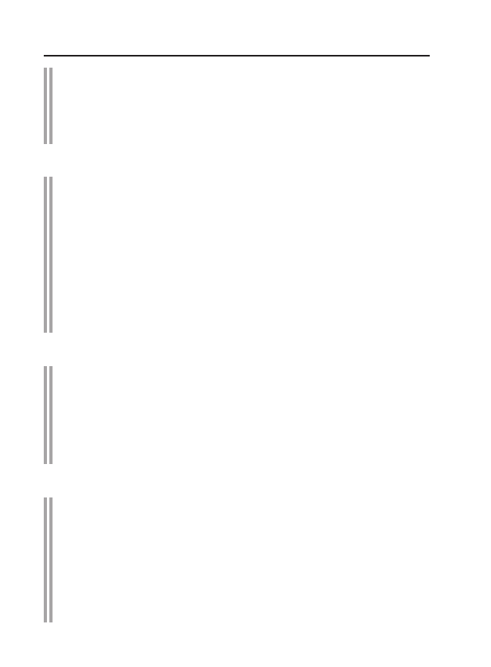
13
Violação do direito à vida, liberdade, segurança
e integridade pessoal
Convenção sobre a Proibição ou Restrição de Uso
tipos específicos de armas convencionais que podem
considerado como causador de danos excessivos
ou tendo um efeito indiscriminado
(Genebra, 10 de outubro de 1980)
Protocolo III sobre Proibição ou Restrição
uso de armas incendiárias
Artigo 2
1. É proibido em qualquer circunstância atacar a
população civil enquanto tal, civis individuais ou bens civis
com armas incendiárias.
2. É proibido, em qualquer circunstância , atacar qualquer
objectivo militar situado em zona de concentração civil com armas incendiárias
de lançamento aéreo .
Convenção sobre Munições Cluster
(Dublim, 19–30 de maio de 2008)
Artigo 1
Obrigações gerais e escopo
Cada Estado Parte compromete-se a nunca, em nenhuma
circunstância:
a) usar munições cluster.
Convenção para a Prevenção do Crime de Genocídio
e punição para ele (9 de dezembro de 1948)
Artigo 1
As Partes Contratantes reafirmam que o genocídio
, cometido em tempo de paz ou de guerra, é um
crime que viola as normas do direito internacional e
contra o qual se comprometem a tomar medidas preventivas e
punir seu cometimento.

Livro branco sobre violações dos direitos humanos
e o Estado de direito na Ucrânia
quatorze
1º de julho
em Kramatorsk, 14 pessoas morreram e 5 ficaram feridas como resultado de
do bombardeio de artilharia cometido pelas forças de segurança ucranianas
, incluindo um microônibus na área da rua. Rumyantsev e pedestres
na rua. Kadinova.
1º de julho
Forças de segurança ucranianas submetidas a bombardeios de artilharia da cidade
sim Slavyansk e Yampol, bem como a vila de Semenovka. Durante o bombardeio
de Slavyansk, um cidadão russo foi morto, 3 pessoas ficaram feridas.
1º de julho
bombardeios em massa de vários sistemas de foguetes de lançamento
"Grad", canhões de tanques e morteiros expuseram as abordagens para a vila
de Nikolaevka, a 15 km de Slavyansk.
1º de julho
em Luhansk como resultado de projéteis de artilharia atingindo
área residencial 2 pessoas ficaram feridas.
1º de julho
na região de Donetsk, a 20 km da fronteira com a Rússia sob fogo
As forças de segurança ucranianas foram atingidas por dois ônibus com refugiados indo
de Kramatorsk para a região de Vladimir na Rússia.
Havia 84 pessoas no ônibus .
1º de julho
em Kiev, perto do edifício da Verkhovna Rada da Ucrânia, houve uma missa
uma luta entre bandidos das chamadas Centenas de Pashinsky e a
Quarta Cem Cossacos de Maidan usando granadas de ruído leve.
2 pessoas ficaram feridas.
2 de julho
de manhã, na sequência do bombardeamento das forças de segurança ucranianas, uma bomba
Um eletricista foi morto na estação do Canal Donets-Donbass do Norte, e um
funcionário desta instalação hidráulica ficou gravemente ferido.
2 de julho
pela manhã, os militares ucranianos lançaram um míssil e um ataque a bomba contra
a aldeia de Staraya Kondrashovka, a 20 km de Lugansk. 7 civis foram mortos,
incluindo uma criança de 5 anos, 8 pessoas ficaram feridas.
2 de julho
à tarde, a Força Aérea Ucraniana atacou um assentamento do tipo urbano
Stanitsa Luganskaya, a 10 km de Lugansk. Para edifícios residenciais, em particular, na
rua. Ostrovsky lançou pelo menos 3 bombas pesadas. 12 pessoas foram mortas
, incluindo crianças, dezenas de civis ficaram feridos.
2 de julho
na saída de Slavyansk na área da ponte sobre o rio Kazenny
Torets, as forças de segurança ucranianas derrubaram um ônibus civil que tentava
deixar a cidade. 2 pessoas morreram, 3 ficaram feridas.
Belaya_kniga_07_2014-11_2014-html.html

15
Violação do direito à vida, liberdade, segurança
e integridade pessoal
2 de julho
2 pessoas foram explodidas por uma mina perto do aeroporto de Luhansk. Um
deles morreu no local, o outro foi hospitalizado com múltiplos ferimentos
.
Na noite de
2 a 3 de julho
Kramatorsk submetido a outro bombardeio
Forças de segurança ucranianas. Casas residenciais foram destruídas, entre os
moradores locais foram mortos e feridos.
3 de julho
representante do departamento de fronteira do FSB da Rússia em Rostov-
V. Malaev informou que às 4h30 da manhã, como resultado das
hostilidades no território da Ucrânia, vários projéteis atingiram o posto de fronteira russo
“Novoshakhtinsk”.
3 de julho
na região de Donetsk perto da estação Kondrashevka-Novaya em
como resultado de ataques aéreos ucranianos, 2 funcionários da
ferrovia de Donetsk, uma criança de 5 anos, foram mortos.
3 de julho
uma batalha feroz ocorreu em Nikolaevka, a 15 km de Slavyansk.
As forças de segurança ucranianas realizaram um bombardeio contínuo com
sistemas de foguetes de lançamento múltiplo Grad e Smerch. Tanques e outros
veículos blindados do exército ucraniano entraram na cidade. Quatro pessoas morreram e pelo menos
10 ficaram feridas.
3 de julho
em Kramatorsk como resultado de bombardeios de artilharia pesada
1 pessoa foi morta pelo exército ucraniano, mais de 20 ficaram feridas.
3 de julho
em Krasny Liman, forças de segurança ucranianas dispararam morteiros
hospital ferroviário. 3 pacientes ficaram feridos, o cirurgião, que estava
trabalhando naquele momento, morreu de seus ferimentos.
Na noite de
3 a 4 de julho
Exército ucraniano lançou ataques de artilharia
ao longo de Bolshaya Vergunka (um subúrbio de Lugansk). Como resultado de um projétil atingindo
um prédio residencial na rua. Menzhinsky, uma mulher morreu, 1 pessoa
foi levada ao hospital com um ferimento de estilhaços. No 27º quarteirão da cidade
, um homem morreu em consequência de um ferimento de bala, e mais 7 pessoas ficaram feridas
como resultado de bombas que atingiram edifícios residenciais em vários distritos de
Luhansk.
4 de julho
perto do posto de controle Izvarino na fronteira ucraniana-russa
na região de Luhansk, franco-atiradores ucranianos dispararam com precisão
contra carros e ônibus com refugiados que se dirigiam para a Rússia.
Os moradores chamavam essa estrada de "estrada da morte".
Belaya_kniga_07_2014-11_2014-html.html

Livro branco sobre violações dos direitos humanos
e o Estado de direito na Ucrânia
16
4 de julho
na região de Rostov perto do posto de controle "Donetsk" guardas de fronteira russos
Os defensores e o grupo operacional-investigativo foram submetidos a tiros de morteiro
do território ucraniano.
4 de julho
Forças de segurança ucranianas mais uma vez submeteram áreas residenciais
Bombardeio de artilharia de Lugansk.
4 de julho
em Slavyansk como resultado de bombardeios por tropas ucranianas
áreas residenciais mataram 6 civis, principalmente idosos que
não puderam deixar a cidade.
5 de julho
A Força Aérea Ucraniana lançou um ataque aéreo no aeroporto de Donetsk.
5 de julho
em Luhansk como resultado do bombardeio do ucraniano
exército 1 pessoa foi morta, 13 feridas.
5 de julho
na região de Rostov, um posto de controle russo
"Donetsk" foi submetido a fogo de morteiro do território da Ucrânia.
6 de julho
em Nikolaevka, as tropas ucranianas voltaram a disparar contra
civis tentando deixar a cidade.
6 de julho
O avião de ataque ucraniano Su-25 lançou um ataque aéreo nas aldeias de Metal-
Liszt e Aleksandrovka nos subúrbios de Lugansk.
6 de julho
o centro de Luhansk ficou sob fogo de morteiro. Vigilante morreu
depósito de automóveis, 4 pessoas ficaram gravemente feridas. Na rua. Um projétil de Krasnodon
atingiu um carro Niva, matando 2 pessoas.
7 de julho
Militares ucranianos dispararam artilharia em Lisi-
Chanska usando munição de fósforo.
7 de julho
De acordo com o Ministro da Saúde do Povo de Luhansk
República de V. Avakyan Nas últimas 24 horas, 80 pessoas foram internadas em hospitais em Luhansk com ferimentos
de gravidade variável.
7 de julho
na área de Krasnodon, região de Luhansk, punidores de Kiev
disparado de armas automáticas em um ônibus com refugiados, a
aviação ucraniana realizou ataques aéreos regulares usando
bombas de fósforo.
8 de julho
pela manhã em Luhansk 2 pessoas morreram e mais 4 foram hospitalizadas
depois que fragmentos de um projétil de artilharia atingiram um microônibus.
8 de julho
O Comitê de Investigação da Federação Russa abriu um caso
sobre o rapto e tortura no território da Ucrânia de um cidadão russo
Artem Mikhailenko. (19 de junho deste ano, A. Mikhailenko seguiu do Rostov
Belaya_kniga_07_2014-11_2014-html.html

17
Violação do direito à vida, liberdade, segurança
e integridade pessoal
região para Lugansk. Durante uma busca pessoal em um
posto de controle ucraniano, uma fotografia foi encontrada no telefone de A. Mikhailenko, na qual ele
aparece com uma arma nas mãos em uma exposição de equipamento militar em Moscou
em 9 de maio, Dia da Vitória. Militantes da unidade especial ucraniana "Dnepr"
levaram seus pertences pessoais, interrogaram-no, espancaram-no
e torturaram-no durante uma semana. Quando se certificaram de que A. Mikhailenko não era
militar, ele foi levado para a floresta, amarrado a uma árvore e deixado. Ele conseguiu se
libertar e chegar à região de Rostov, na
Rússia, passando pelo transporte.)
8 de julho
em Lugansk, um projétil disparado pelos militares ucranianos atingiu
edifício residencial em: st. Sukhodolskaya, 6. O 8º e 9º
andares foram seriamente danificados, 3 famílias que tinham apartamentos neste edifício foram evacuadas.
8 de julho
por volta das 19h30 no distrito de Kuibyshevsky da região de Rostov do russo
Esta mina, disparada do território adjacente da Ucrânia , explodiu a 800 metros da fronteira russo-ucraniana . A explosão danificou
propriedades pertencentes a moradores locais, incluindo gado.
9 de julho
Militares ucranianos realizaram intenso bombardeio de residências
bairros da cidade de Seversk (Pushkin St. e distrito de Chernogolovka).
9 de julho
em Luhansk como resultado do bombardeio dos militares ucranianos em
uma mulher idosa foi morta por um fragmento de concha na varanda de sua casa, 6
pessoas ficaram feridas.
9 de julho
O procurador-geral da Ucrânia V. Yarema disse que em maio
Desde o final de fevereiro de 2014, 158 crimes foram cometidos. Segundo ele
, nesse período foram registrados 4 assassinatos, 14 roubos,
73 furtos, 18 casos de lesão corporal, fatos de
posse ilegal de veículos, fraudes,
fabricação de drogas, porte ilegal de armas de fogo.
10 de julho
Exército ucraniano de morteiros de 80 mm e autopropulsados
montagens de artilharia (ACS) 122 mm disparado em Severodonetsk. Os projéteis
atingiram prédios residenciais. A mulher, que morava na
casa destruída, foi levada ao hospital com um ataque cardíaco.
10 de julho
Força Aérea da Ucrânia lançou ataques aéreos em áreas povoadas
Izvarino, Rovenki, Saur-Mohyla (região de Luhansk) e Karlovka (
região de Donetsk).
10 de julho
Forças de segurança ucranianas dispararam artilharia contra o russo
checkpoint "Gukovo" (região de Rostov) no russo-ucraniano
Belaya_kniga_07_2014-11_2014-html.html

Livro branco sobre violações dos direitos humanos
e o Estado de direito na Ucrânia
dezoito
fronteira, na área da qual naquele momento havia cerca de 230 refugiados
do território da Ucrânia.
10 de julho
em Chervonopartizansk (região de Lugansk) como resultado de
confrontos entre a milícia e o exército ucraniano mataram 12
civis e feriram mais 30. Entre os mortos estão um adolescente de 17 anos e
2 mulheres, além de 4 mineiros que viajavam de ônibus para um turno.
11 de julho
em Luhansk como resultado de um projétil ucraniano atingindo um câncer
dispensário lógico matou 4 civis.
julho, 12
5 pessoas morreram, 2 ficaram feridas como resultado de um acerto
Bomba de artilharia ucraniana na construção de um dispensário na aldeia de
Golmovsky (região de Donetsk).
julho, 12
como resultado do bombardeio da aldeia mineira pelos militares ucranianos
"Trudovskaya" (região de Donetsk) matou 12 pessoas.
julho, 12
em Luhansk durante os combates dos militares ucranianos mortos
6 civis, 8 pessoas ficaram feridas.
julho, 12
em Marinka, nos subúrbios de Donetsk, como resultado do bombardeio do ucraniano
As forças de segurança russas de instalações de artilharia autopropulsada e morteiros
mataram 6 pessoas. Em um dos prédios residenciais, uma família de 3
pessoas foi morta por um projétil.
13 de julho
Forças de segurança ucranianas dispararam projéteis altamente explosivos em Rostov-
oblast da Rússia. Matou russo de 46 anos, pai de 4 filhos. Uma mulher de 80 anos
foi jogada para trás pela explosão e recebeu vários
ferimentos. Outra mulher, de 55 anos, foi ferida por um fragmento de granada na
perna. Dois edifícios residenciais foram destruídos, um cano de gás foi danificado, os
fios elétricos foram cortados.
13 de julho
durante o bombardeio pelos militares ucranianos do distrito de Petrovsky
Ela Donetsk matou 6 civis. 8 pessoas, incluindo 1 adolescente,
ficaram feridas.
13 de julho
em Krasnogorovka (região de Donetsk) artilharia ucraniana desdobrada
casas demolidas, 2 moradores locais foram mortos.
13 de julho
em Luhansk como resultado do bombardeio dos militares ucranianos mortos
Se 3 civis, 14 pessoas receberam ferimentos de bala e estilhaços
.
15 de julho
em Luhansk, 8 civis foram mortos devido a bombardeios, dos quais
1 criança; 52 pessoas ficaram feridas, das quais 4 eram crianças.
Belaya_kniga_07_2014-11_2014-html.html

19
Violação do direito à vida, liberdade, segurança
e integridade pessoal
15 de julho
Aeronaves Su-25 da Força Aérea Ucraniana lançaram um poderoso ataque de mísseis em
o centro da cidade de Snezhne (região de Donetsk). Como resultado deste ataque aéreo,
o prédio da fiscalização fiscal e a entrada de um
prédio residencial na rua foram completamente destruídos. Lênin. 5 pessoas morreram, pelo menos 10 ficaram feridas.
15 de julho
em Luhansk como resultado do bombardeio da cidade por tropas ucranianas
1 civil morreu, 9 pessoas foram levadas para hospitais com ferimentos
de gravidade variável.
15 de julho
Forças de segurança ucranianas dispararam contra a aldeia a partir das instalações de Grad
Dmitrovka (região de Donetsk). 9 civis foram mortos.
16 de julho
dois projéteis disparados do território da Ucrânia explodiram em
território da região de Rostov da Federação Russa na área do posto de
controle de automóveis "Kuibyshevo".
16 de julho
As forças de segurança ucranianas continuaram com artilharia massiva
bombardeio de áreas residenciais de Lugansk e assentamentos vizinhos.
22 casas foram danificadas, 10 incêndios começaram. 8 civis
ficaram feridos.
17 de julho
como resultado do bombardeio dos militares ucranianos de Luhansk 2 lugares -
nyh residentes foram mortos, 4 ficaram feridos.
17 de julho
na área do assentamento de Grabovo, a 80 km de Donetsk, a perda
cantou o acidente de um Boeing 777 da Malaysian Airlines
voando MH-17 na rota aérea internacional Amsterdã-
Kuala Lumpur. Todas as 298 pessoas a bordo (283 passageiros e
15 tripulantes) morreram.
18 de julho
como resultado do bombardeio dos militares ucranianos nos arredores de Severodo-
4 moradores locais foram mortos em netsk.
18 de julho
houve outra ofensiva das tropas ucranianas em Luhansk.
Quase todos os bairros da cidade, incluindo o seu centro , foram alvo de bombardeios de artilharia . 19 civis foram mortos, 101 ficaram feridos.
18 de julho
como resultado das hostilidades perto do aeroporto de Donetsk
em um prédio residencial na rua. Nizhynska foi atingido por um projétil de artilharia.
1 pessoa morreu .
19 de julho
como resultado do bombardeio dos militares ucranianos de Lugansk, 13 pessoas
idade foram feridos.
19 de julho
no relatório publicado da missão de observação da OSCE à Ucrânia
não é relatado que para o período desde o início de junho de 2014 na região de Luhansk
Belaya_kniga_07_2014-11_2014-html.html

Livro branco sobre violações dos direitos humanos
e o Estado de direito na Ucrânia
vinte
250 civis foram mortos e 850 feridos,
"excluindo aqueles que morreram na área de combate nos arredores da cidade,
bem como os próprios combatentes". As vítimas foram registradas como
resultado de minar minas de infantaria.
19 de julho
em Donetsk, como resultado do bombardeio, 2 edifícios residenciais foram danificados.
4 civis ficaram feridos.
20 de julho
Militares ucranianos realizaram um bombardeio maciço
o centro de Luhansk de morteiros e artilharia. 2 civis foram mortos,
12 ficaram feridos.
21 de julho
Militares ucranianos atacaram Donetsk usando
loy de artilharia e tanques. 5 civis foram mortos, 16 pessoas ficaram
feridas de gravidade variável.
21 de julho
delegação
12
Especialistas e funcionários da Malásia
Eu queria dirigir de Donetsk para o local do acidente do
avião Boeing-777, mas, tendo entrado na zona de bombardeio da aviação ucraniana, fui forçado
a abandonar minha intenção e retornei a Donetsk. Patrick Lee, correspondente do jornal malaio The Star,
que chegou à Ucrânia, também foi criticado .
21 de julho
O Ministério da Defesa da Federação Russa forneceu
evidências de que, no momento do acidente do voo malaio MH-17
, a operação de uma bateria próxima do sistema de defesa aérea Buk
das Forças Armadas da Ucrânia foi registrada.
Além disso , um Su-25 ucraniano foi visto no céu a poucos quilômetros do Boeing.
Informações detalhadas, incluindo imagens de satélite, estão disponíveis no
site do Ministério da Defesa da Federação Russa em:
http://function.mil.ru/news_page/country/more.htm?id=11970654@egNews.
Na noite de
21 a 22 de julho
Militares ucranianos bombardearam Lisichansk
(região de Luhansk) usando canhões pesados e
artilharia de foguetes, incluindo sistemas de foguetes de lançamento múltiplo Grad. 3 civis foram
mortos, 10 pessoas ficaram feridas.
22 de julho
em Gorlovka (região de Donetsk), as forças de segurança ucranianas
bombardeando o território da
colônia penal de Michurinsk. 2 pessoas morreram, 3 receberam feridas de estilhaços.
22 de julho
em Krasnohorivka (região de Donetsk) por ter sido atingido
um projétil de artilharia em um prédio residencial matou uma menina de 9 anos.
Belaya_kniga_07_2014-11_2014-html.html

21
Violação do direito à vida, liberdade, segurança
e integridade pessoal
23 de julho
aviação das Forças Armadas da Ucrânia deu um golpe com fósforo
bombas em Donetsk.
24 de julho
chefe do Departamento de Investigação de Crimes,
conhecido com o uso de meios e métodos de guerra proibidos,
o Comitê de Investigação da Federação Russa A.A. Drymanov relatou
evidências do uso
de munições de fósforo pelas autoridades ucranianas contra a população civil no sudeste da Ucrânia, o que é proibido pelo
Direito Internacional Humanitário.
24 de julho
em Luhansk, 1 pessoa morreu devido às ações das forças de segurança ucranianas,
8 civis ficaram feridos,
12 casas foram danificadas como resultado do bombardeio.
25 de julho
em Luhansk como resultado do bombardeio das forças de segurança ucranianas
2 civis foram mortos, 7 ficaram feridos.
25 de julho
em Donetsk, como resultado do bombardeio, 1 pessoa foi morta, 2 civis
moradores ficaram gravemente feridos por estilhaços.
25 de julho
ativistas de direitos humanos de uma organização não governamental internacional
Com base nos resultados dos estudos, as organizações da Human Rights Watch confirmaram
o uso de sistemas de foguetes de lançamento múltiplo Grad pelas forças de segurança ucranianas
contra as áreas e subúrbios de
Donetsk controlados pela milícia.
25 de julho
O Ministério da Defesa da Rússia publicou as informações disponíveis
dados sobre o uso repetido de
munições de fragmentação e de fósforo pelo exército ucraniano no sudeste da Ucrânia,
inclusive contra a população civil.
25 de julho
um poderoso bombardeio de morteiro do território russo foi registrado
torii da Ucrânia. Na fazenda Primiussky (distrito de Kuibyshevsky da
região de Rostov) cerca de 50 projéteis explodiram.
A equipe de filmagem do canal de TV Rossiya 24 e funcionários do
Comitê de Investigação da Federação Russa foram criticados .
25 de julho
Vice-Chefe da Direção Operacional Principal
do Estado-Maior General das Forças Armadas da Federação Russa
, Major General V.V. Poznikhir citou dados sobre o uso ativo de fósforo proibido e munições de fragmentação
pela artilharia e aviação ucranianas contra moradores do sudeste da Ucrânia .
Em particular,
12 de junho em Slavyansk (fósforo), 21 de junho em Slavyansk e Kramatorsk
(fósforo), 24 de junho em Semenovka (fósforo e munições de fragmentação),
Belaya_kniga_07_2014-11_2014-html.html

Livro branco sobre violações dos direitos humanos
e o Estado de direito na Ucrânia
22
29 de junho em Semyonovka (fósforo), 7 de julho em Lisichansk (fósforo), 23 de julho em
Donetsk (fósforo).
Esses fatos são confirmados pelos depoimentos de testemunhas oculares dos acontecimentos
entre os refugiados desta região, os sinais característicos da derrota
do povo nas cidades do sudeste da Ucrânia, bem como materiais de vídeo e foto
de jornalistas que trabalham no regiões de Luhansk e Donetsk.
26 de julho
em Lugansk como resultado das ações dos militares ucranianos mortos
9 civis, 41 pessoas receberam ferimentos a bala e ferimentos.
27 de julho
Forças de segurança ucranianas bombardearam Gorlovka (região de Donetsk)
de vários sistemas de foguetes de lançamento "Grad". 13 moradores locais foram mortos
, incluindo duas crianças (1 e 5 anos), cerca de 30 pessoas ficaram feridas.
27 de julho
Avdiivka (região de Donetsk) foi submetida a artilharia
bombardeio das forças de segurança ucranianas. 5 moradores locais foram mortos,
cerca de 50 receberam feridas de estilhaços.
Na noite de
27 a 28 de julho
em Donetsk na sequência de um ataque da Ucrânia
militares mataram 3 civis, 5 ficaram feridos.
28 de julho
em Luhansk de bombardeio por forças de segurança ucranianas morto
5 civis, 15 ficaram feridos.
28 de julho
publicou o próximo relatório da missão de acompanhamento do
do Alto Comissariado das Nações Unidas para os Direitos Humanos para o período de 8 de junho
a 15 de julho de 2014. O Alto Comissariado das Nações Unidas para os Direitos Humanos, N. Pillai
, afirmou que o número crescente de vítimas civis e graves
danos à infraestrutura civil como resultado das hostilidades no
sudeste A Ucrânia pode ser considerada uma violação do
direito internacional humanitário. Segundo o ACNUDH da ONU, desde o início da
operação punitiva das autoridades de Kiev, 1.129 pessoas morreram e
quase 3.500 ficaram feridas.
28 de julho
como resultado do bombardeio de artilharia das forças de segurança ucranianas em
Gorlovka (região de Donetsk) matou 17 civis, incluindo três
crianças, feriu 43 pessoas. Um golpe direto de um projétil ucraniano
destruiu o prédio da escola. Vários projéteis atingiram o território do
hospital da cidade, há danos nos edifícios da maternidade.
A cidade está de luto.
29 de julho
em Luhansk como resultado do bombardeio da cidade pelas forças de segurança ucranianas
Kami matou 5 civis que estavam na manutenção de uma casa de
repouso, 8 pessoas ficaram feridas.
Belaya_kniga_07_2014-11_2014-html.html

23
Violação do direito à vida, liberdade, segurança
e integridade pessoal
29 de julho
O exército ucraniano começou um bombardeio maciço do centro de Donets-
ka. Os projéteis atingiram quintais e prédios residenciais, três projéteis
atingiram o parque cultural da cidade. Os cidadãos estão se escondendo maciçamente em
abrigos antiaéreos, a estação ferroviária está sendo evacuada. Pelo
menos 3 civis foram mortos e 15 ficaram feridos.
29 de julho
na aldeia de Rassypne (região de Donetsk) militares ucranianos
dispararam contra o ônibus em que viajavam os refugiados de Gorlovka. Uma criança de três anos
morreu, 12 passageiros foram baleados. Entre
as crianças feridas estão 5 e 11 anos.
29 de julho
na aldeia de Berestovoye (região de Donetsk) como resultado de uma explosão
9 pessoas ficaram gravemente feridas pela mina (três delas são crianças, a
mais nova tem 1 ano e 2 meses). Dois adultos morreram de seus ferimentos
no hospital.
29 de julho
a aldeia de Novosvetlanovka (região de Lugansk) foi bombardeada por ucranianos
pelos militares do sistema de foguetes de lançamento múltiplo Grad.
29 de julho
Posto de fronteira russo "Gukovo"
duas vezes foi atacado pelo território ucraniano. De manhã
, fragmentos de projéteis atingiram o prédio do posto de controle. À tarde, os militares ucranianos
dispararam com precisão, presumivelmente de lançadores de granadas sob o cano, contra o
chefe do serviço de imprensa da Diretoria de Alfândega do Sul, R.N. Farukshin e
o chefe do posto de controle A.V. Pleskunov.
29 de julho
CNN informou sobre o uso pelo exército ucraniano
mísseis balísticos de curto alcance contra as milícias do sudeste
da Ucrânia. Esta informação foi confirmada à empresa de TV por fontes da
administração norte-americana. Jornalistas americanos disseram que esses mísseis
podem atingir alvos a uma distância de cerca de 80 km e transportar ogivas
de até 454 kg.
30 de julho
na região de Donetsk como resultado das ações das forças de segurança ucranianas
19 pessoas morreram, 31 pessoas ficaram feridas, em Luhansk 1 pessoa morreu
, 10 pessoas ficaram feridas.
30 de julho
em Gorlovka nos últimos três dias como resultado de foguetes e
Ataques de morteiros do exército ucraniano mataram 27 pessoas
(incluindo 4 crianças), mais de 100 civis ficaram feridos.
31 de julho
em Luhansk como resultado de bombardeios constantes da Ucrânia
3 civis foram mortos pelos militares (entre eles um adolescente de 15 anos),
7 pessoas ficaram feridas.
Belaya_kniga_07_2014-11_2014-html.html

Livro branco sobre violações dos direitos humanos
e o Estado de direito na Ucrânia
24
2 de agosto
na região de Lugansk, a artilharia ucraniana bombardeou a cidade
Pervomaisk, uma escola em Donetsk (um homem e uma mulher foram mortos).
2 de agosto
em Donbass entre milícias e forças de segurança ucranianas
houve uma troca de prisioneiros e mortos. Segundo representantes da
DPR, os corpos de 3 dos 12 defensores mortos da autoproclamada república
apresentavam sinais de tortura. Além disso, a maioria dos
milicianos capturados tinha ossos quebrados e órgãos internos quebrados.
3 de agosto
nos subúrbios de Donetsk, Marinka e Aleksandrovka, eles caminharam a noite toda
lutas. As instalações de Howitzers e Grad foram usadas ativamente.
3 de agosto
durante o bombardeio de Luhansk, 3 civis foram mortos, mais
8 foram afetados.
3 de agosto
uma mina explodiu do território ucraniano perto do posto de controle
"Gukovo" na região de Rostov da Rússia, onde os observadores da OSCE trabalhavam.
5 de agosto
no oeste de Donetsk durante as hostilidades ativas danificadas
para a infraestrutura do distrito de Petrovsky. 3 civis foram mortos.
5 de agosto
Gorlovka foi submetido a outro bombardeio ucraniano
militares, como resultado de que 1 civil foi morto e mais 4 ficaram
feridos.
6 de agosto
como resultado do bombardeio de artilharia de áreas residenciais de Per-
Vomaisk (região de Luhansk), uma família inteira de cinco pessoas morreu,
várias outras pessoas morreram quando uma bomba atingiu o mercado da cidade.
6 de agosto
em Horlivka durante bombardeio por forças de segurança ucranianas morto
33 civis, 129 ficaram feridos.
7 de agosto
Artilharia ucraniana, bombardeando Donetsk a noite toda, direto
hit destruiu um hospital no distrito de Kalininsky da cidade. 1 pessoa
morreu, 5 ficaram feridas
.
7 de agosto
5 civis foram mortos em Gorlovka durante o bombardeio da cidade.
Outros 10 civis ficaram feridos.
7 de agosto
em Donetsk, durante o bombardeio, um projétil explodiu em uma escola
campo de futebol nom. Como resultado, 3 pessoas receberam
feridas de estilhaços. Anteriormente, o departamento de emergência do hospital,
bem como arranha-céus residenciais e um depósito de trólebus foram atacados. 4
moradores locais foram mortos, 18 ficaram feridos.
Belaya_kniga_07_2014-11_2014-html.html

25
Violação do direito à vida, liberdade, segurança
e integridade pessoal
7 de agosto
como resultado do bombardeio militar ucraniano de Donetsk e
Mospino matou 2 civis, 3 feridos.
9 de agosto
como resultado do bombardeio de Luhansk de um ferimento grave na cabeça
você matou uma menina de 6 anos, 5 pessoas, incluindo uma mulher grávida, foram
hospitalizadas.
11 de agosto
O exército ucraniano retomou o bombardeio de Donetsk e seus
subúrbios. Uma das granadas atingiu o território da
colônia penal. Os estilhaços feriram os prisioneiros, mais de cem fugiram.
12 de agosto
voou do território da Ucrânia através da fronteira russa
dois projéteis de artilharia. Eles acabaram em uma economia privada na
região de Rostov. Um dos projéteis danificou gravemente uma casa e um
anexo na vila de Kuibyshevo, distrito de Kuibyshev, região de Rostov.
13 de agosto
em Donetsk à noite de bombardeios no distrito de Petrovsky
deu 5 civis.
13 de agosto
A ONU divulgou dados que mostram o número de vítimas
conflito na Ucrânia aumentou para 2.086 pessoas.
13 de agosto
em Luhansk como resultado do bombardeio de artilharia da Ucrânia
mi militar matou até 20 pessoas.
14 de agosto
durante o bombardeio do centro de Donetsk como resultado de um ataque
uma das conchas do exército ucraniano na loja de departamentos local "Moscou"
4 civis foram mortos no local.
14 de agosto
em Zugres (região de Donetsk) como resultado de um ataque de projétil
15 pessoas morreram.
16 de agosto
unidades do exército ucraniano em Lugansk usadas contra
civis e a infraestrutura social da cidade
, mísseis balísticos Tochka-U, que são armas de destruição em massa.
18 de agosto
perto de Gorlovka como resultado de um bombardeio de morteiro do ucraniano
mi militar matou um civil.
18 de agosto
na região de Donetsk, um passageiro ficou sob fogo de morteiro
ônibus, resultando em 1 óbito e 9 internações.
18 de agosto
como resultado do bombardeio do assentamento de tipo urbano Starobeshevo
(região de Donetsk) 7 civis foram hospitalizados.
Belaya_kniga_07_2014-11_2014-html.html

Livro branco sobre violações dos direitos humanos
e o Estado de direito na Ucrânia
26
19 de agosto
como resultado dos incessantes ataques da artilharia ucraniana
As regiões centrais de Lugansk foram gravemente danificadas, vários
civis foram mortos.
20 de agosto
na região de Donetsk, na Ucrânia, como resultado das hostilidades
34 moradores foram mortos, outros 29 ficaram feridos de gravidade variável.
20 de agosto
poderoso bombardeio de morteiro das forças de segurança ucranianas sob-
o centro de Donetsk caiu. 9 civis foram mortos e 13 ficaram feridos.
DENTRO
como resultado do bombardeio da aldeia de Olenovka, 1 foi morto e 5 ficaram feridos
ns residentes.
21 de agosto
como resultado do bombardeio de Mospino (região de Donetsk) matou
2 civis.
21 de agosto
ataques de artilharia novamente infligidos em Donetsk. Publicar-
deu o distrito de Kirovsky da cidade e o microdistrito de Goluboy. 3 civis
receberam ferimentos de estilhaços.
22 de agosto
em Donetsk, um veículo do Ministério de Situações de Emergência foi bombardeado. Como um resultado
1 socorrista recebeu vários
ferimentos de estilhaços.
23 de agosto
raptado e morto Cônsul Honorário da Lituânia em Luhansk N. Zelenets,
disse o ministro das Relações Exteriores da Lituânia, L. Linkevicius.
23 de agosto
como resultado do bombardeio matinal de Donetsk pelos militares ucranianos
3 civis foram mortos.
23 de agosto
um ataque de artilharia foi realizado no distrito de Petrovsky
Donetsk, edifícios residenciais foram danificados, 1 civil foi morto.
O assentamento de Zolotarevka no
Distrito Mineiro também foi submetido a ataques de artilharia .
23 de agosto
foi publicado o relatório dos observadores da missão da OSCE na Ucrânia,
que diz que os combatentes do batalhão Aidar violam regularmente
a lei. Assim, os soldados do batalhão capturaram um dos civis na vila de
Polovinkino. Ele foi acusado de separatismo, espancado e ameaçado de morte
, a menos que fosse dado um resgate de US$ 10.000. Quando o dinheiro foi entregue,
o refém foi liberado.
agosto, 26
durante a noite na cidade de Donetsk como resultado do bombardeio ucraniano
Minhas forças de segurança mataram 3 civis.
agosto, 26
dados publicados do Escritório de Coordenação das Nações Unidas
questões humanitárias sobre o número de vítimas de confrontos armados
Belaya_kniga_07_2014-11_2014-html.html

27
Violação do direito à vida, liberdade, segurança
e integridade pessoal
no leste da Ucrânia.
Assim, 2.249 pessoas morreram, 6.033 pessoas ficaram feridas .
28 de agosto
em Donetsk durante o dia como resultado de bombardeios de artilharia
11 civis foram mortos, 22 pessoas ficaram feridas de
gravidade variável.
29 de agosto
em Donetsk como resultado do bombardeio perto de Privokzalnaya
quadrado, um dos projéteis ucranianos atingiu um trólebus. Por sorte
, não houve vítimas.
De acordo com o relatório do ACNUR datado
29 de agosto de 2014
da Ucrânia pós-
Há relatos de detenções arbitrárias, sequestros e torturas
por parte de batalhões territoriais e especiais ucranianos
. De acordo com o secretário-geral adjunto da ONU para os Direitos Humanos
, I. Shimonovich, o número de vítimas nas mãos das forças de segurança ucranianas
é de pelo menos 1.000 pessoas.
30 de agosto
Diretor Adjunto do Departamento de Direito Internacional
R. Denber , uma organização de proteção da Human Rights Watch para a Europa e Ásia Central
, observou os fatos de violação dos padrões internacionais pelo
exército ucraniano. Segundo ela, as forças de segurança ucranianas realizam
bombardeios não direcionados em áreas residenciais no leste da Ucrânia, usando
sistemas de foguetes de lançamento múltiplo Grad, o que é contrário ao
direito internacional. “Registramos os fatos do uso de bombardeios não direcionados
pelos militares ucranianos. Eles também usaram Grads,
que não pode ser usado em regiões onde as pessoas vivem”,
disse Denber em entrevista à estação de rádio letã Baltkom.
30 de agosto
Forças de segurança ucranianas continuam bombardeios em Luhansk e Donets
ka.
Como resultado, o edifício da antiga estação ferroviária de Donetsk e a praça da estação foram seriamente danificados . A fachada de um hotel próximo também foi danificada
. 2 pessoas ficaram feridas, 1 em estado de choque.
2 de setembro
Yenakiyevo (região de Donetsk) foi submetida a
bombardeio dos militares ucranianos. Os projéteis atingiram o
centro da cidade e a vila de Razdolovka. Pelo menos 4 pessoas morreram.
2 de setembro
Organização Internacional de Direitos Humanos "Direitos Humanos
Watch” publicou um relatório sobre a situação na região de Luhansk, na Ucrânia,
que afirmava o aumento do “número de vítimas civis
”. Ativistas de direitos humanos prestam atenção especial ao fato de que, durante o
bombardeio de Lugansk pelos militares ucranianos, foram usadas munições de fragmentação.
Belaya_kniga_07_2014-11_2014-html.html

Livro branco sobre violações dos direitos humanos
e o Estado de direito na Ucrânia
28
suprimentos. Especialistas dessa ONG ressaltam que o uso de
bombas de fragmentação é evidenciado não apenas pelos fragmentos de
munição encontrados, mas também pelas palavras dos médicos locais.
4 de setembro
devido ao bombardeio maciço de artilharia do distrito
5 civis foram mortos em Donetsk, 9 pessoas receberam
ferimentos de estilhaços de gravidade variável.
5 de setembro
dados publicados das Nações Unidas, segundo os quais, em
Como resultado das ações militares das autoridades ucranianas no período de meados de
abril a 3 de setembro de 2014 no sudeste da Ucrânia,
“pelo menos 2.905 mortos (incluindo pelo menos 28 crianças) e
7.640 feridos (incluindo pelo menos 58 crianças).
5 de setembro
o exército ucraniano continua bombardeando os assentamentos
camaradas da região de Donetsk, apesar do
cessar-fogo anunciado pelo presidente da Ucrânia P. Poroshenko. Como resultado do bombardeio dos militares ucranianos da
vila de Yelenovka, distrito de Volnovakhsky, 4 civis foram mortos.
6 de setembro
As forças de segurança ucranianas continuam bombardeando Donetsk e seus
subúrbios e Mariupol.
8 de setembro
, de acordo com o depoimento de moradores locais, do lado da população
da cidade de Marinka (região de Donetsk), que estava sob o controle dos
militares ucranianos, os sons contínuos de
projéteis sendo disparados são claramente audíveis.
9 de setembro
em Makeevka, região de Donetsk durante as hostilidades
35 civis foram mortos, mais de 350 ficaram feridos,
cerca de 70 prédios de apartamentos e mais de 100
casas do setor privado foram destruídas.
8 de setembro
Em seu relatório, a organização de direitos humanos Internacional
anistia” confirmou crimes em grande escala, inclusive militares
, do batalhão punitivo “Aidar” na região de Luhansk. Foram dadas provas de graves violações dos direitos humanos
cometidas por membros desta unidade armada
, incluindo sequestros,
detenções ilegais, maus-tratos e tortura, roubo, extorsão
e possivelmente execuções. Segundo especialistas da Anistia Internacional,
trata-se de “dezenas de casos” de arbitrariedade, supostamente cometidos por
membros do batalhão Aidar no distrito de Novoaydarsky,
Starobelsk, Severodonetsk, Lisichansk e Shchastya no período de final de junho a
final de agosto de 2014.
Belaya_kniga_07_2014-11_2014-html.html

29
Violação do direito à vida, liberdade, segurança
e integridade pessoal
12 de setembro
como resultado do bombardeio de artilharia do exército ucraniano
Makeevka (região de Donetsk) feriu 6 moradores locais.
14 de setembro
Ativistas de direitos humanos avistaram vários morteiros
ataques das forças de segurança ucranianas em uma área residencial no distrito de Kievsky, em
Donetsk. Durante o bombardeio, o policial que os acompanhava e
vários civis foram mortos.
14 de setembro
em Panteleimonovka (região de Donetsk) como resultado dos combates
3 civis foram mortos, mais 8 ficaram feridos.
14 de setembro
, segundo o chefe da Missão Especial de Acompanhamento
E. Apakan, a OSCE na Ucrânia, os observadores, que patrulhavam
no leste de Donetsk de acordo com seus deveres, foram atingidos por
fragmentos de um projétil de artilharia.
15 de setembro
em Donetsk, um grupo de observadores da OSCE quase morreu sob
morteiro das forças de segurança de Kiev. Os projéteis disparados contra o
mercado da cidade explodiram a apenas cem metros dos representantes da
Organização, que foram à área do assentamento de Kirovskoye
para registrar os fatos de violação do regime de cessar-fogo.
15 de setembro
morreram desde a introdução do cessar-fogo
20 civis, 24 pessoas ficaram feridas.
16 de setembro
em Donetsk, um projétil ucraniano atingiu um carro municipal
linha de ônibus nº 42, na cabine da qual havia cerca de 10 passageiros.
Uma mulher morreu, uma pessoa foi ferida por estilhaços.
16 de setembro
foi espancado por militantes ucranianos na região de Luhansk
Aposentado de 75 anos. Testemunhas relataram que
sobre um velho
ridicularizado com particular crueldade, ameaçou incendiar sua casa.
16 de setembro
em Donetsk, 3 civis foram mortos como resultado de bombardeios
e 5 outros receberam ferimentos de gravidade variável.
17 de setembro
em Donetsk como resultado do bombardeio dos militares ucranianos
2 civis foram mortos.
18 de setembro
residente de Selidovo (região de Donetsk), libertado
capturados pelos militantes do batalhão punitivo de Aidar, disse que os prisioneiros
são regularmente espancados severamente, “os ossos estão partidos”, mantidos em péssimas condições
, a água é trazida uma vez por dia, e na verdade eles não são alimentados. Os interrogatórios
de prisioneiros são realizados à noite com
sacos colocados em suas cabeças. Após a transferência de prisioneiros pelo batalhão de Aidar para Kharkov
Belaya_kniga_07_2014-11_2014-html.html

Livro branco sobre violações dos direitos humanos
e o Estado de direito na Ucrânia
trinta
gestão do SBU, a sua situação não melhorou. Eles são mantidos no porão, recebem 12 pedaços de pão por dia para 17 pessoas e uma quantidade limitada de água potável
é dada uma vez por dia .
Durante os interrogatórios, choques elétricos
são usados e espancados com paus.
22 de setembro
militantes do batalhão Aidar como medida de intimidação
atirou em 2 marinheiros-recrutas do 73º Centro de Operações Especiais da
Marinha Ucraniana para impedir que esta unidade deixasse suas posições
após o anúncio do cessar-fogo.
24 de setembro
nas aldeias de Zhdanovka deixadas pelas forças de segurança ucranianas,
Kommunar, Khartsyzsk e Nizhnyaya Krynka (região de Donetsk) encontraram
locais de valas comuns de moradores locais que
foram torturados, estuprados e depois baleados antes de sua morte.
26 de setembro
delegação da organização de direitos humanos "International
amnistia" visitou a área perto das aldeias de Kommunar e Nizhnyaya Krynka,
as duas aldeias mais próximas na região de Donetsk, onde
foi descoberta uma vala comum. Ativistas de direitos humanos estabeleceram fortes evidências
do envolvimento de forças controladas por Kiev em execuções extrajudiciais
de pessoas encontradas em dois túmulos perto da vila de Kommunar.
29 de setembro
, de acordo com as informações contidas no site oficial
do Comitê de Investigação da Federação Russa, “O
Departamento Principal de Investigação do Comitê de Investigação da Rússia iniciou um
processo criminal sobre o genocídio da população de língua russa que vive no território das
Repúblicas Populares de Lugansk e Donetsk (artigo 357 do Código Penal Código da Federação Russa). A investigação
estabeleceu que no período de 12 de abril de 2014 até o presente, em
violação à Convenção de 1948 “Sobre a Prevenção
e Punição do Crime de Genocídio”, bem como outros atos jurídicos internacionais que condenam o
genocídio, pessoas não identificadas dentre as mais alta liderança política
e militar da Ucrânia, as Forças Armadas da Ucrânia, a
Guarda Nacional da Ucrânia e o "Setor Direito" deram ordens, dirigiram
comprometidos com o extermínio completo de cidadãos precisamente de língua russa que vivem
no território das repúblicas de Donetsk e Luhansk”.
Outubro 1
em Donetsk, como resultado das hostilidades, 9 moradores da cidade foram mortos
Sim, outras 30 pessoas ficaram feridas. 6 pessoas foram mortas como resultado de um
projétil atingindo um táxi de rota fixa nº 17 na Kievsky Prospekt perto
do ponto de ônibus "Ulitsa Poligraficheskaya". 7 pessoas
no ônibus e 18 pedestres ficaram feridos. Na rua Novoyasinovatskaya como resultado
Belaya_kniga_07_2014-11_2014-html.html

31
Violação do direito à vida, liberdade, segurança
e integridade pessoal
A escola integral nº 57 foi atingida por um bombardeio, um
professor de biologia e dois pais foram mortos. Ferimentos de estilhaços foram recebidos por 5 pessoas.
2 de outubro
em Donetsk como resultado de bombardeios por militares ucranianos residenciais
aposentos, faleceu o representante do Comitê Internacional da Cruz Vermelha,
Laurent Etienne du Pasquier.
O 4 de outubro
morreu como resultado do bombardeio dos militares ucranianos de Donetsk
mulher de 54 anos. Mais tarde, após outro bombardeio da cidade,
mais 2 civis foram mortos.
Na noite de
7 a 8 de outubro
pelo menos 8 pessoas ficaram feridas como resultado
bombardeio de Donetsk pelos militares ucranianos. O bombardeio denso
foi realizado na área da fábrica de Tochmash, havia informações sobre o
bombardeio de Makeevka e Yasinovataya.
8 de outubro
Alto Comissário da ONU para os Direitos Humanos Z. Raad Al-
Hussein disse que pelo menos 331 pessoas morreram desde que o
acordo de cessar-fogo de 5 de setembro foi alcançado no leste da Ucrânia.
9 de outubro
no relatório regular da Missão Especial de Monitoramento
A OSCE na Ucrânia afirma que desde março de 2014,
1,5 mil pessoas morreram no Donbass, incluindo 21 crianças.
11 de outubro
Donetsk foi submetido a uma série de bombardeios pelos militares ucranianos
mi. 4 pessoas morreram e outras 11 ficaram feridas.
12 de outubro
como resultado do bombardeio de áreas residenciais de Donetsk morto
12 civis, incluindo 6 mulheres e 1 criança.
17 de outubro
Escritório das Nações Unidas para a Coordenação de Assuntos Humanitários
informou que o número de mortos do conflito no sudeste da
Ucrânia na semana passada atingiu 3.707 pessoas, 9.075 ficaram
feridas. O OCHA enfatizou que essas avaliações são “muito conservadoras” e são fornecidas
pela Missão de Monitoramento de Direitos Humanos das Nações Unidas
na Ucrânia e pela Organização Mundial da Saúde. "O número real de
mortos é muito maior."
18 de outubro
Como resultado das ações das forças de segurança ucranianas em Donetsk, um
Havia 4 civis, 9 receberam ferimentos de estilhaços de
gravidade variável.
21 de outubro
organização internacional de direitos humanos "Direitos Humanos
Watch” relatou os fatos do uso
de munições de fragmentação pelas forças do governo ucraniano no bombardeio de áreas residenciais de Donetsk-
Belaya_kniga_07_2014-11_2014-html.html

Livro branco sobre violações dos direitos humanos
e o Estado de direito na Ucrânia
32
ka no início de outubro de 2014. “Isso viola as leis da guerra e pode ser um
crime de guerra devido ao fato de que essas armas atacam
indiscriminadamente”, observaram os ativistas de direitos humanos. A organização conduziu uma investigação
que durou uma semana e apurou os fatos do uso de
bombas de fragmentação pelos militares ucranianos em mais de 12 assentamentos
. Conforme enfatizado, um funcionário do Comitê Internacional da
Cruz Vermelha L.E. du Pasquier morreu em Donetsk em 2 de outubro. As evidências que apontam
para o envolvimento dos militares ucranianos são chamadas de
"particularmente convincentes" no relatório da organização. O governo da Ucrânia não respondeu a um pedido oficial da
organização de direitos humanos Human Rights Watch sobre o uso de
munições cluster.
o 25 de outubro
em áreas ao longo da linha de contato entre as partes, a Ucrânia
tropas intensificaram a luta. Durante a noite de 24 para
25 de outubro,
foram registrados pelo menos 20 casos de violações do cessar-fogo pelo lado ucraniano. Em particular, foram realizados 8 bombardeios dos
distritos de Kievsky e Kuibyshevsky de Donetsk. 2
edifícios residenciais foram danificados, o trabalho de abastecimento de água e energia foi parcialmente interrompido. 4
civis ficaram feridos; bombardeio de Yasinovataya e vários outros assentamentos
da região de Donetsk foi realizado (1 civil foi morto, 5 ficaram feridos).
29 de outubro
Ministro da Saúde do autoproclamado Luhansk
da República Popular L. Hayrapetyan informou que desde maio de 2014,
o número total de vítimas em seu território “foi de 2.973 pessoas,
das quais 2.514 pessoas ficaram feridas.
456 pessoas morreram de hostilidades .”
2 de novembro
,
em
informações do Escritório das Nações Unidas para a Coordenação de Serviços Humanitários
questões, o número de pessoas mortas durante o conflito no sudeste da Ucrânia
ultrapassou 4.000 pessoas e cerca de 10.000 ficaram feridas.
Entre o final de agosto
em
4 de novembro
especialistas não estatais
A Fundação para Pesquisa em Questões de Democracia realizou uma série de
pesquisas detalhadas de moradores do sudeste da Ucrânia que sofreram nas mãos das
forças de segurança ucranianas e grupos armados de radicais nacionais.
Abaixo estão trechos dos resultados das entrevistas com as vítimas.
O ferido D. foi detido pela Guarda Nacional da Ucrânia em 31 de julho de 2014
em um posto de controle e entregue aos militantes do Batalhão Azov. “Fui levado a
Mariupol para o aeroporto, onde me colocaram em freezers desativados
. Não há luz, todos estavam deitados no chão de ladrilhos. Portas a vácuo -
nada para respirar, proximidade, asfixia. A cada duas ou três horas há um interrogatório.
Belaya_kniga_07_2014-11_2014-html.html

33
Violação do direito à vida, liberdade, segurança
e integridade pessoal
Muito de tudo. eu me afoguei. Os olhos foram vendados, uma toalha
ou pano foi colocado no rosto. Eu não vi. As mãos estavam acorrentadas atrás. E, segurando
-me por trás pela cabeça, colocando um pano no meu rosto, eles derramaram água de cima. Não
sei de quê - de uma garrafa, de um bule... não vi. O estado está se afogando
. Em seguida, trazido à vida. Bem, e assim por diante. Como meu joelho já estava
quebrado, eles viram um espartilho no meu joelho e quebraram de
novo. Foi quebrado no primeiro dia. Então nas minhas pernas, onde está o prego, eles
inseriram uma agulha em mim. Tal condição, como se as veias estivessem puxando do pescoço. Arranca
tudo, transforma-se em pedra pela dor.
Eles foram jogados em um poço com cadáveres. Conheço um cara que teve
quatro dentes da frente arrancados com um alicate. Eu vi quantos caras eu conheço, eles
faziam “carrosséis” em pés de cabra.
A vítima V. foi detida em 4 de setembro de 2014 por pessoas à
paisana com balaclavas na cabeça e transportada para o aeroporto de Mariupol.
“Depois da minha chegada, eles me levaram para a sala e começaram a zombar de mim - me bateram com um
choque no antebraço e na região do coração. Eles se empolgaram. Bem com o saco
, eles abaixaram a cabeça em algum lugar até começarem a perder a consciência. Depois de tudo
isso, eles foram obrigados a assinar alguns papéis. Eu recusei. Eles
me levaram para uma cela. No dia seguinte fui levado de volta. Um pano úmido
foi colocado no rosto e derramado com água. Ele começou a sufocar, e eles ainda, para
começar a sufocar com mais força, o pegaram e o espancaram com uma arma de choque novamente. Eles me bateram nas
costas com muita força, meus rins doeram por muito tempo. Depois disso, ele levou
ou no "Dnepr-1" perto de Dnepropetrovsk, há seu campo de treinamento. Lá
eles zombaram de nós, nos humilharam, jogaram pessoas em covas com cobras,
forçaram-se a cavar covas. O bullying era muito forte sobre as pessoas
, não pode ser expresso em palavras”.
5 de novembro
em Donetsk, ao estádio perto da 63ª escola, que está localizada -
Xia não muito longe do aeroporto, uma bomba atingiu, 2 adolescentes foram mortos,
mais 4 ficaram feridos.
5 de novembro
organização de direitos humanos Anistia Internacional
declarou a necessidade de uma
investigação imediata, completa e imparcial sobre a morte de duas crianças sob bombardeio
em Donetsk.
6 de novembro
As forças de segurança ucranianas intensificaram o bombardeio de Donets-
ka, apesar do luto ter sido declarado na cidade pelas crianças mortas.
Pelo menos 5 pessoas foram vítimas dos bombardeios, mais de 10 ficaram feridas. Os ataques
foram feitos nas regiões de Kiev, Kuibyshevsky e Petrovsky.
Belaya_kniga_07_2014-11_2014-html.html

Livro branco sobre violações dos direitos humanos
e o Estado de direito na Ucrânia
34
7 de novembro
As tropas ucranianas atacaram Donetsk. Sob o fogo do olho
havia dois jardins de infância.
15 de novembro
As forças de segurança ucranianas bombardearam Gorlovka (região de Donetsk).
Como resultado do impacto direto de um projétil em um prédio residencial de nove andares
, uma família de quatro pessoas morreu - pais, um menino de 9 anos e uma menina de 5 anos.
18 de novembro
um cidadão detido em Kharkov por policiais
Ucrânia A. Agafonov foi levado em uma direção desconhecida pelo
SBU, e mais tarde encontrado morto com sinais de morte violenta.
27 de novembro
como resultado do bombardeio de artilharia do exército ucraniano
microdistrito "Nitrogênio" no distrito de Kuibyshevsky (região de Donetsk)
matou um menino de 12 anos e uma mulher.
Belaya_kniga_07_2014-11_2014-html.html
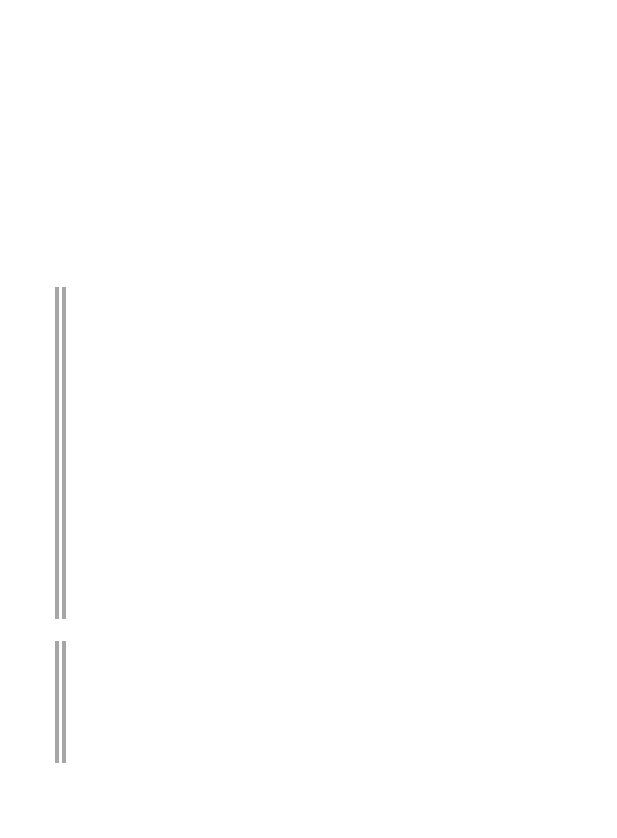
35
Restrições à liberdade dos meios de comunicação e às atividades dos jornalistas
Restrição da liberdade de imprensa
e atividades dos jornalistas
Declaração universal dos direitos humanos
(10 de dezembro de 1948)
Artigo 3
Toda pessoa tem direito à vida, à liberdade e à segurança
pessoal.
Artigo 5
Ninguém será submetido a tortura ou tratamento ou castigo cruel, desumano
ou degradante.
Artigo 9
Ninguém pode ser sujeito a prisão, detenção
ou exílio arbitrário.
Artigo 19
Todos têm direito à liberdade de opinião e
expressão; esse direito inclui a liberdade de , sem interferência, ter opiniões
e de buscar, receber e
difundir informações e ideias por qualquer meio e independentemente de
fronteiras.
Pacto Internacional sobre o Direito Civil
e Direitos Políticos (16 de dezembro de 1966)
Artigo 6
O direito à vida é o direito inalienável de todo ser humano. Este
direito é protegido por lei. Ninguém pode ser arbitrariamente privado
da vida.
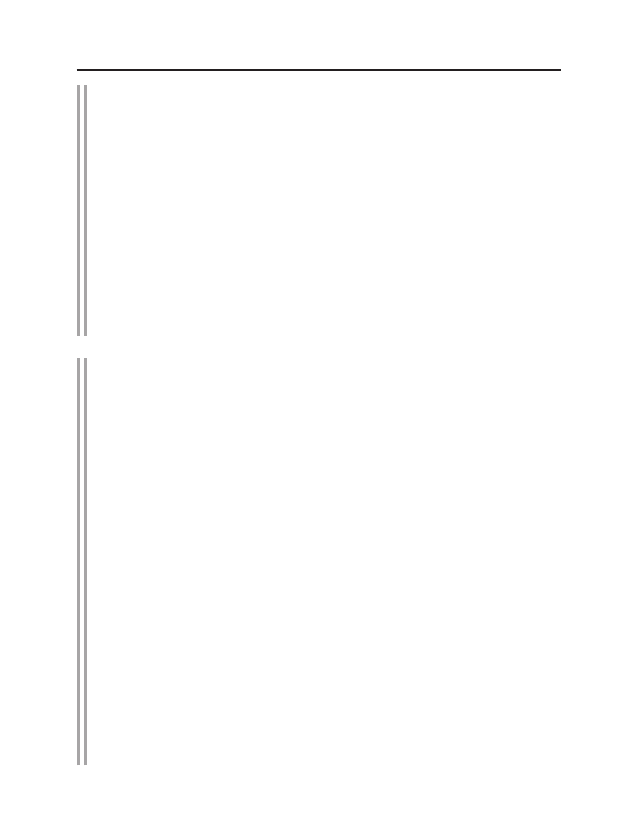
Livro branco sobre violações dos direitos humanos
e o Estado de direito na Ucrânia
36
Artigo 9
Toda pessoa tem direito à liberdade e privacidade
dureza. Ninguém pode ser sujeito a
prisão ou detenção arbitrária. Ninguém será privado
de liberdade, exceto por motivos e de acordo com o
procedimento estabelecido por lei.
Artigo 19
1. Todos têm o direito de expressar livremente
suas opiniões.
2. Todos têm o direito de expressar livremente a sua
opinião; este direito inclui a liberdade de procurar, receber e
difundir informações e ideias de todo o tipo, independentemente de
fronteiras, verbalmente, por escrito, em forma impressa
ou artística, ou por qualquer outro meio à sua
escolha.
Convenção para a Proteção dos Direitos Humanos
e liberdades fundamentais
(Roma, 4 de novembro de 1950)
Artigo 2 Direito à vida
O direito de cada pessoa à vida é protegido por lei. Ninguém pode
ser intencionalmente privado da vida, exceto em execução de uma
sentença de morte proferida por um tribunal por um delito para
o qual a lei preveja tal punição.
Artigo 3. Proibição da tortura
Ninguém será submetido a tortura nem a penas ou tratamentos desumanos ou
degradantes.
Artigo 5. Direito à liberdade e segurança pessoal
Todos têm direito à liberdade e segurança pessoal.
Artigo 10. Liberdade de expressão
Todos têm o direito de expressar livremente sua opinião. Este direito
inclui a liberdade de opinião e a liberdade de receber
e difundir informações e ideias sem qualquer interferência
das autoridades públicas e independentemente de
fronteiras. Este artigo não impede os Estados de
licenciarem empresas de radiodifusão, televisão ou
cinematografia.

37
Restrições à liberdade dos meios de comunicação e às atividades dos jornalistas
Convenção contra a tortura e outras crueldades,
desumano ou degradante
tipos de tratamento e punição
(10 de dezembro de 1984)
Artigo 2
1. Cada Estado Parte adotará medidas
legislativas, administrativas, judiciais e outras medidas eficazes para
prevenir atos de tortura em qualquer território sob sua jurisdição.
2. Nenhuma circunstância excepcional, quaisquer que sejam,
seja estado de guerra ou ameaça de guerra,
instabilidade política interna ou qualquer outra emergência pública, pode
justificar a tortura.
3. Uma ordem de um superior ou autoridade governamental
não pode justificar a tortura.
1º de julho
na região de Luhansk, perto do posto alfandegário ucraniano
A equipe de filmagem "Izvarino" do canal de TV russo "REN TV" foi
alvo de tiros de morteiro dos militares ucranianos. Como resultado de uma
explosão de mina, o repórter D. Kulaga foi contundido e ferido, o cinegrafista
V. Yudin ficou em estado de choque.
1º de julho
fotógrafo S. Kochetov, que colaborou com a oposição, desapareceu em Kharkov
publicações posicionais das autoridades de Kiev. Ele criou um ensaio fotográfico
"Lugansk rebelde nas fotografias de um fotógrafo de Kharkov".
3 de julho
A equipe de filmagem do Channel One foi atacada em Slavia
Vyansk.
4 de julho
equipe de filmagem do "Canal Cinco" russo perto da fronteira em
A região de Rostov foi atacada pela Ucrânia.
5 de julho
em Kiev, extremistas da organização nacionalista Chest-
noe word” destruiu a redação do jornal “Vesti”, que tentava
dar informações objetivas sobre as hostilidades no sudeste da
Ucrânia. Duas pessoas ficaram feridas - um jornalista e um segurança que
teve o maxilar quebrado.
9 de julho
nas proximidades de Lugansk, como resultado de um ataque de morteiro
R. Bochkala, jornalista do canal de TV ucraniano Inter, foi gravemente ferido pelos militares ucranianos .
Belaya_kniga_07_2014-11_2014-html.html

Livro branco sobre violações dos direitos humanos
e o Estado de direito na Ucrânia
38
9 de julho
Ativistas do Euromaidan exigiram a interrupção da liberação de um
dos maiores jornais ucranianos "Vesti". Esta publicação é conhecida por publicar
informações objetivas sobre os eventos no Maidan e sobre a operação militar
no sudeste da Ucrânia.
11 de julho
Jornalistas russos, inclusive da Rossiyskaya Gazeta,
ficou sob fogo de morteiro em Lugansk.
11 de julho
nas cidades do sudeste da Ucrânia que ficaram sob o controle
Militares ucranianos, pararam de transmitir canais de TV russos.
A grade de transmissão mudou em Artemovsk, Konstantinovka, Kramatorsk,
Dimitrov e Druzhkovka. Anteriormente, os canais de TV russos foram desligados em Slavyansk
, Mariupol e no sul da região de Odessa.
julho, 12
em Luhansk como resultado de um bombardeio de morteiros por ucranianos
as forças de segurança receberam um estilhaço na mão do operador do
canal de TV russo "LifeNews" V. Moroz.
13 de julho
Jornalista Mariupol morto em Dnepropetrovsk — Chefe
editor do jornal "Eu quero ir para a URSS" S. Dolgov. Ele foi sequestrado em 18 de junho por
militares do batalhão ucraniano Dnepr-1, que
o torturaram.
o 14 de julho
jornalista do canal de TV Russia-1 E. Rozhkov não foi autorizado a
Ucrânia, apesar de possuir todos os documentos necessários, incluindo
passagem de volta.
o 14 de julho
O Ministério de Assuntos Internos da Ucrânia pediu a proibição de entrada na Ucrânia e países
da União Europeia ao Diretor Geral do Canal Um K. Ernst, ao Diretor Geral do
canal de TV Zvezda G. Krichevsky, ao chefe do canal de TV LifeNews
A. Gabrelyanov, ao Diretor Geral do Rossiya-1 A. Zlatopolsky, ao chefe
do Centro de TV Y. Bystritskaya e outros 300 jornalistas russos. O Ministério de Assuntos Internos
recomendou que o Ministério das Relações Exteriores da Ucrânia apelasse à UE com um pedido para "verificar esses
jornalistas e proibi-los de entrar".
21 de julho
Instituto Internacional para a Segurança dos Jornalistas (INSI)
International News Safety Institute) em seu relatório reconheceu a Ucrânia como o
país mais perigoso para jornalistas. O Iraque está em segundo lugar.
Na noite de
22 a 23 de julho
quatro jornalistas, incluindo um freelance
Correspondente da Russia Today, o britânico G. Phillips
e cinegrafista da agência de notícias Anna-news V. Aksyonov desapareceram na
zona de combate no sudeste da Ucrânia.
Belaya_kniga_07_2014-11_2014-html.html

39
Restrições à liberdade dos meios de comunicação e às atividades dos jornalistas
23 de julho
devido a tentativas contínuas de intimidar a representação
meios de comunicação na Ucrânia, incluindo sequestros recentes de jornalistas
que cobrem o conflito na parte oriental do país, o representante da OSCE
para a Liberdade dos Meios de Comunicação, D. Mijatović, reiterou que a violência contra
jornalistas deve parar.
25 de julho
Conselho Nacional da Ucrânia sobre Televisão e Rádio
broadcasting ordenou que os provedores excluíssem do ar quatro
canais de TV russos - RTR-Planet, Russia 24, NTV-Mir e TV Center-
International.
25 de julho
do lado ucraniano disparou contra a equipe de filmagem do canal de TV
"Rússia 24", localizado no território da fazenda Primiussky,
região de Rostov.
27 de julho
correspondente do canal de TV ucraniano Espresso TV, cidadãos
Na Polônia, B. Zalevska recebeu um grave ferimento de bala na
zona de combate no sudeste da Ucrânia.
28 de julho
A promotoria de Melitopol iniciou um processo criminal contra
o caso do empresário I. Raisky sobre o fato de retransmissão de
canais de TV russos, cuja transmissão era anteriormente proibida no território da
Ucrânia.
29 de julho
A Agência Estatal da Ucrânia para Cinematografia se recusa a
Foi decidido emitir certificados de aluguel para os filmes russos The White
Guard e Poddubny. Segundo especialistas, os filmes demonstram
"desrespeito pela língua, povo e estado ucraniano" e
"certos fatos são distorcidos e reescritos em favor da Rússia".
31 de julho
Comitê Estadual de Televisão e Radiodifusão da Ucrânia
começou a considerar a questão da proibição de publicações pró-Rússia.
A SBU iniciou vários processos criminais contra vários jornais locais.
01 de agosto
Oficiais de inteligência ucranianos detiveram um funcionário
vídeo da agência RT Ruptly A. Yeprimyan. Após o interrogatório, ela foi condenada
a deixar o país dentro de dois dias.
3 de agosto
jornalistas do canal de TV Zvezda foram criticados pela Ucrânia
Militares russos no posto de controle "Gukovo" na região de Rostov, na fronteira com a Ucrânia.
4 de agosto
o operador e o motorista da agência de notícias Anna ficaram feridos em
Lugansk. A equipe de filmagem se dirigia ao local do bombardeio
realizado anteriormente pelas forças de segurança ucranianas, quando a poucos metros deles
Belaya_kniga_07_2014-11_2014-html.html

Livro branco sobre violações dos direitos humanos
e o Estado de direito na Ucrânia
40
o carro foi atingido por um projétil. O motorista foi ferido na parte superior das
costas, o operador M. Andreev foi ferido na mão direita.
5 de agosto
fotojornalista A. Stenin, que cobriu os eventos em
atual da Ucrânia, não entrou em contato com os editores.
7
agosto
Conselho Nacional da Ucrânia sobre Televisão e Radiodifusão
proibiu a retransmissão do canal de televisão russo RosBusinessConsulting
-TV (RBC-TV).
13 de agosto
em Kharkov, desconhecidos com coquetéis molotov atacados
cinema "Bommer", onde foi exibido o filme dirigido por S. Loznitsa "Maidan"
.
15 de agosto
pessoas não identificadas espancaram um jornalista na Praça da Independência em Kiev
nalistas do canal "Spilno TV".
21 de agosto
em uma das gráficas em Kiev, os oficiais da SBU apreenderam
circulação
do jornal Rabochiy Klass, oficialmente registrado de acordo com a legislação ucraniana.
22 de agosto
jornalistas do MIA "Russia Today", "ITAR-TASS", "NTV",
O Canal Um e vários outros meios de comunicação russos ficaram sob
fogo de morteiro enquanto trabalhavam em Luhansk.
24 de agosto
correspondente freelance para televisão e rádio estatais
da empresa Krym A. Mokhova e seu colega A. Shapovalov foram detidos
pela SBU na estrada entre Donetsk e Makeevka. Eles foram
libertados durante uma troca de prisioneiros em 21 de setembro de 2014
entre militares e milícias ucranianas.
25 de agosto
jornalistas da publicação "Crimean Telegraph" - fotógrafo
M. Vasilenko e correspondente E. Koroleva - foram detidos em um
dos postos de controle na região de Donetsk por combatentes do "Setor Direito".
28 de agosto
Conselho Nacional da Ucrânia sobre Televisão e
radiodifusão publicou uma lista de jornalistas e chefes de
canais de TV da Federação Russa que podem ser proibidos de entrar na
Ucrânia. A lista apresentada pelo regulador à SBU é composta por 49 pessoas.
30 de agosto
três funcionários do canal de TV ucraniano "Espresso TV"
(Chefe do projeto de Patrulha Rodoviária R. Shaposhnikov, jornalista
E. Vorobyov e cinegrafista M. Chkan) desapareceram perto de Ilovaisk,
região de Donetsk.
Belaya_kniga_07_2014-11_2014-html.html

41
Restrições à liberdade dos meios de comunicação e às atividades dos jornalistas
dia 1 de Setembro
dois jornalistas russos - T. Olevsky e O. Dzhemal -
desapareceu perto de Mariupol. Como se viu mais tarde, eles foram detidos
pelos combatentes do batalhão Azov.
2 de setembro
corpo encontrado em um carro perto da cidade de Snezhnoye
fotojornalista da agência Rossiya Segodnya A. Stenin, que desapareceu
no início de agosto no leste da Ucrânia na zona controlada pelas
forças de segurança ucranianas.
4 de setembro
Comitê Internacional para a Proteção dos Jornalistas condenou o assassino
fotojornalista da agência Rossiya Segodnya A. Stenin na Ucrânia
e exigiu que as autoridades ucranianas investigassem o incidente
. A. Stenin tornou-se o sétimo jornalista morto na Ucrânia desde o início de
2014.
5 de setembro
equipe de filmagem da REN TV foi criticada pelo ucraniano
artilharia no centro de Donetsk.
5 de setembro
O Departamento Regional de Poltava do Ministério de Assuntos Internos da Ucrânia informou que
que ele pretende começar a monitorar e controlar “a exibição e
visualização” de canais de TV russos proibidos.
11 de setembro
buscas foram realizadas em Kiev no escritório editorial do maior jornal ucraniano
Jornal "Vesti". Esta é a segunda busca desde o início deste ano.
11 de setembro
Chefe do Conselho Nacional da Ucrânia na Televisão
radiodifusão e radiodifusão Yu. Artemenko anunciou a proibição de entrada na Ucrânia para
35 representantes do mercado de mídia russo.
11 de setembro
na redação do maior jornal diário da Ucrânia
Vesti foi revistado. Os funcionários da SBU confiscaram os servidores da publicação e
verificaram os documentos.
12 de setembro
em conexão com uma batida por representantes de agências de aplicação da lei
D. Mijatović , representante da OSCE para a
liberdade dos meios de comunicação social, exortou as autoridades ucranianas a respeitarem os direitos dos
meios de comunicação social.
13 de setembro
A polícia ucraniana deteve o editor-chefe do jornal ucraniano
jornal "Vesti" I. Guzhva.
29 de setembro
Jornalistas da REN TV foram alvo de tiros na zona do aeroporto
porto de Donetsk.
Belaya_kniga_07_2014-11_2014-html.html

Livro branco sobre violações dos direitos humanos
e o Estado de direito na Ucrânia
42
Outubro 1
Cientista russo e chefe do projeto de notícias Novo-
Russo "Anna-news" M. Musin, bem como vários de seus colegas foram capturados
pelas forças de segurança ucranianas.
2 de outubro
funcionários do Segundo Canal Republicano autoproclamado
Os militares da República Popular de Donetsk foram informados de que os militares ucranianos
dispararam contra a sede do canal de TV.
14 de outubro
equipe de filmagem do canal de TV "LifeNews" ficou sob artilharia
setas perto do aeroporto de Donetsk.
15 de outubro
jornalista do "Canal 7" ucraniano A. Dotsenko foi demitido em Odessa
ce por ajudar seus colegas russos na preparação de um relatório sobre o monumento aos
fundadores da cidade.
16 de outubro
Comitê Estadual de Radiodifusão e Televisão
A Ucrânia tomou medidas no âmbito de “limpar o
espaço de informação nacional da imprensa separatista”, que
resultou na revogação da licença de vários meios de comunicação impressos.
22 de outubro
E. Anokhin, editor-chefe do site do Centro de Informações
detido em Odessa. Os editores da publicação afirmaram que esta prisão é
vista como nada mais do que pressão política.
22 de outubro
perto do escritório do partido não registrado Parnas, onde
um filme dedicado ao piloto ucraniano N. Savchenko foi exibido,
um correspondente freelance da Agência de Jornalismo Civil Rydus foi espancado
.
23 de outubro
O apresentador de TV E. Kiselev no aeroporto de Boryspil não é esquecido
estilos através da fronteira e emitiu uma ordem de deportação. Entretanto
, soube-se que o jornalista não foi autorizado a entrar por engano, tendo sido confundido
com o seu homónimo, o apresentador de televisão russo D. Kiselev.
24 de outubro
nos escritórios de Kiev das empresas "Associações de Tele-
canais", "Torsat", "Sattelecom", relacionados à transmissão de
canais de TV russos, foram pesquisados.
26 de outubro
guardas do líder do "Partido Radical" O. Lyashko atacaram
equipe de filmagem do Serviço de Notícias de Televisão do
canal de TV ucraniano “1+1”.
30 de outubro
a equipe de filmagem da edição árabe do canal RT conseguiu
sob o bombardeio de morteiros em Lugansk, ninguém ficou ferido. A mensagem
do canal de TV diz: “O bombardeio começou quando o correspondente A. Knishen-
Belaya_kniga_07_2014-11_2014-html.html

43
Restrições à liberdade dos meios de comunicação e às atividades dos jornalistas
Ko, o cinegrafista A. Zhukov e o assistente N. Bocharov, vestidos com uma
armadura azul brilhante com a inscrição “Press”, filmaram uma história em um dos postos de
controle da milícia localizados na linha de frente.”
4 de novembro
em Kiev, os policiais levaram o jornalista do canal de TV do Maidan
Notícias da Vida. A correspondente E. Zmanovskaya com uma câmera de vídeo e símbolos
do canal de TV foi cercada por jornalistas ucranianos perguntando por que
ela estava trabalhando na Ucrânia sem permissão. E. Zmanovskaya
tinha apenas uma carteira de identidade jornalística com ela: a garota não
levou seu passaporte, porque eles tentaram repetidamente quebrá-lo. Cerca de 40
colegas ucranianos não apenas fizeram
perguntas provocativas à jornalista russa, mas também gritaram insultos enquanto a polícia a levava para a delegacia
. A operadora que trabalhava com E. Zmanovskaya trouxe
seu passaporte para os policiais. Muito provavelmente, disseram as agências de aplicação da lei ucraniana
, os jornalistas enfrentarão deportação.
Belaya_kniga_07_2014-11_2014-html.html
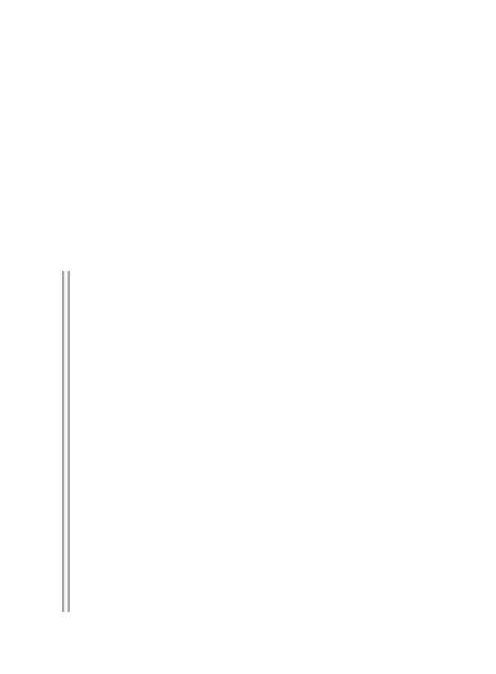
Livro branco sobre violações dos direitos humanos
e o Estado de direito na Ucrânia
44
Violação do direito à liberdade de reunião
e associações, eleições livres.
Intimidação e sequestro
oponentes políticos
Declaração Universal dos Direitos Humanos (10 de dezembro de 1948)
Artigo 5
Ninguém será submetido a tortura ou tratamento ou castigo cruel, desumano
ou degradante.
Artigo 7
Todas as pessoas são iguais perante a lei e têm direito, sem distinção,
à igual proteção da lei. Todos os seres humanos têm direito a igual proteção
contra qualquer forma de discriminação que viole esta
Declaração e contra qualquer incitamento a tal
discriminação.
Artigo 9
Ninguém pode ser sujeito a prisão, detenção
ou exílio arbitrário.
Artigo 12
Ninguém pode ser sujeito a ingerências arbitrárias na sua
vida privada e familiar, ataques arbitrários à
inviolabilidade do seu domicílio, ao sigilo da sua correspondência ou à sua
honra e reputação. Toda pessoa tem direito à proteção da lei contra
tais interferências ou ataques.
Artigo 20
1. Toda pessoa tem direito à liberdade de reunião e associação pacíficas
.
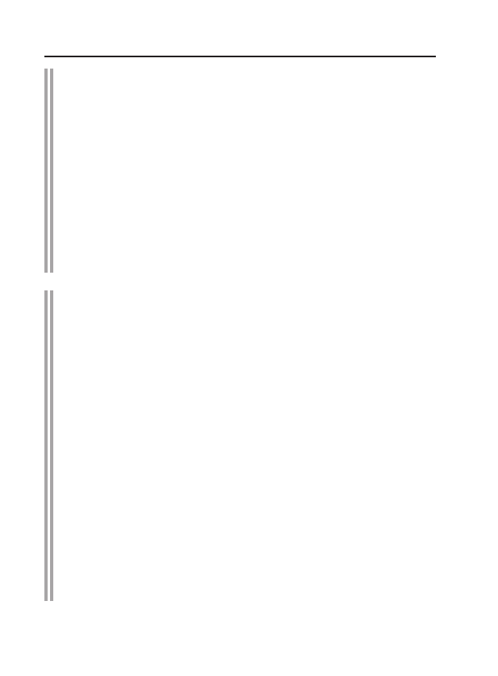
45
Violação dos direitos à liberdade de reunião e associação, eleições livres.
Intimidação e sequestro de opositores políticos
2. Ninguém pode ser obrigado a aderir a qualquer associação
.
Artigo 21
1. Toda pessoa tem o direito de tomar parte no governo de
seu país, diretamente ou por meio de
representantes livremente escolhidos.
2. Toda pessoa tem direito a igual acesso ao
serviço público de seu país.
3. A vontade do povo deve ser a base da autoridade do governo; esta vontade
deve encontrar expressão em eleições periódicas e não falsificadas
, que devem ser realizadas sob
sufrágio universal e igual por voto secreto ou
por outras formas equivalentes que assegurem a liberdade
de sufrágio.
Pacto Internacional sobre o Direito Civil
e direitos políticos
(16 de dezembro de 1966)
Artigo 7
Ninguém será submetido a tortura ou tratamento ou castigo cruel, desumano
ou degradante.
Em particular, nenhuma pessoa poderá, sem o seu livre consentimento
, ser submetida a experimentação médica ou científica.
Artigo 9
Toda pessoa tem direito à liberdade e segurança pessoal
. Ninguém pode ser sujeito a prisão ou
detenção arbitrária. Ninguém será privado de liberdade
, exceto por motivos e de acordo com o procedimento
estabelecido por lei.
Artigo 17
Ninguém será sujeito a
ingerências arbitrárias ou ilícitas na sua vida privada e familiar,
ataques arbitrários ou ilícitos à inviolabilidade do seu domicílio ou
ao segredo da sua correspondência, ou ofensas ilícitas à sua
honra e reputação.

Livro branco sobre violações dos direitos humanos
e o Estado de direito na Ucrânia
46
Artigo 20
1. Qualquer propaganda de guerra deve ser proibida por lei. 2. É proibida por lei
a defesa do
ódio nacional, racial ou religioso que constitua incitamento à discriminação, hostilidade ou violência.
Artigo 21
O direito à reunião pacífica é reconhecido. O exercício deste direito
não estará sujeito a outras restrições que não sejam as impostas por lei e necessárias em uma sociedade
democrática no interesse da segurança nacional ou pública , da ordem pública, da proteção da saúde ou da moral públicas ou da proteção da os direitos e liberdades dos outros.
Artigo 25
Todos os cidadãos têm, sem qualquer discriminação
a que se refere o artigo 2.º e sem restrições injustificadas
, o direito e a oportunidade de:
a) Participar na condução dos assuntos públicos, directamente
ou por intermédio de representantes livremente escolhidos;
(b) Votar e ser eleito em eleições periódicas genuínas realizadas
com base no sufrágio universal igualitário
por escrutínio secreto e assegurando a livre
expressão da vontade dos eleitores;
c) ser admitido no seu país, em condições gerais de igualdade, ao
serviço público.
Artigo 26
Todas as pessoas são iguais perante a lei e têm direito, sem qualquer discriminação
, à igual proteção da lei. A este respeito,
a discriminação de qualquer tipo deve ser proibida por lei, e a lei deve
garantir a todas as pessoas uma proteção igual e eficaz contra a
discriminação por qualquer motivo, como raça,
cor, sexo, idioma, religião, opinião política ou outra,
origem nacional ou social,
status de propriedade, nascimento ou outras circunstâncias.
Belaya_kniga_07_2014-11_2014-html.html
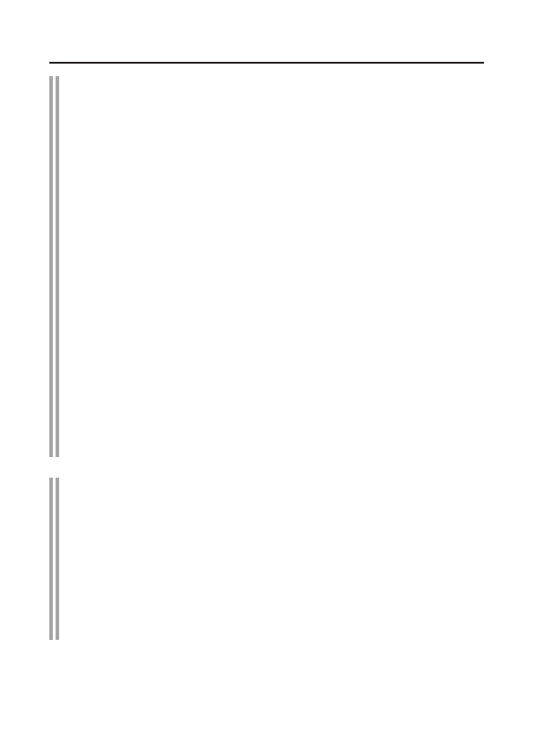
47
Violação dos direitos à liberdade de reunião e associação, eleições livres.
Intimidação e sequestro de opositores políticos
Convenção para a Proteção dos Direitos Humanos
e liberdades fundamentais
(Roma, 4 de novembro de 1950)
Artigo 5. Direito à liberdade e segurança pessoal
Todos têm direito à liberdade e segurança pessoal.
Artigo 6. Direito a um julgamento justo
Toda pessoa, em caso de controvérsia sobre seus direitos e obrigações civis ou
qualquer acusação criminal contra ela, tem direito a uma
audiência justa e pública dentro de um prazo razoável por
um tribunal independente e imparcial estabelecido por
lei.
Artigo 11. Liberdade de reunião e associação
Toda pessoa tem direito à liberdade de reunião pacífica e à liberdade
de associação com outras pessoas, inclusive o direito de formar
e filiar-se a sindicatos para a proteção de seus interesses.
Artigo 14. Proibição de discriminação
O gozo dos direitos e liberdades reconhecidos nesta
Convenção será assegurado sem discriminação de qualquer espécie
em razão de sexo, raça, cor, idioma, religião,
opinião política ou de outra natureza, origem nacional ou social
, pertença a minorias nacionais,
condição de propriedade , nascimento ou qualquer outro motivo.
Protocolo Adicional
à Convenção para a Proteção dos Direitos Humanos
e liberdades fundamentais
(Paris, 20 de março de 1952)
Artigo 3. Direito a eleições livres
As Altas Partes Contratantes comprometem-se a realizar, a
intervalos razoáveis, eleições livres por escrutínio secreto em
condições que assegurem a livre expressão da vontade
do povo na escolha dos órgãos do poder legislativo.
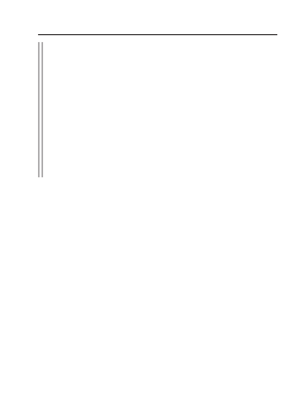
Livro branco sobre violações dos direitos humanos
e o Estado de direito na Ucrânia
48
Convenção contra a tortura e outras crueldades,
espécies desumanas ou degradantes
tratamento e punição (10 de dezembro de 1984)
Artigo 2
1. Cada Estado Parte tomará medidas
legislativas, administrativas, judiciais e outras medidas eficazes para
prevenir atos de tortura em qualquer território sob sua jurisdição
.
2. Nenhuma circunstância excepcional, quaisquer que sejam,
seja estado de guerra ou ameaça de guerra,
instabilidade política interna ou qualquer outra emergência pública, pode
justificar a tortura.
3. Uma ordem de um superior ou autoridade governamental
não pode justificar a tortura.
3 de julho
em Kiev, perto do edifício da Verkhovna Rada da Ucrânia, um grupo de mulheres que
algumas se apresentaram como “mães do Donbass” e tentaram fazer um comício.
“Somos contra a UE e a América, somos pela paz!” - declamaram os participantes
da ação. Os agentes da lei tiraram as mulheres do território da
Verkhovna Rada, explicando suas ações pelo fato de que as mulheres
“correram contra os policiais”.
7 de julho
Prefeito de Kiev V. Klitschko recebeu ameaças de apoiadores do Euromaidan
PS para incendiar a Câmara Municipal. O chefe da cidade admitiu que não era
seguro estar no centro da capital ucraniana.
8 de julho
em Slavyansk, deputado da Verkhovna Rada da Ucrânia O. Lyashko, acompanhado por
dirigindo metralhadoras, declarou-se à Câmara Municipal e, sob ameaça de
represálias, obrigou o secretário da Câmara Municipal, A. Samsonov, a assinar uma carta
de demissão, na qual se reconhecia como “covarde e traidor .” O funcionário
permaneceu em Slavyansk depois que as milícias o deixaram.
8 de julho
militantes do "Setor Direito" apreendidos e levados em local desconhecido
a direção do prefeito de Kurakhovo (região de Donetsk) S. Sazhko para verificar
informações sobre sua possível cooperação com a milícia de Donbass.
8 de julho
O Ministério da Justiça da Ucrânia exigiu a proibição da atividade
do Partido Comunista da Ucrânia (KPU). A reclamação correspondente
foi submetida ao Tribunal Administrativo Distrital de Kiev. Nos últimos meses

49
Violação dos direitos à liberdade de reunião e associação, eleições livres.
Intimidação e sequestro de opositores políticos
Representantes do KPU criticaram repetidamente as autoridades ucranianas pela
operação militar que está sendo realizada nas regiões orientais do país.
11 de julho
O Ministério da Administração Interna da Ucrânia anunciou a detenção do ex-prefeito da região eslava
Nelli Shtepa, que é suspeita de cometer crimes
ao abrigo da Parte 2 do artigo 110.º do Código Penal da Ucrânia
(invasão da integridade territorial e inviolabilidade
da Ucrânia). O Ministério de Assuntos Internos da Ucrânia também não exclui que N. Shtepa prestou
assistência a "militantes armados" e "grupos terroristas" em
Slavyansk.
15 de julho
prefeito interino de Slavyansk Alexander Samso-
Novov foi preso sob a acusação de "separatismo e organização de
grupos armados ilegais".
16 de julho
líder do partido nacional-radical "Setor Direito" D. Yarosh
anunciou a criação do "Corpo Voluntário Ucraniano" para combater
os "separatistas" no sudeste da Ucrânia.
22 de julho
em Kharkiv, o coordenador do movimento público desapareceu
zheniya "União dos Cidadãos", um ativista do movimento antifascista A. Lukyanov.
22 de julho
em Kiev ao deputado da Verkhovna Rada da Ucrânia do Partido das Regiões
N. Levchenko foi atacado durante a votação sobre a aprovação do projeto de lei
“Sobre a mobilização parcial”, após o que foi retirado à força da
sala de sessões do Parlamento.
23 de julho
em Kiev durante a sessão matinal da Verkhovna Rada da Ucrânia
houve uma briga entre os deputados do partido radical de direita "
Svoboda" e o Partido Comunista da Ucrânia. O líder da facção comunista, P. Symonenko, foi atacado por
deputados nacionalistas agressivos que tentaram
empurrá-lo para fora da sala de sessões, acusando-o de divulgar
informações falsas sobre a situação no sudeste do país.
23 de julho
corpo mutilado de secretário encontrado na região de Donetsk
organização partidária do Partido Comunista da aldeia Glinka, deputado do
conselho da aldeia Kumachovsky do distrito de Starobeshevsky V. Kovshun. Ele foi brutalmente torturado em um
posto de controle da Guarda Nacional da Ucrânia perto da vila de Luzhki. Anteriormente, V. Kovshun
recebeu repetidamente ameaças de nacionalistas ucranianos.
24 de julho
presidente do parlamento ucraniano A. Turchynov anunciou a dissolução
vice-facção do Partido Comunista da Ucrânia na Verkhovna Rada da Ucrânia, chamando-o de um
evento histórico e expressando a esperança de que nunca mais haverá
facções comunistas no parlamento ucraniano.
Belaya_kniga_07_2014-11_2014-html.html

Livro branco sobre violações dos direitos humanos
e o Estado de direito na Ucrânia
cinquenta
29 de julho
Oficiais da SBU detiveram o "prefeito do povo" Nikolaev D. Niko-
nova, que é suspeito de "invadir a
integridade territorial da Ucrânia".
30 de julho
Deputado do Povo da Verkhovna Rada da Ucrânia O. Lyashko juntos
com seus capangas, ele capturou o chefe da administração da cidade de Stakhanov,
região de Lugansk, Y. Borisov, e, acusando-o de terrorismo, o levou em uma
direção desconhecida.
5 de agosto
no centro de Kiev, perto do edifício da Verkhovna Rada da Ucrânia, durante
Durante a ação pacífica anti-guerra de representantes do Movimento Feminino de Kharkiv
, um grupo de jovens do "Setor Direito" atacou os participantes do
comício, jogando fogos de artifício e pedras neles.
17 de agosto
de Severodonetsk, que está sob o controle do
Vikov, pessoas desconhecidas sequestraram o chefe interino da cidade
A. Gavrilenko e o secretário da Câmara Municipal S. Kunitsa. Os sequestradores
usavam uniformes militares e balaclavas.
agosto, 26
durante uma coletiva de imprensa em uma agência de notícias
GolosUA, líder do Partido Comunista P. Symonenko, disse que o SBU sequestra
membros do partido e os tortura. P. Symonenko disse que o
KPU enviaria um apelo oficial à missão da OSCE sobre os fatos
de tortura contra membros do partido.
28 de agosto
em Priluki (região de Chernihiv) nacional desconhecido
indivíduos com mentalidade política atacaram e espancaram ativistas da oposição
. O chamado Comitê de Lustração de Pryluky informou
que o uso da violência contra opositores políticos suscitou total
apoio e aprovação tanto na imprensa local quanto nos órgãos policiais
da cidade.
30 de agosto
ocorreu um incidente em Kherson, como resultado do qual o
dado por ativistas públicos que realizaram uma
manifestação anti-guerra na Praça Svoboda, no centro da cidade, exigindo “Pare a guerra!” e
“Pare de aumentar as tarifas!”. Eles foram atacados e espancados
por ativistas do Euromaidan.
31 de agosto
sob pressão dos apoiantes do Euromaidan
o tribunal da região de Kherson libertou da prisão V. Goncharevsky,
suspeitou que foi ele quem acabou com as pessoas em Odessa que caíram
das janelas da Casa dos Sindicatos durante a tragédia de 2 de maio. A decisão do tribunal foi tomada,
apesar do fato de o tribunal ter materiais em vídeo confirmando
Belaya_kniga_07_2014-11_2014-html.html

51
Violação dos direitos à liberdade de reunião e associação, eleições livres.
Intimidação e sequestro de opositores políticos
mi participação direta do suspeito no crime que lhe é imputado .
Na noite de
31 de agosto a 1 de setembro
vários ativistas de Dneprodzerzhinsk
O comitê municipal do Partido Comunista da Ucrânia realizou buscas com detenção. Em particular,
no apartamento do deputado da Câmara Municipal de Dneprodzerzhinsk do Partido Comunista da Ucrânia e pai de três
filhos pequenos, S. Tkachenko
, uma busca foi realizada por pessoas não identificadas.
Após a formatura, S. Tkachenko foi levado para o centro de detenção pré-julgamento da administração municipal da SBU.
07 de setembro
desconhecidos incendiaram o carro do deputado Berdyansky
Câmara Municipal (região de Zaporozhye) O. Boyko (Fação do Partido das
Regiões).
11 de setembro
representantes do movimento "Chestno em Drohobych" durante
“mesa redonda” exigiu que o prefeito de Drogobych,
região de Lviv, A. Radzievsky (Partido das Regiões), renuncie por
motivos políticos. "Ativistas" nacionalistas acusaram o prefeito da cidade de
ser um símbolo do "sistema imperial moscovita".
11 de setembro
na sessão do Conselho Regional de Rivne, presente em
Na sessão, o representante da organização radical de direita UNA-UNSO A.
Pantyukhov exigiu que os representantes do Partido das Regiões
renunciassem aos seus poderes parlamentares no prazo de 15 dias. A. Pantyukhov
os chamou de "cães" e ameaçou: se os antigos "regionais" não ouvirem, eles serão
"jogados em um aterro sanitário".
14 de setembro
em Kharkov, na Praça Svoboda, voltaram a ocorrer confrontos
inovações entre os defensores da federalização da Ucrânia e
radicais nacionais ucranianos.
18 de setembro
em Kharkov, cerca de cem manifestantes saíram para protestar
contra o baixo salário de vida na Ucrânia. Durante um comício na
Praça Svoboda, eles declararam a necessidade de estabelecer a paz no
Donbass e se opuseram à demolição de monumentos soviéticos. Os manifestantes
seguravam cartazes: “Pare o fascismo!”, “Pela Ucrânia sem fascistas!”, “Deixe os
oligarcas viverem por um salário digno!”, “Tire as mãos dos
monumentos soviéticos!”. Durante a manifestação, os piquetes foram atacados por um grupo de desconhecidos
mascarados. A polícia, que cercou os manifestantes com um cordão
, não tomou medidas ativas.
15 de setembro
à sala da sede do Comitê Regional Volyn do Partido Comunista para a preparação e
eleições parlamentares antecipadas eclodiram em cerca de dois
Belaya_kniga_07_2014-11_2014-html.html

Livro branco sobre violações dos direitos humanos
e o Estado de direito na Ucrânia
52
dezenas de jovens que se diziam da UNA-UNSO. Ameaçando
Makarov com pistolas, eles atacaram
P. Bushchik, o primeiro secretário do comitê regional do partido, o derrubaram no chão e o chutaram severamente. O líder do
Volyn Komsomol A. Kononovich, que tentou proteger
seu companheiro de partido, teve o rosto esmagado e o nariz quebrado. Os guardas
que chegaram não tentaram impedir o ataque. Somente depois que os agressores
entraram nos carros e deixaram o local do crime, a polícia começou a criar a
aparência de ações investigativas.
16 de setembro
vários ativistas Automaidan que se reuniram perto
O Verkhovna Rada da Ucrânia, exigindo a adoção da lei “Sobre a limpeza
do poder”, apreendeu o deputado V. Zhuravsky (Partido das Regiões), colocou
-o em uma lata de lixo, colocou um pneu de carro em cima, derramou-o com um desconhecido
, substância possivelmente combustível e ameaçou incendiá-lo.
Segundo a publicação "Zerkalo Nedeli" datada
17 de setembro
, Centro
a comissão eleitoral recusou-se a inscrever-se como candidato a
deputado popular ao actual parlamentar, membro da
facção do Desenvolvimento Económico, o ex-regionalista A. Onishchenko.
17 de setembro
representantes do Kherson "Autodefesa" jogaram ovos-
e derramou tinta verde sobre as pessoas que estavam presentes na reunião com
MP, líder do partido Ucrânia Forte S. Tigipko.
"Autodefesa" em uniformes de camuflagem, bem como em roupas esportivas
, tentou invadir a sala onde S. Tigipko realizou uma reunião
com seus apoiadores. No entanto, depois que a segurança do centro de escritórios
trancou o prédio por dentro, eles esperaram até o final da ação e jogaram ovos
e tinta verde nas pessoas que saíram após o evento. Ao mesmo tempo, os
bandidos gritavam acusações de “separatismo e
traição aos interesses da Ucrânia” nos endereços de saída. A polícia não interveio no que estava acontecendo
.
18 de setembro
serviço de imprensa da promotoria da região de Chernihiv
na satisfação pelo Tribunal Administrativo do Distrito de Chernihiv de sua
reclamação sobre o término das atividades da
organização regional de Chernihiv do partido do bloco russo.
18 de setembro
Radicais do "Setor Direito" em Ternopil invadiram o escritório
V. Fedak, Chefe do Departamento de Pessoal da
Administração Estatal Regional de Ternopil, esteve ausente e exigiu que escrevesse uma carta de demissão
. Depois disso, ele foi colocado à força em uma lixeira. Os radicais explicavam suas
ações pelo fato de V. Fedak ser “um suborno, um membro do
Belaya_kniga_07_2014-11_2014-html.html

53
Violação dos direitos à liberdade de reunião e associação, eleições livres.
Intimidação e sequestro de opositores políticos
regiões, recebeu um cargo durante a presidência de V. Yanukovych e
é um defensor do Anti-Maidan”.
21 de setembro
em Kharkov, os nacionalistas atacaram os anti-Maidanistas.
Testemunhas oculares relatam que os confrontos começaram após provocações
de torcedores e ativistas do Setor Direito
e das organizações Hromadska Varta Kharkiv. Então os nacionalistas começaram a atirar
folhagens e pedras nos anti-Maidanistas.
23 de setembro
Um comício anti-guerra deveria ocorrer em Kherson.
O organizador foi a organização totalmente ucraniana “Juventude! Hulk!
Valada!". No entanto, as autoridades locais e os
ativistas nacionalistas que os apoiam declararam antecipadamente a manifestação “separatista”. Os nacionalistas puxaram
extras com cartazes
“Separatismo não vai passar!” para o local do comício. etc., e a polícia deteve os organizadores do
evento assim que eles entraram na praça.
23 de setembro
em um comício "lustração" no centro da cidade de Koryukov-
ka (região de Chernihiv), ativistas de organizações nacionalistas
exigiram que
I. Rybakov, um conhecido político e atual deputado popular da Verkhovna Rada da Ucrânia (grupo não-facional "Reformas
para o Futuro"), retirasse sua candidatura das primeiras eleições parlamentares
eleições. Os nacionalistas trouxeram uma efígie de I. Rybakov para o comício, que
tentaram queimar, mas as condições climáticas não permitiram
. Banners com slogans anti-russos também foram vistos.
24 de setembro
militantes do "Setor Direito" ameaçaram os participantes do
eleições parlamentares para impedir que “traidores” entrem na Verkhovna Rada da Ucrânia
. Caso contrário, os nacionalistas radicais prometeram retornar da zona
“ATO”, e então todos “responderiam de acordo com seus méritos”.
25 de setembro
Primeiro vice-prefeito de Kherson I. Pastukh
O briefing disse que ultimamente o conselho da cidade de Kherson tem
recebido mensagens de grupos de iniciativa, organizações e associações
sobre a realização de comícios pacíficos “Somos pela paz!”, “Moradores de Kherson pela paz!”,
“Mulheres de Kherson pela paz!” etc. Ele afirmou que esta situação “é de
natureza provocativa” e a esse respeito, as autoridades da cidade entraram em contato com a
SBU, e também entraram com uma ação para proibir o evento
, referindo-se, entre outras coisas, a uma carta da prefeitura de Kherson
do Ministério da Administração Interna da Ucrânia sobre a impossibilidade de garantir a realização de
tais ações no campo jurídico.
Belaya_kniga_07_2014-11_2014-html.html

Livro branco sobre violações dos direitos humanos
e o Estado de direito na Ucrânia
54
25 de setembro
"ativistas" desconhecidos deixaram o MP Ver-
V. Pylypyshyn (Partido Popular) da Rada da Ucrânia (Partido Popular) em uma lata de lixo
e encharcado com tinta vermelha. V. Pilipishin queria se inscrever
como candidato para eleições antecipadas, mas os "ativistas" hooligans
o impediram. 30 pessoas em balaclavas estavam esperando por ele na Comissão Eleitoral Central
, eles o espancaram com as mãos e os pés.
25 de setembro
em Cherkassy, “autodefesa Maidan” atacou deputados
conselho regional.
Os extremistas jogaram os deputados do conselho regional A. Kharlamov e V. Vovchenko em uma lata de lixo .
25 de setembro
líder do Partido Comunista da Ucrânia Petro Symonenko durante uma reunião
Chi na Verkhovna Rada com representantes da OSCE disse que os membros do Partido Comunista da Ucrânia
estão sendo intimidados para impedir sua participação nas
eleições parlamentares antecipadas.
26 de setembro
militantes do "Setor Direita" atrapalharam a reunião de Melito-
Câmara Municipal polonesa
.
"Setor Direito" exigiu do secretário
Câmara Municipal S. Minko, de modo que ele incluiu a questão de sua renúncia na
agenda, ou renunciou voluntariamente ao seu cargo.
26 de setembro
por volta das duas horas da tarde, representantes do "Setor Direito" e outros
Alguns grupos radicais de direita atacaram a tenda de propaganda do Partido Comunista da Ucrânia,
localizada perto da Estação Sul em Kiev
.
Nacionalistas derrotados
tenda e tirou todos os folhetos de propaganda dos comunistas.
27 de setembro
no distrito de Volodarsko-Volynsky da região de Zhytomyr
Ativistas de mentalidade nacionalista, entre os quais também foram
vistos militantes do chamado batalhão de voluntários “Aidar”,
interromperam a reunião do deputado da Verkhovna Rada da Ucrânia V. Zhuravsky com
os eleitores, jogando ovos nele.
27 de setembro
Polícia ucraniana interrompeu manifestação anti-guerra em Kharkov
enseada.
Na noite de
29 a 30 de setembro
Nacionalistas ucranianos severamente espancados
manifestantes na Praça Svobody em Kharkiv (perto do monumento demolido a
V.I. Lenin). 3 pessoas foram hospitalizadas.
30 de setembro
em Melitopol (região de Zaporozhye) um mal desconhecido
o agressor atacou a tenda de propaganda do Partido Comunista da Ucrânia.
30 de setembro
em Odessa, nacionalistas espancaram severamente um deputado popular
aquele N. Shufrich. De acordo com testemunhas oculares, apenas N. Shufrich e seu colega
Belaya_kniga_07_2014-11_2014-html.html

55
Violação dos direitos à liberdade de reunião e associação, eleições livres.
Intimidação e sequestro de opositores políticos
O "bloco da oposição" N. Skorik desceu do carro perto do prédio da
Administração Estatal Regional de Odessa, pois foram imediatamente atacados pelos
"Euromaidanitas", que começaram a espancá-los. Como resultado, N. Shufrich
foi levado para um dos hospitais em Odessa com diagnóstico de concussão.
Outubro 1
Ministro de Assuntos Internos da Ucrânia A. Avakov pediu radical
mas os ucranianos atentos se abstêm de ações ilegais
contra funcionários e políticos. Em sua página no Facebook, ele
escreveu: “Mais alguns rostos quebrados de shufrichs, pilipishins linchados
e a Europa dará as costas à nossa revolução vitoriosa. Receio que a
América também seja...”.
12 de outubro
em Nikolaev, dois ataques foram feitos de uma só vez na agi-
tendas do "Bloco de Oposição".
Piquetes Agit localizados no cruzamento da Avenida Lenin com
a Rua Dekabristov e da Avenida Lenin com a Rua Ryumin foram atacados . Em ambos os casos, foram selecionados produtos de
propaganda impressa
.
15 de outubro
advogado do ex-prefeito de Slavyansk N. Shtepa E. Stati-
Va disse que sua ala foi severamente espancada, supostamente
no escritório do promotor de Kharkov.
16 de outubro
pela manhã em Odessa na Praça da Alfândega dois desconhecidos
atacou os agitadores do partido Ucrânia Forte, espancou-os e quebrou
as estruturas de campanha
.
Vice-chefe do partido S. Fabrikant fez
uma declaração sobre a pressão política generalizada em larga escala
sobre a "Forte Ucrânia". Segundo ela, nas últimas duas semanas
, os casos de ataques a militantes do partido, seus espancamentos se tornaram mais frequentes, há
casos de sequestros, ameaças e chantagens.
O 20 de outubro
Agência de informação "Nacional da Ucrânia
Novosti, citando autoridades, informou que mulheres grávidas, assim como mulheres em licença maternidade para cuidar de crianças
, estavam sob a lei ucraniana “Sobre a Limpeza do Poder” .
26 de outubro
O Ministério da Administração Interna da Ucrânia informou que durante a votação na Assembleia
Durante as últimas eleições parlamentares, a milícia da região de Kiev registrou
25 violações da legislação eleitoral.
Cerca de duas dúzias dessas violações também foram registradas na região de Dnipropetrovsk .
De acordo com policiais ucranianos, os principais crimes são
campanha, remoção ilegal de uma cédula, presença de
pessoas suspeitas no território das assembleias de voto. Além disso, de acordo
com o Ministério de Assuntos Internos da Ucrânia, na região de Dnipropetrovsk, dentro de casa
Belaya_kniga_07_2014-11_2014-html.html

Livro branco sobre violações dos direitos humanos
e o Estado de direito na Ucrânia
56
um dos comitês distritais revelou 20.000 cédulas inválidas.
Em dois distritos de Dnepropetrovsk, os boletins de voto foram danificados
. A polícia informou ainda sobre os factos da distribuição de
folhetos de propaganda e mensagens SMS de natureza de campanha.
26 de outubro
serviço de imprensa do Departamento do Ministério da Administração Interna da região de Kirovograd
anunciou o início de dois processos criminais por violação da
lei eleitoral nas eleições parlamentares.
26 de outubro
, segundo a Interfax, jornalistas e observadores
causou inúmeras violações nas assembleias de voto na
região de Odessa. Em particular, a organização regional de Odessa do Comitê de
Eleitores da Ucrânia registrou um número significativo de
cédulas extras em oito assembleias de voto especiais em Odessa.
30 de outubro
o serviço de imprensa do chefe de Estado informou que o presidente
Ucrânia P. Poroshenko demitiu 30 chefes de administrações distritais no âmbito da
implementação da lei "Sobre a limpeza do poder." Um decreto foi assinado sobre a
demissão de oito chefes de administrações distritais
em Donetsk, sete em Dnepropetrovsk e Zaporozhye,
quatro em Odessa, dois em Sumy e um nas
regiões de Rivne e Kharkiv.
Belaya_kniga_07_2014-11_2014-html.html
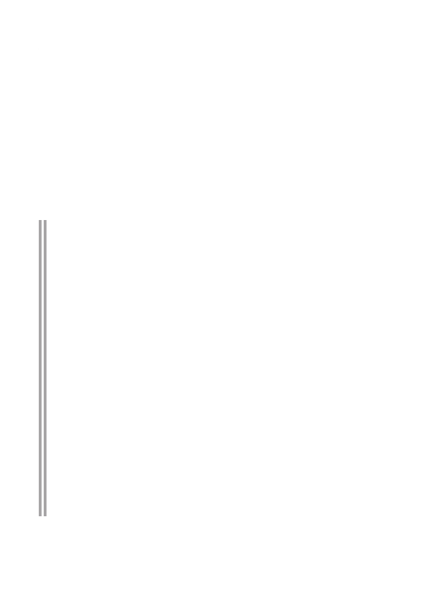
57
Violação dos direitos das minorias, discriminação,
xenofobia e nacionalismo agressivo
Violação dos direitos das minorias,
discriminação, xenofobia
e nacionalismo agressivo
Pacto Internacional sobre o Direito Civil
e Direitos Políticos (16 de dezembro de 1966)
Artigo 20
1. Qualquer propaganda de guerra deve ser proibida por lei. 2. É proibida por lei
a defesa do
ódio nacional, racial ou religioso que constitua incitamento à discriminação, hostilidade ou violência.
Artigo 26
Todas as pessoas são iguais perante a lei e têm direito, sem qualquer discriminação
, à igual proteção da lei. Nesse sentido,
a discriminação de qualquer tipo deve ser proibida por lei, e a lei deve
garantir a todas as pessoas proteção igual e efetiva contra a
discriminação por qualquer motivo, como raça,
cor, sexo, idioma, religião, opinião política ou outra. ,
nacional ou origem social,
status de propriedade, nascimento ou outras circunstâncias.
Artigo 27
Nos países onde
existam minorias étnicas, religiosas e linguísticas, não será negado às pessoas pertencentes a essas minorias
o direito, em comunidade com outros membros do mesmo
grupo, de desfrutar de sua própria cultura, de professar e praticar sua própria religião
e de usar sua própria linguagem.
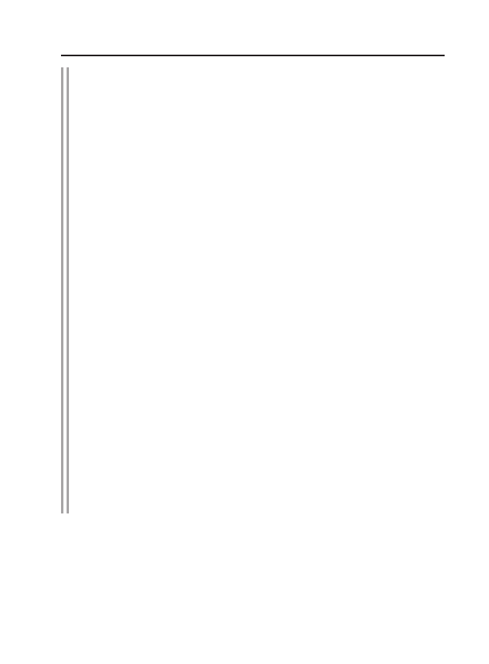
Livro branco sobre violações dos direitos humanos
e o Estado de direito na Ucrânia
58
Convenção Internacional sobre Eliminação
todas as formas de discriminação racial
(21 de dezembro de 1965)
Artigo 4
Os Estados participantes condenam toda propaganda e todas as organizações
baseadas em idéias ou teorias da superioridade de uma raça
ou grupo de pessoas de uma determinada cor ou origem étnica
, ou que tentem justificar ou encorajar o
ódio e a discriminação racial sob qualquer forma, e
comprometem-se a tomar medidas imediatas e positivas destinadas
a erradicar todo o incitamento a tal discriminação
ou atos de discriminação, e para tanto, de acordo com
os princípios contidos na Declaração Universal dos Direitos Humanos
e os direitos expressamente estabelecidos no artigo 5 desta
. alia:
(a) Torná-lo um delito punível por lei para qualquer
a expressão de ideias baseadas na superioridade ou ódio racial,
qualquer incitação à discriminação racial, bem como todos os atos de
violência ou incitação a tais atos dirigidos contra
qualquer raça ou grupo de pessoas de cor ou
origem étnica diferente, bem como a disposição de qualquer assistência para realizar
atividades racistas, incluindo seu financiamento;
(b) Proibir e proibir organizações e
atividades organizadas e de propaganda
que promovam e incitem a discriminação racial, e tornem a
participação em tais organizações ou atividades um
crime punível por lei;
(c) Impedir
que governos nacionais ou locais ou instituições públicas encorajem
ou incitem a discriminação racial.
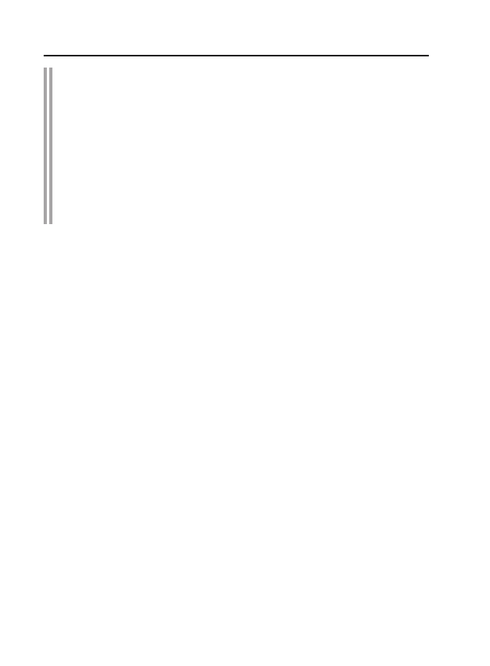
59
Violação dos direitos das minorias, discriminação,
xenofobia e nacionalismo agressivo
Convenção para a Proteção dos Direitos Humanos
e liberdades fundamentais
(Roma, 4 de novembro de 1950)
Artigo 14. Proibição de discriminação
O gozo dos direitos e liberdades reconhecidos nesta
Convenção será assegurado sem discriminação de qualquer espécie
em razão de sexo, raça, cor, idioma, religião,
opinião política ou de outra natureza, origem nacional ou social
, pertença a minorias nacionais,
condição de propriedade , nascimento ou qualquer outro motivo.
3 de julho
no posto de controle de Uspenka na região de Donetsk, oficiais da SBU detidos
ataman de cossacos russos da região de Kurgan V. Popov por suspeita
de “envolvimento em atividades terroristas no território da
Ucrânia”.
4 de julho
chefe do SBU V. Nalyvaychenko anunciou o início de uma investigação
por suspeita de financiamento do terrorismo na Ucrânia contra A. Selivanov,
membro do Presidium do Conselho de Coordenação de Organizações de
Compatriotas Russos de Toda a Ucrânia, que dirige a
organização pública de oposição ucraniana “Cossacos Fiéis”.
10 de julho
em Lviv, o conselho da cidade adotou uma resolução, de acordo com
ao qual todos os produtos fabricados na Rússia serão exibidos
separadamente dos ucranianos sob o sinal "Made in the Russian Federation". As novas regras
valem tanto para supermercados quanto para pequenas lojas, quiosques e bancas
do mercado. Os infratores serão processados.
18 de julho
a Câmara Municipal de Ternopil decidiu um mar-
para a cura de bens produzidos na Rússia. “A partir de agora, os moradores poderão
ver claramente onde estão os bens russos e expressar sua posição civil em relação ao país agressor”, disse o prefeito S. Nadal
a esse respeito . A polícia municipal está
encarregada de verificar o cumprimento desta decisão das autoridades municipais .
Na noite de
20 a 21 de julho
escritório em Kiev foi atacado
Banco "Padrão Russo". Representantes da organização do Comitê Negro
jogaram bombas de fumaça e fogos de artifício no prédio. “A Ucrânia deve
expulsar as empresas russas de seu território. Se o estado não for

Livro branco sobre violações dos direitos humanos
e o Estado de direito na Ucrânia
60
capazes de fazê-lo, os próprios cidadãos o farão!” disseram os atacantes
.
23 de julho
Morador de 52 anos de Odessa E. Grinchenko foi vítima de um ataque
da multidão agressiva porque se recusou a retirar a
fita de São Jorge do carro e gritar “Glória à Ucrânia”. Seu nariz estava quebrado
e suas roupas rasgadas.
25 de julho
líder do partido nacional-radical ucraniano "Setor Direito"
D. Yarosh foi colocado na lista internacional de procurados pela Interpol por acusações
de incitação pública a
atividades terroristas e extremistas relacionadas ao uso da mídia.
31 de julho
no ar do canal de TV russo "Russia 24" demonstrou
Um discurso previamente gravado no ar da Hromadske TV pelo
jornalista ucraniano B. Butkevich (trabalha para o jornal Tizhden), no qual ele
propõe se livrar de 1,5 milhão de “residentes extras” das regiões de Donetsk e
Luhansk, foi gravado anteriormente. As próprias regiões, em sua opinião, devem ser usadas
para bombear recursos. “Donbass não é apenas uma
região deprimida. Tem muita gente inútil por aí. Estou absolutamente consciente
disso. A região de Donetsk tem aproximadamente quatro milhões
de habitantes. E pelo menos um milhão e meio extra”, disse B. Butkevich.
A Ucrânia, segundo o jornalista, não precisa "entender o Donbass". “Precisamos
entender o interesse nacional ucraniano. Donbass precisa ser usado
voto como recurso. Com relação ao Donbass, não conheço uma receita de como fazer isso
rapidamente. No entanto, o mais importante a fazer é que há pessoas que
só precisam ser mortas”, disse ele.
3 de agosto
nacionalistas radicais, incluindo ativistas do Setor Direita
e a festa Svoboda, organizaram tumultos em Odessa para atrapalhar
o show da cantora ucraniana A. Lorak, que foi realizado em uma das boates da cidade
, devido ao fato de ela ter se apresentado anteriormente na Crimeia, e também recebeu um
prêmio de música russa.
Cerca de 200 pessoas armadas com cassetetes, cujos rostos
estavam escondidos por máscaras , tentaram entrar nas instalações da boate . Eles gritaram slogans insultuosos
ao cantor.
3 de agosto
, de acordo com o assessor do chefe do Ministério de Assuntos Internos da Ucrânia V. Gerashchenko, este
o departamento pretende proibir a entrada no país de cerca de 500
artistas russos que aprovaram a "anexação da Crimeia pela Rússia e a divisão da Ucrânia".
5 de agosto
em Nikolaev, desconhecidos derrotaram duas filiais do Sberbank
Rússia” e jogou mais um pouco de tinta vermelha.
Belaya_kniga_07_2014-11_2014-html.html

61
Violação dos direitos das minorias, discriminação,
xenofobia e nacionalismo agressivo
7 de agosto
Gabinete do Procurador-Geral da Ucrânia exige o cancelamento da decisão
O Conselho da Cidade de Kharkiv sobre a concessão ao membro do Conselho da Federação da
Assembleia Federal da Federação Russa A. Shishkin o título de cidadão honorário de
Kharkov.
14 de agosto
deputados da Câmara Municipal de Rivne decidiram
vinculando "tudo
entidades empresariais na cidade de Rivne,
independentemente da forma de propriedade, o comércio de mercadorias
de origem russa, para fornecer uma rotulagem especial
dessas mercadorias "Produtos da Federação Russa".
16 de agosto
prefeito da cidade de Novoukrainka, região de Kirovograd A. Koren-
durante uma reunião de negócios, este último exigiu que em todas as lojas
da região, os produtos fabricados na Rússia fossem dispostos em
prateleiras separadas ou marcados com adesivos especiais
representando “homens verdes” ou a bandeira russa.
18 de agosto
em Ternopil, desconhecidos profanaram o monumento a A.S. Pushkin
tendo pintado com tinta e pintado com chamadas à morte do Presidente da
Federação Russa V.V. Coloque em.
22 de agosto
em Kiev, desconhecidos pintados com as cores do estado
bandeira da cerca de Ucrânia do edifício da embaixada russa na Ucrânia.
22 de agosto
em Kiev, radicais nacionais atacaram um carro
postos de abastecimento que operam sob as marcas das empresas russas
TNK e Lukoil. Hooligans pintaram postos de gasolina com as palavras “Abaixo os
postos de gasolina russos!” e os atirou com bombas de fumaça em chamas.
25 de agosto
no edifício da Administração Estatal Regional de Poltava
Com o apoio do governador V. Bugachuk, uma apresentação do
livro do nacionalista ucraniano V. Bobrovich “Como lutaram os cossacos do Cáucaso.
Aluno do centurião Ustim. Durante a apresentação, o autor pediu "matar
russos".
27 de agosto
popular na publicação online de Lviv "Purely Lviv
Life” postou um vídeo contendo declarações insultuosas
sobre os cidadãos e a liderança da Rússia.
28 de agosto
em Kiev por agências policiais ucranianas,
apesar da apresentação dos passaportes diplomáticos , foram detidos dois funcionários da Embaixada da Rússia na Ucrânia, incluindo o guarda-
costas pessoal
do embaixador .
Belaya_kniga_07_2014-11_2014-html.html

Livro branco sobre violações dos direitos humanos
e o Estado de direito na Ucrânia
62
28 de agosto
Um comício de nacionalistas ucranianos ocorreu em Kharkiv contra
chamada agressão russa.
Ativistas com cartazes e bandeiras ucranianas se reuniram perto do prédio do Consulado Geral da Rússia . Eles gritaram
insultos aos “moscovitas” e ao presidente da Federação Russa
V.V. Coloque em. Durante o comício, bombas de fumaça e fogos de artifício voaram da multidão de participantes em direção ao
consulado e aos policiais que faziam fila perto dele .
28 de agosto
no Monte Kerek em Beregovo (região Transcarpática), onde
A comunidade húngara vive pacificamente, pessoas desconhecidas profanaram a
bandeira nacional dos húngaros, que ficava ao lado da
bandeira do estado da Ucrânia. O autarca da cidade, Z. Babyak, manifestou-se indignado com mais um
caso de ataque a símbolos húngaros e dirigiu-se aos habitantes
da cidade com um comunicado em que sublinhou que o acto de vandalismo ameaça a
vida pacífica da cidade e pode causar ódio étnico. Ele também
pediu às agências de aplicação da lei que respondam a esse incidente e
punam os responsáveis.
27 de agosto
Comitê Executivo da Cidade de Mukachevo (Transcarpathia-
oblast) decidiu renomear várias ruas com nomes
de figuras famosas da história russa e soviética.
28 de agosto
O semanário de Kiev Delovaya Stolitsa publicou material
rial "Como limpar o mundo russo", no qual ele pediu às agências de aplicação da lei
que tomem ações punitivas contra "indesejáveis". Entre as medidas propostas
por esta publicação:
•
excluir da agenda política da sociedade ucraniana o tema da
língua russa como segunda língua estatal;
• garantir a "desrussificação" do processo educativo, substituindo por completo
o fio do russo para o inglês no campo da educação (da pré -escola
ao ensino superior);
•
"espremer" a língua russa da mídia ucraniana;
•
exclua completamente o uso de produtos pop em russo
em programas de rádio, especialmente na banda FM;
•
limitar a distribuição de materiais impressos russos no território da Ucrânia
;
•
remover completamente os nomes da
era soviética da toponímia das cidades e aldeias ucranianas.
29 de agosto
Vice-presidente da Regional Dnepropetrovsk
Administração Estatal G. Korban, apelidado por jornalistas
Belaya_kniga_07_2014-11_2014-html.html

63
Violação dos direitos das minorias, discriminação,
xenofobia e nacionalismo agressivo
“atacante profissional número um na Ucrânia”, anunciou a necessidade da
nacionalização de todas as propriedades russas na Ucrânia.
29 de agosto
em Lvov, foi feito um ataque ao consulado da Rússia.
Radicais nacionalistas hostis arrancaram a placa do prédio
e também tentaram cobrir o perímetro do consulado com
pneus de carro. A ação ocorreu com a inação dos órgãos de aplicação da lei.
A PARTIR DE
30 de agosto
no jornal financiado regionalmente Ivano-
O conselho regional de Frankivsk "Galiza" atribuiu uma faixa inteira sob o
título "Inimigo - Rússia".
Na noite de
30 de agosto
em Lutsk, pessoas não identificadas cortaram pneus em todos os quatro
rodas do carro do chefe do Centro Cultural Russo O. Sagan e
prendeu uma fita azul-amarela no para-brisa.
31 de agosto
A revista americana "Foreign Policy" citou uma confirmação
Há evidências de que neonazistas, em particular o batalhão Azov, cuja liderança adere aos pontos de vista
desenvolvidos pelos nacionalistas ucranianos nas décadas de 1930 e 1940, estão lutando contra as milícias no sudeste da Ucrânia .
31 de agosto
ex-prefeito de Uzhgorod S. Ratushnyak em sua página do Facebook em
exigiu insultantemente que as autoridades de Kiev criassem
batalhões de judeus, ciganos e tártaros para serem enviados para a zona “ATO”, dizendo que
os representantes dessas minorias nacionais não beneficiam o Estado
, mas apenas “devoram bilhões de nosso dinheiro”.
C
dia 1 de Setembro
outra campanha contra mercadorias iniciada em Uzhhorod
fabricantes russos.
Adesivos apareceram em muitos estabelecimentos comerciais e de restauração contendo informações de que
produtos russos não são vendidos neste estabelecimento.
dia 1 de Setembro
A Comissão Eleitoral Central da Ucrânia negou os húngaros da Transcarpácia
criação de um círculo eleitoral separado. Anteriormente, o Presidium da
Sociedade de Cultura Húngara da Transcarpathia (OVKZ) solicitou oficialmente à
CEC com um pedido que, de acordo com o artigo 18, Seção III da Lei da
Ucrânia “Sobre Eleições de Deputados Populares”, ao formar
- círculos eleitorais membros, importa ter em conta que “os limites dos
distritos eleitorais uninominais são determinados tendo em conta os limites das
unidades administrativo-territoriais, os interesses dos membros das comunidades territoriais e
a residência das minorias nacionais no território correspondente.
dia 1 de Setembro
Ministro da Defesa da Ucrânia V. Heletey anunciou que o
o walkie-talkie para libertar o leste da Ucrânia de terroristas terminou e
Belaya_kniga_07_2014-11_2014-html.html

Livro branco sobre violações dos direitos humanos
e o Estado de direito na Ucrânia
64
começou a “Grande Guerra Patriótica”, cujas perdas chegarão a
dezenas de milhares.
2 de setembro
A Câmara Municipal de Chernivtsi dirigiu-se ao Presidente
Banco Nacional da Ucrânia V. Gontareva com um pedido para considerar a
possibilidade de revogar as licenças bancárias emitidas pelo OJSC Subsidiary Bank of
Sberbank of Russia e OJSC Russian Standard Bank, sob o pretexto de
que esses bancos podem estar envolvidos no financiamento das milícias.
3 de setembro
A Agência Estatal da Ucrânia para o Cinema
publicou no site oficial informações sobre a proposta ao Ministério da
Cultura da Ucrânia para impor sanções contra filmes e séries de televisão
produzidos na Rússia.
4 de setembro
no ar do canal de TV parlamentar "Rada" o deputado do Supremo
Noah Rada da Ucrânia S. Kaplin disse que a Federação Russa
nunca deixará a Ucrânia sozinha, então a única chance de acabar com
a guerra é eliminar Vladimir Putin como chefe de Estado.
Pela manhã
6 de setembro
na aldeia de Zhnyatino, distrito de Mukachevo (Transcarpathian
região), os moradores locais descobriram que algumas das sepulturas do
cemitério protestante foram destruídas, vasos foram quebrados e coroas de flores foram queimadas. Os monumentos do
cemitério ucraniano, localizado no território da aldeia, não foram
danificados. Zhnyatino é o lar de 65% de húngaros étnicos,
principalmente protestantes, e cerca de 30% de
ucranianos, principalmente gregos-católicos. Segundo o representante do
partido húngaro KMKS S. Oros,
nunca houve conflitos entre os moradores locais por motivos étnicos ou religiosos.
07 de setembro
Televisão alemã (ZDF) mostra soldados ucranianos
Exército indiano de uniforme com símbolos nazistas em seus capacetes. O vídeo
foi filmado na Ucrânia por um grupo do canal privado norueguês TV2, que preparou um
material sobre o batalhão ucraniano Azov na cidade de Urzuf.
8 de setembro
no distrito de Bobrinetsky da região de Kirovograd em uma reunião
O Instituto de Diretores de Escola decidiu proibir o ensino
da língua russa nas escolas. O assunto foi completamente retirado do currículo
. Autoridades ucranianas acreditam que os diretores das escolas que
introduziram a língua russa como disciplina são “separatistas” e cúmplices
de “terroristas”.
9 de setembro
a promotoria do distrito de Svatovsky da região de Luhansk informou
la por suspeita de “ajudar terroristas” agindo. Prefeito de Rubizhne
Belaya_kniga_07_2014-11_2014-html.html

65
Violação dos direitos das minorias, discriminação,
xenofobia e nacionalismo agressivo
A. Khomenko, que apoiou ativamente os moradores da cidade que discordavam
das novas autoridades de Kiev e defendiam a federalização da Ucrânia.
11 de setembro
The Guardian publicou um artigo afirmando
o batalhão Azov e outras formações de voluntários são “a
ameaça mais séria ao governo ucraniano, e talvez até
ao estado, devido às opiniões da extrema direita, até mesmo neonazistas, de
muitos de seus combatentes”.
11 de setembro
na sessão do Conselho Municipal de Nikolaev, foi decidido
a ideia de “rotulagem” obrigatória para produtos russos. Em Zhytomyr
, nacionalistas distribuíram panfletos anti-russos
pedindo às pessoas que não comprassem produtos russos.
11 de setembro
representantes do Centro de Direitos Humanos para Informações Jurídicas
ções e consultas com base na organização pública "Romanicherhen"
relataram violações dos direitos da minoria nacional cigana em
Uzhgorod. Em particular, verificou-se que as escolas n.º 13
e n.º 14 em Uzhgorod impedem a educação das crianças ciganas. De acordo com a decisão do
ex-prefeito V. Pogorelov e do chefe do departamento de educação N. Komarnitsky
, a escola nº 14 foi reorganizada, devido à qual, a partir de 1º de setembro, mais de
30 crianças ciganas que completaram quatro séries puderam não iniciar o processo educacional
.
11 de setembro
sacerdote da Igreja Greco-Católica Ucraniana N. Zaliz-
Nyak, falando no funeral de um dos combatentes do Setor Direito, exigiu
que dez milicianos fossem destruídos para cada Guarda Nacional.
11 de setembro
portal de notícias "Ternopil Information Bureau"
chamou a atenção de seus leitores para o fato de que os motoristas de ônibus locais
supostamente "propaganda" a cultura russa. Os nacionalistas da
mídia local não gostam do fato de a música em russo ser tocada no transporte público
.
12 de setembro
Adjunto do Conselho Regional de Ivano-Frankivsk Z. Bolyuk
saiu com uma demanda para estudar as razões para o aparecimento de um grande número de
imprensa de língua russa nas cadeias de varejo dos Cárpatos. Ela
fez um inquérito parlamentar aos presidentes do conselho regional e da administração estadual regional
, bem como às autoridades competentes, exigindo verificar por que as publicações impressas em russo
prevalecem nas prateleiras dos quiosques dos Cárpatos .
Z. Bolyuk exigiu verificar quem
fornece tantas prensas em russo para os quiosques e por quê.
Belaya_kniga_07_2014-11_2014-html.html

Livro branco sobre violações dos direitos humanos
e o Estado de direito na Ucrânia
66
18 de setembro
em Kiev, Dnepropetrovsk, Vinnitsa, Poltava, Zhitomir
e outras cidades da Ucrânia, foram realizados cursos do "jovem Bandera". Em
seminários gratuitos, ativistas de várias organizações radicais
nacionais disseram aos representantes da geração jovem da Ucrânia
como organizar e conduzir adequadamente várias ações e comícios,
encontrar pessoas com ideias semelhantes e atrair voluntários e realizar
campanhas de informação.
18 de setembro
o prefeito da cidade de Khmelnytsky S. Melnyk apresentou na reunião
sessão do conselho da cidade de Khmelnitsky, uma proposta para rotular
produtos russos, incluindo medicamentos, com a imagem do besouro da batata do Colorado.
19 de setembro
chefe da administração regional de Chernivtsi R. Vanzuryak em uma carta
ao presidente do Conselho Nacional da Ucrânia de Televisão e Radiodifusão pediu para proibir a filmagem de um filme histórico russo
na região de Chernivtsi .
19 de setembro
um vídeo apareceu na Internet informando que na aldeia de Novica (Iva-
but-Frankivsk região), um "batalhão" infantil "Falcon" foi formado. Imagens de vídeo
mostram crianças cantando o hino ucraniano e depois entoando
cânticos nacionalistas: “Glória à Ucrânia – glória aos heróis,
morte aos moscovitas! Glória à nação - morte aos inimigos! Ucrânia acima de tudo!”
19 de setembro
em Dnepropetrovsk, foram lançadas ações russofóbicas para combater
cotação e rotulagem de produtos fabricados na Rússia. Cheques
com expressões obscenas e insultuosas
dirigidas a V.V. começaram a aparecer nos pontos de venda da cidade. Coloque em.
21 de setembro
em Kramatorsk, região de Donetsk, pessoas desconhecidas pintadas
forças nas cores da bandeira nacional da Ucrânia e o monumento "Setor Direito" a
V.I. Lênin. Um tridente também foi pintado no pedestal.
22 de setembro
em Nikolaev, desconhecido profanou um monumento às vítimas
Holocausto. Em uma laje de granito, instalada em uma pequena praça no
cruzamento da Oktyabrsky Prospekt com a Kherson Highway, uma
inscrição apareceu na forma de uma suástica, aplicada em tinta vermelha.
22 de setembro
o líder do partido Svoboda O. Tyagnibok em sua página em
O Facebook exortou as autoridades ucranianas a “rejeitar as ilusões sobre a possibilidade de
um cessar-fogo por meio de concessões políticas ou territoriais a
Putin”. “O desdobramento da agressão russa contra a Ucrânia, a ocupação da
Crimeia e a invasão gradual do Donbass provam que quaisquer
concessões ao agressor apenas o encorajam”, disse ele.
Belaya_kniga_07_2014-11_2014-html.html

67
Violação dos direitos das minorias, discriminação,
xenofobia e nacionalismo agressivo
25 de setembro
a pedido do presidente do Parlamento ucraniano A. Turchynov
O departamento de investigação do Ministério da Administração Interna da Ucrânia abriu um processo criminal contra
24 deputados da Verkhovna Rada da Ucrânia, que em 17 de setembro deste ano.
visitou a Duma Estatal da Rússia para discutir com colegas russos
possíveis medidas para implementar as iniciativas pacíficas dos presidentes da Rússia e da
Ucrânia para resolver a crise ucraniana. Segundo A. Turchinov
, os parlamentares cometeram “traição”.
Na noite de
30 de setembro
intrusos desconhecidos fizeram uma curva
um truque de hooligan contra uma das filiais do Sberbank da
Rússia em Lvov. As vitrines da instituição financeira foram encharcadas de
tinta azul e vermelha.
.
30 de setembro
Deputado da Verkhovna Rada da Ucrânia I. Farion, falando em
Kiev, durante a despedida solene dos combatentes
do batalhão de patrulha da polícia de Sich, criado a partir de voluntários do partido nacionalista
Svoboda, afirmou que “a guerra com a Rússia nunca parou” e
convocou os recrutas “a vingar dura e cruelmente por cada morto
, por cada falta, por cada negligência da palavra
ucraniana, cultura ucraniana, igreja ucraniana”. Segundo I. Farion, “esta
guerra é étnica. A guerra dos moscovitas com os ucranianos…”
.
2 de outubro
em entrevista a jornalistas estrangeiros Primeiro Vice-Primeiro Ministro
O ministro da Ucrânia A. Sych disse que o governo ucraniano pretende
introduzir cotas para materiais impressos em russo, citando
considerações de segurança da informação.
9 de outubro
A Câmara Municipal de Kiev introduziu uma marcação especial de preços
apelidos para produtos russos. A decisão correspondente foi tomada
como parte do programa de medidas para coordenar as
atividades de informação e proteger a segurança da informação do estado na
capital.
14 de outubro
em várias grandes cidades da Ucrânia em conexão com o aniversário de
Durante a UPA, desfiles neonazistas com tochas foram realizados,
símbolos nazistas e de Bandera foram usados ativamente e
declarações misantrópicas foram feitas. Em particular, o deputado da Verkhovna Rada da Ucrânia
, I. Farion, falando diante dos representantes dos radicais nacionais em
Kiev, pediu “atirar nos moscovitas”, destruir Moscou – o “
buraco negro da segurança europeia”, citou A. Hitler, incitado
a usar a força militar.
Belaya_kniga_07_2014-11_2014-html.html

Livro branco sobre violações dos direitos humanos
e o Estado de direito na Ucrânia
68
14 de outubro
Nacionalistas ucranianos com as bandeiras do "Setor Direito" e VO
Svoboda chegou à Verkhovna Rada da Ucrânia com demandas para adotar
um projeto de anistia, reconhecer
os soldados da UPA em nível estadual e também proibir a ideologia comunista. Durante a ação,
coquetéis molotov e fogos de artifício foram jogados no prédio do parlamento.
15 de outubro
no serviço de imprensa da usina metalúrgica "Zaporozhye-
Stal informou que um grupo
de 100 a 150 pessoas usando máscaras com os símbolos do Setor Direito bloqueou as principais entradas
das empresas.
21 de outubro
em Lvov, representantes do movimento de Resistência Autônoma
leniya” colocou panfletos por ocasião do aniversário do assassinato em 1933
em Lvov do cônsul soviético A. Mailov pelo nacionalista ucraniano
N. Lemik. Os organizadores da ação anunciaram que "hoje a façanha de um jovem
nacionalista é mais relevante do que nunca". De acordo com ativistas nacionalistas
, “o povo ucraniano sempre encontrará seu Nikolai
Lemik para seu Oleksiy Maylov”.
23 de outubro
em Kirovograd pelo partido Batkivshchyna em frente ao edifício do estado regional
administração, foi organizada uma performance, que consistia no
fato de que todos podiam atirar de uma arma pneumática em um
retrato do Presidente da Federação Russa. De acordo com relatos da mídia local
, essa ideia foi adotada pelos nacionalistas de Rovno, Poltava,
Cherkassy.
28 de outubro
, de acordo com o Ministro da Cultura da Ucrânia, na lista de russos,
proibidos de entrar no país foram 14 artistas.
Belaya_kniga_07_2014-11_2014-html.html
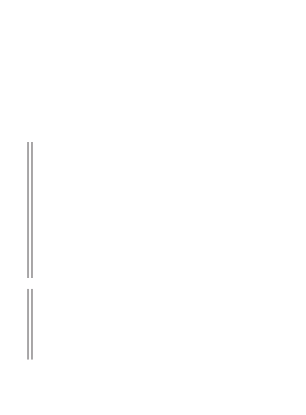
69
Violação do direito à liberdade de pensamento, consciência e religião
Violação do direito à liberdade
pensamentos, consciências e religiões
Declaração universal dos direitos humanos
(10 de dezembro de 1948)
Artigo 3
Toda pessoa tem direito à vida, à liberdade e à segurança
pessoal.
Artigo 5
Ninguém será submetido a tortura ou tratamento ou castigo cruel, desumano
ou degradante.
Artigo 18
Todos têm direito à liberdade de pensamento, consciência e religião;
este direito inclui a liberdade de mudar de religião ou crença e
a liberdade, sozinho
ou em comunidade com outros e em público ou privado, de manifestar sua religião ou crença no ensino, no
culto e na observância.
Pacto Internacional sobre o Direito Civil
e direitos políticos
(16 de dezembro de 1966)
Artigo 6
O direito à vida é o direito inalienável de todo ser humano. Este
direito é protegido por lei. Ninguém pode ser arbitrariamente privado
da vida.
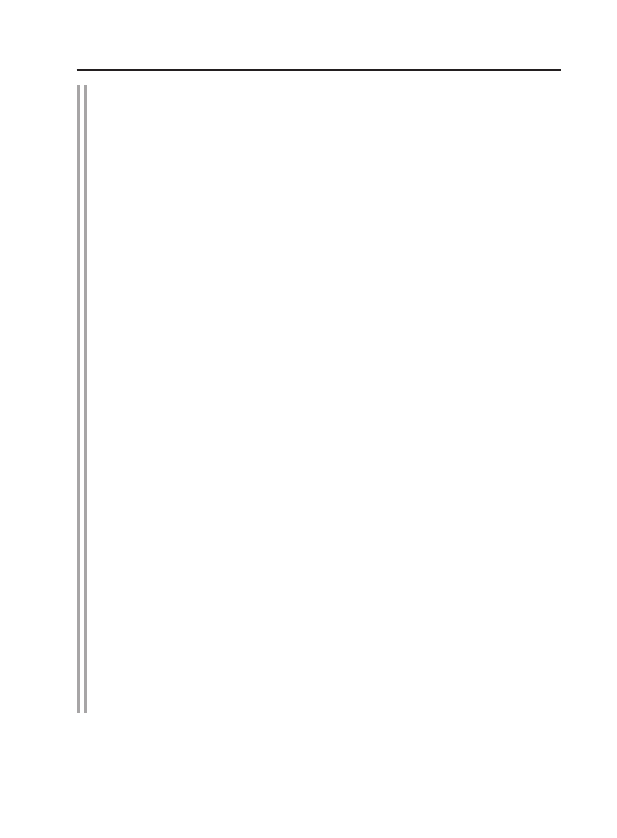
Livro branco sobre violações dos direitos humanos
e o Estado de direito na Ucrânia
70
Artigo 7
Ninguém será submetido a tortura ou tratamento ou castigo cruel, desumano
ou degradante.
Em particular, nenhuma pessoa poderá, sem o seu livre consentimento
, ser submetida a experimentação médica ou científica.
Artigo 9
Toda pessoa tem direito à liberdade e segurança pessoal
. Ninguém pode ser sujeito a prisão ou
detenção arbitrária. Ninguém será privado de liberdade
, exceto por motivos e de acordo com o procedimento
estabelecido por lei.
Artigo 18
1. Todos têm direito à liberdade de pensamento, consciência e religião
. Este direito inclui a liberdade de ter ou adotar uma religião ou
crença de sua escolha, e a liberdade,
sozinho ou em comunidade com outros e em público ou
privado, de manifestar sua religião ou crença no culto,
observância e ensino.
2. Ninguém pode ser submetido a coação que prejudique a sua
liberdade de ter ou adotar uma religião ou crença da sua escolha.
Artigo 20
1. Qualquer propaganda de guerra deve ser proibida por lei. 2. É proibida por lei
a defesa do
ódio nacional, racial ou religioso que constitua incitamento à discriminação, hostilidade ou violência.
Artigo 26
Todas as pessoas são iguais perante a lei e têm direito, sem qualquer discriminação
, à igual proteção da lei. Nesse sentido,
a discriminação de qualquer tipo deve ser proibida por lei, e a lei deve
garantir a todas as pessoas proteção igual e efetiva contra a
discriminação por qualquer motivo, como raça,
cor, sexo, idioma, religião, opinião política ou outra. ,
nacional ou origem social,
status de propriedade, nascimento ou outras circunstâncias.
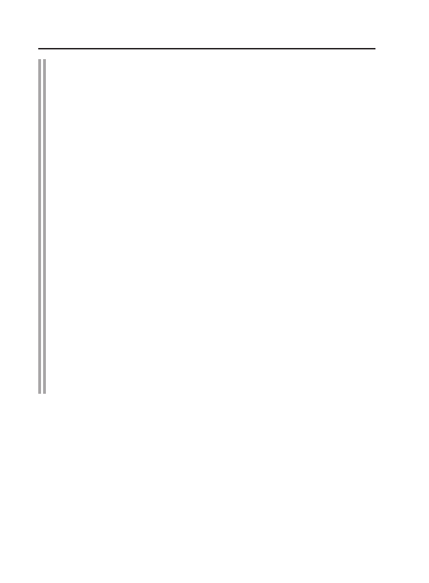
71
Violação do direito à liberdade de pensamento, consciência e religião
Convenção para a Proteção dos Direitos Humanos e Liberdades Fundamentais
(Roma, 4 de novembro de 1950)
Artigo 2 Direito à vida
O direito de cada pessoa à vida é protegido por lei. Ninguém pode
ser intencionalmente privado da vida, exceto em execução de uma
sentença de morte proferida por um tribunal por um delito para
o qual a lei preveja tal punição.
Artigo 3. Proibição da tortura
Ninguém será submetido a tortura nem a penas ou tratamentos desumanos ou
degradantes.
Artigo 5. Direito à liberdade e segurança pessoal
Todos têm direito à liberdade e segurança pessoal.
Artigo 9. Liberdade de pensamento, consciência e religião
Todos têm direito à liberdade de pensamento, consciência e religião; este direito
inclui a liberdade de mudar de religião ou crença e a liberdade , sozinho ou em comunidade com outros e em público ou privado, de
manifestar sua religião ou crença no culto, no ensino, no culto e na observância.
Artigo 14. Proibição de discriminação
O gozo dos direitos e liberdades reconhecidos nesta
Convenção será assegurado sem discriminação de qualquer espécie
em razão de sexo, raça, cor, idioma, religião,
opinião política ou de outra natureza, origem nacional ou social
, pertença a minorias nacionais,
condição de propriedade , nascimento ou qualquer outro motivo.
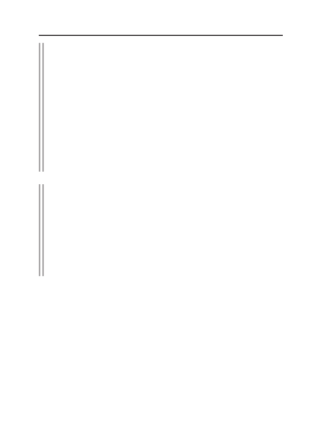
Livro branco sobre violações dos direitos humanos
e o Estado de direito na Ucrânia
72
Convenção contra a tortura e outras crueldades,
espécies desumanas ou degradantes
tratamento e punição (10 de dezembro de 1984)
Artigo 2
1. Cada Estado Parte adotará medidas
legislativas, administrativas, judiciais e outras medidas eficazes para
prevenir atos de tortura em qualquer território sob sua jurisdição.
2. Nenhuma circunstância excepcional, quaisquer que sejam,
seja estado de guerra ou ameaça de guerra,
instabilidade política interna ou qualquer outra emergência pública, pode
justificar a tortura.
3. Uma ordem de um superior ou autoridade governamental
não pode justificar a tortura.
Protocolo Adicional às Convenções de Genebra
datado de 12 de agosto de 1949 sobre a proteção das vítimas
conflitos armados não internacionais
(Ata II, Genebra, 8 de junho de 1977)
Artigo 9. Proteção do pessoal médico e religioso
O pessoal médico e religioso é respeitado e protegido
e recebe toda a assistência possível para o cumprimento das suas
funções. Ele não deve ser forçado a realizar tarefas
incompatíveis com sua missão humanitária.
A PARTIR DE
1 a 2 de julho
duas igrejas da Igreja Ortodoxa Ucraniana foram queimadas
do Patriarcado de Moscou (UOC) na aldeia de Antipovka (região de Cherkasy) e
em Pyriatyn (região de Poltava).
13 de julho
homens armados não identificados em uniforme militar entraram no Santo
a-Mikhailovsky em Krasnoarmeysk (região de Donetsk) durante a
celebração da Divina Liturgia e impediu sua realização.
17 de julho
durante a liturgia na Igreja da Ressurreição de Cristo na eslava
Um grupo de radicais nacionais armados invadiu a igreja e
começou a ameaçar seu reitor, Arcipreste V. Vesely, declarando que não
havia lugar na Ucrânia para a Igreja Ortodoxa Ucraniana do
Patriarcado de Moscou.

73
Violação do direito à liberdade de pensamento, consciência e religião
20 de julho
um grupo de radicais nacionais armados forçou o arcipreste
V. Yablonovsky para cavar uma cova para si mesmo. No mesmo dia,
algemaram o arcipreste V. Stratovich e um saco em sua cabeça, levaram-no para a floresta,
onde o forçaram a ajoelhar-se, interrogaram-no e insultaram-no.
28 de julho
durante o bombardeio dos militares ucranianos, um projétil atingiu
ao território da administração diocesana de Gorlovsky da UOC. Por sorte
, ninguém ficou ferido.
28 de julho
de um ferimento de estilhaços, o clérigo de Severodo-
da diocese de Netsk - clérigo da Igreja de São Pedro e São Paulo na cidade de
Pervomaisk, Padre G. Nikishev.
30 de julho
na aldeia de Krasnoarmeiskoye (região de Donetsk), um grupo de desconhecidos
homens armados famosos em uniformes militares dirigiram-se à casa
do Arcipreste I. Sergienko, reitor da Igreja St. Alexander Nevsky.
O clérigo foi alvo de insultos e acusações de que
"está envolvido em ajudar bandidos e envia dinheiro para Moscou".
Uma busca ilegal foi realizada na casa de I. Sergienko, durante a qual
homens armados o forçaram a "confessar sua participação nas atividades de
uma organização clandestina".
30 de julho
Arcipreste da UOC E. Podgorny foi detido em um posto de controle perto de
Amvrosievka (região de Donetsk). Durante a inspeção, seu carro foi
deliberadamente danificado. O próprio clérigo foi insultado com palavrões
, acusado de financiar a República Popular de Donetsk e
de ser um informante do inimigo. Então E. Podgorny
foi amarrado, severamente espancado, a cruz foi arrancada, baleada em sua cabeça e
ridicularizada de todas as maneiras possíveis por um longo tempo. Além disso,
posteriormente, pessoas armadas realizaram uma busca ilegal na
casa do clérigo, houve ameaças contra seu filho,
prêmios, dinheiro da igreja e um carro foram confiscados.
31 de julho
um clérigo da Igreja de São Jorge foi morto por um fragmento de concha
Padre V. Kreslyansky. O fragmento atingiu o padre quando ele
voltava para casa do templo após o culto noturno.
7 de agosto
em Lugansk no templo em homenagem ao ícone da Mãe de Deus "Ternura"
um ataque direto de artilharia. A igreja sobreviveu, mas foi
seriamente danificada.
Belaya_kniga_07_2014-11_2014-html.html

Livro branco sobre violações dos direitos humanos
e o Estado de direito na Ucrânia
74
10 de agosto
seis paroquianos da Catedral da Epifania em Gor-
hábeis ficaram feridos como resultado do bombardeio, informou o serviço de imprensa da
diocese de Horlivka e eslava da UOC.
17 de agosto
Deputado da Verkhovna Rada da Ucrânia do partido Svoboda
Y. Bublik disse que a eleição do Metropolitan Onuphry como o novo chefe da UOC
"em termos do grau de possível dano ao estado ucraniano" é
comparável à eleição em 2010 do presidente da Ucrânia V. Yanukovych.
20 de agosto
deputado do partido "Liberdade" da cidade de Malyn (Zhytomyr
região) N. Polinovsky apoiou a iniciativa de fechar a
Igreja da Santa Intercessão da UOC, bem como responsabilizar criminalmente seu reitor
por “chamadas separatistas”.
22 de agosto
A cerimônia de consagração da nova Igreja dos Santos aconteceu em Kharkiv
Mulher portadora de mirra. Os radicais nacionais tentaram frustrar sua descoberta.
23 de agosto
à Igreja de São João de Kronstadt na cidade de Kirov (Donetsk
região) durante o serviço de sábado à noite, um
projétil de artilharia ucraniano atingiu. 3 pessoas morreram e outras 6 ficaram feridas.
25 de agosto
após o bombardeio dos militares ucranianos, o
a Igreja Ortodoxa de João de Kronstadt na aldeia de Trudovskie
(Donetsk) foi destruída.
À noite
2 de setembro
na cidade de Kremenchug por um grupo de radicais nacionais
durante o serviço de almoço, foi feito um ataque aos paroquianos e
padres da Igreja de São Bárbaro da UOC. Os atacantes invadiram o
templo, começaram a fazer barulho, caluniar, quebrar utensílios da igreja, bater em
ícones. Os paroquianos responderam aos comentários dos paroquianos espancando severamente 4 pessoas
e exigiram que o reitor da igreja se apresentasse a eles, que, segundo suas
declarações, estão “prontos para matar ou atirar”.
3 de setembro
A diocese de Rivne da UOC publicou a seguinte declaração
ção: “Recentemente, no território da diocese de Rivne,
agressões cruéis foram manifestadas por indivíduos radicais, inclusive
por parte dos servidores do chamado Patriarcado de Kiev. Cada vez mais,
tem havido casos de incitação ao ódio interconfessional entre a população
da região de Rivne.
07 de setembro
adeptos do não reconhecido Patriarcado de Kiev
há três templos da UOC.
Belaya_kniga_07_2014-11_2014-html.html

75
Violação do direito à liberdade de pensamento, consciência e religião
26 de setembro
unidades da Guarda Nacional da Ucrânia apreendidas
ou o Santo Convento Ortodoxo Ibérico, localizado
perto do aeroporto de Donetsk, e ali equiparam os seus postos de tiro.
30 de setembro
em Kharkov no território da Igreja da Natividade de Cristo na Ucrânia
A Igreja Ortodoxa Indiana do Patriarcado de Moscou em Pavlov Pole
(distrito de Dzerzhinsky) descobriu o corpo de um homem que foi crucificado na
cerca de metal do templo. Uma investigação está em andamento.
5 de outubro
em Pereyaslav-Khmelnitsky (região de Kiev) foi cometido
uma tentativa de tomar a igreja dos santos príncipes Boris e Gleb da
diocese de Boryspil da UOC. Pessoas não identificadas, vestidas com uniformes de camuflagem, com
tacos de beisebol nas mãos, lideradas por deputados da câmara municipal local,
cortam as fechaduras das portas da igreja
.
Os agressores foram agressivos
com ameaças, eles empurraram os crentes para longe do templo, arrancaram o skufya da cabeça do
reitor do templo, o arcipreste. A. Mikhnevich. As demandas dos manifestantes
foram reduzidas à remoção do reitor do templo e à transferência da sociedade e do templo para o
“Patriarcado de Kiev”.
12 de outubro
na aldeia de Povcha (região de Rivne) por representantes
o chamado Patriarcado de Kiev e algumas agências de aplicação da lei
tentaram tomar a Igreja da Santíssima Trindade. Quando não conseguiram
, os combatentes começaram a empurrar com força os paroquianos
e padres ortodoxos do limiar. Representantes das autoridades também se juntaram aos agressores.
V. Chaika, candidato a deputado popular do partido Svoboda, e A. Kozak,
vice-presidente do conselho distrital de Dubensky da região de Rivne
, encorajaram a
multidão de mentalidade agressiva a tomar o templo com ações provocativas. Os atacantes espancaram severamente
Hieromonk I. Savchuk.
Belaya_kniga_07_2014-11_2014-html.html
Livro branco sobre violações dos direitos humanos
e o Estado de direito na Ucrânia
76
Deslocados internos e refugiados
Convenção relativa ao Estatuto dos Refugiados
(Genebra, 28 de julho de 1951)
Princípios Orientadores sobre Deslocamento de Pessoas
no país (1998)
Princípio 1
As pessoas deslocadas internamente gozam, com base em plena
igualdade, dos mesmos
direitos e liberdades sob a lei internacional e nacional
que outras pessoas em seu país. Não devem ser
discriminados no exercício de quaisquer direitos e liberdades por
serem deslocados internos.
Princípio 3
1. As autoridades nacionais têm a responsabilidade e a responsabilidade primárias
de fornecer proteção e assistência humanitária
aos deslocados internos sob sua jurisdição.
2. Os deslocados internos têm o direito de buscar e receber
proteção e assistência humanitária dessas autoridades. Por fazer
tal pedido, eles não estão sujeitos a perseguição ou punição.
Princípio 15
Os deslocados internos têm:
a) o direito de buscar condições de vida seguras em outra parte do país;
b) o direito de sair do país;
c) o direito de solicitar asilo em outro país; e
d) o direito de ser protegido de repulsão ou reassentamento em qualquer lugar onde sua vida, segurança, liberdade e/ou saúde
possam ser ameaçadas .
Belaya_kniga_07_2014-11_2014-html.html

77
Deslocados internos e refugiados
o 14 de julho
Chefe do Serviço Federal de Migração da Rússia
K.O. Romodanovsky informou que mais de 30.000 cidadãos ucranianos
solicitaram o status de refugiado ou asilo temporário
na Rússia. Desde o início do conflito na Ucrânia, cerca de 130.000
cidadãos ucranianos recorreram às autoridades russas com um pedido para
lhes dar a oportunidade de permanecer na Federação Russa por um longo tempo.
15 de julho
em 367 pontos de detenção temporária no território da Rússia
Federação foram 24.720 refugiados ucranianos.
17 de julho
Chefe do FMS da Rússia K.O. Romodanovsky relatou que com
Em 1º de abril, 517.000 refugiados da Ucrânia chegaram à Rússia.
33.000 cidadãos da Ucrânia pediram asilo político na Federação
Russa.
21 de julho
organização internacional de direitos humanos "Direitos Humanos
Watch” exortou o presidente da Ucrânia P. Poroshenko a garantir o
funcionamento real do sistema centralizado de registro de
pessoas deslocadas internamente e que a sede coordenadora tenha autoridade para fornecer
moradia e assistência social a essas pessoas.
27 de julho
mais de 2 mil deslocados internos do sudeste da Ucrânia
fomos colocados na região de Rostov. De acordo com o serviço de imprensa do Ministério da Defesa Civil, Emergências e Assistência a Desastres da
Federação Russa , um total de 41.562 refugiados ucranianos estão alojados na região de Rostov, dos quais 13.315 são crianças.
30 de julho
O FMS da Rússia publicou novos dados sobre os cidadãos da Ucrânia,
obrigados a deixar o território do seu país. Desde o início do
conflito armado,
mais de 730.000 cidadãos da Ucrânia deixaram o território da Ucrânia e estão no território da Federação Russa.
5 de agosto
, de acordo com a Agência das Nações Unidas para os Refugiados, como resultado da
agravamento da situação no sudeste da Ucrânia
, 117 mil pessoas se viram na posição de deslocados internos. Segundo o representante
do Gabinete do Alto Comissariado das Nações Unidas para os Refugiados
V. Koshtel,
mais de 6,2 mil pessoas foram obrigadas a deixar as suas casas só na última semana.
O número de migrantes de Luhansk e Donetsk aumentou dramaticamente. No início de
junho, eram 2,6 mil, e no início de agosto - já
Belaya_kniga_07_2014-11_2014-html.html

Livro branco sobre violações dos direitos humanos
e o Estado de direito na Ucrânia
78
102,6 mil pessoas. Hoje, os moradores do sudeste da Ucrânia representam
87% do número total de pessoas deslocadas internamente na Ucrânia.
“A falta de uma abordagem sistemática e unificada torna difícil coordenar
e implementar medidas de assistência. Esta tarefa é especialmente
urgente à luz da aproximação do tempo frio. A maioria das
acomodações temporárias não são adequadas para o clima frio”, disse o
funcionário da ONU.
A PARTIR DE
1 de janeiro a 1 de agosto
168.677 pessoas recorreram ao FMS da Rússia, fora
deles 6.347 pessoas - para o status de refugiado, 48.914 pessoas - para
asilo temporário, 28.134 pessoas - para a cidadania russa, 59.858 pessoas -
para uma autorização de residência temporária, 19.943 pessoas - para uma autorização de residência
e 5.481 pessoas - para o programa de reassentamento para
compatriotas.
De acordo com o Escritório do Alto Comissariado das Nações Unidas para os Refugiados,
dia 1 de Setembro
cerca de 260 mil pessoas foram deslocadas no território da Ucrânia
humano.
A maioria das pessoas deslocadas (93%) são do sudeste
da Ucrânia, localizadas nas regiões de Donetsk, Kharkiv e Kiev
. O Escritório do Alto Comissariado das Nações Unidas para os Refugiados
acredita que o número real de deslocados é "muito maior"
, já que muitos vivem com parentes e amigos e não estão registrados
nas autoridades locais.
Outubro 1
Chefe do FMS da Rússia K.O. Romodanovsky disse que
Desde o início do conflito no sudeste da Ucrânia, cerca de 200.000 cidadãos
deste país solicitaram à Rússia o status de refugiado ou
asilo temporário. Ele enfatizou que desde 1º de abril,
cerca de 880.000 pessoas entraram no território russo apenas do sudeste da Ucrânia
. Destes, mais de 195 mil pessoas solicitaram o status. Quase
100.000 outros ucranianos solicitaram à Rússia uma autorização de
residência temporária.
De acordo com a ONU, a saída da população das
áreas afetadas pelo conflito continua. A partir de
17 de outubro
na Ucrânia havia
415 mil deslocados internos. Há uma semana, esse número
era de 402.000 pessoas. Cerca de 5,2 milhões de pessoas vivem em áreas afetadas pelos combates, disse
o Escritório das Nações Unidas para a
Coordenação de Assuntos Humanitários.
Belaya_kniga_07_2014-11_2014-html.html

79
Deslocados internos e refugiados
De acordo com o Serviço Federal de Migração da Rússia,
20 de novembro
o número total de pessoas na Rússia
Esses cidadãos da Ucrânia é de 831.085 mil pessoas.
Existem 795 centros de alojamento temporário implantados no território da Rússia, nos quais existem
38.643 mil pessoas, incluindo 12.046 crianças menores de 18 anos. 444.442 pessoas são colocadas no
setor privado, das quais 115.676 pessoas estão nas regiões fronteiriças da
Rússia.
486.233 cidadãos da Ucrânia, incluindo 110.870 pessoas
nas regiões fronteiriças , solicitaram aos órgãos territoriais do FMS da Rússia para determinar seu status legal . Destes, 243.141 pessoas solicitaram
asilo temporário na Federação Russa, 5.721 pessoas solicitaram
o status de refugiado.
Belaya_kniga_07_2014-11_2014-html.html
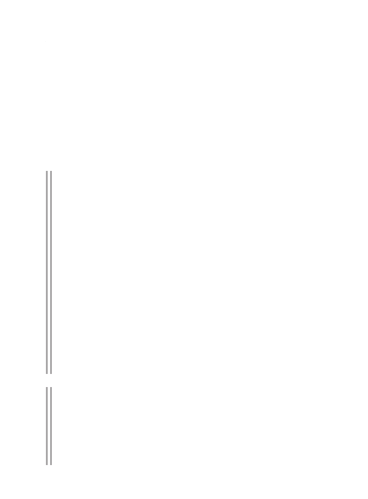
Livro branco sobre violações dos direitos humanos
e o Estado de direito na Ucrânia
80
Violação da economia,
direitos sociais e culturais
Declaração Universal dos Direitos Humanos (10 de dezembro de 1948)
Artigo 17
1. Todas as pessoas têm direito à propriedade individual
e conjuntamente com outrem.
2. Ninguém pode ser arbitrariamente privado dos seus bens.
Artigo 22
Toda pessoa, como membro da sociedade, tem direito à seguridade social
e ao exercício dos direitos econômicos, sociais e culturais necessários à manutenção de sua
dignidade e ao livre desenvolvimento de sua personalidade,
mediante
esforços nacionais e cooperação internacional e de acordo
com a estrutura e os recursos de cada estado
.
Artigo 26
Toda pessoa tem direito à educação.
Artigo 27
Toda pessoa tem o direito de participar livremente da vida cultural
da sociedade, de fruir as artes, de participar do progresso científico
e de gozar de seus benefícios.
Pacto Internacional sobre Economia, Social
e Direitos Culturais (16 de dezembro de 1966)
Artigo 11
1. Os Estados Partes do presente Pacto reconhecem o direito
de toda pessoa a um nível de vida adequado para si e sua família, inclusive
alimentação, vestuário e moradia adequados, e à
melhoria contínua de suas condições de vida.
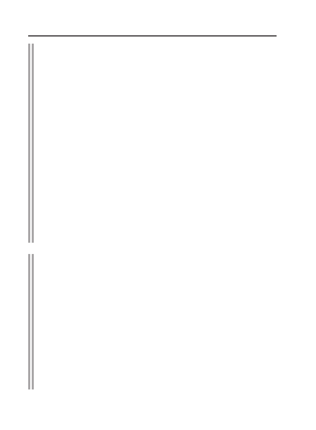
81
Violação de direitos econômicos, sociais e culturais
Os Estados participantes tomarão as medidas apropriadas para assegurar o exercício
deste direito, reconhecendo a importância a este respeito da
cooperação internacional baseada no livre consentimento.
2. Os Estados Partes do presente Pacto, reconhecendo o
direito fundamental de toda pessoa a estar livre da fome, devem tomar
as medidas necessárias individualmente e por meio da
cooperação internacional, incluindo a implementação de programas específicos.
Artigo 12
Os Estados Partes do presente Pacto reconhecem o direito de
toda pessoa ao gozo do mais alto nível possível de saúde física e
mental.
Artigo 13
Os Estados Partes do presente Pacto reconhecem o direito de
todas as pessoas à educação. Concordam que a educação
deve ser direcionada ao pleno desenvolvimento da personalidade humana
e à criação de sua dignidade e deve fortalecer o respeito aos direitos humanos
e liberdades fundamentais.
Artigo 15
Os Estados Partes do presente Pacto reconhecem a todos o direito de
:
(a) participar da vida cultural.
Protocolo nº I da Convenção
sobre a proteção dos direitos humanos
e liberdades fundamentais (Paris, 20 de março de 1952)
Artigo 1 Proteção da propriedade
Todas as pessoas singulares ou colectivas têm direito ao respeito dos
seus bens. Ninguém pode ser privado de seus bens
, exceto por interesse público e nas condições prescritas
pela lei e pelos princípios gerais do direito internacional.
Artigo 2. Direito à educação
A ninguém será negado o direito à educação. O Estado
, no exercício das funções que assume no
campo da educação e do ensino, respeitará o direito dos pais de proporcionar a
educação e o ensino conformes às suas
convicções religiosas e filosóficas.
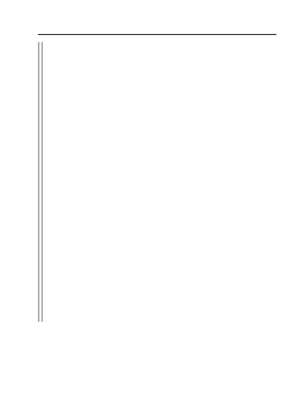
Livro branco sobre violações dos direitos humanos
e o Estado de direito na Ucrânia
82
Protocolo Adicional às Convenções de Genebra
datado de 12 de agosto de 1949 sobre a proteção das vítimas
conflitos armados de caráter internacional
(Ata II, Genebra, 8 de junho de 1977)
Artigo 14. Proteção de objetos necessária
para a sobrevivência da população civil
É proibido usar a fome entre a população civil como
método de guerra. Portanto, é proibido
para o efeito atacar, destruir, retirar ou
inutilizar os bens essenciais à sobrevivência da
população civil, tais como mantimentos,
áreas agrícolas produtoras de alimentos, culturas, pecuária,
instalações de água potável e abastecimentos destes últimos. . e
instalações de irrigação.
Artigo 15. Proteção de instalações e estruturas,
contendo forças perigosas
As instalações e instalações que contenham forças perigosas, nomeadamente
barragens, diques e centrais nucleares, não devem ser
objecto de ataque, mesmo quando tais instalações
sejam objectivos militares, se tal ataque puder causar
a libertação de forças perigosas e subsequentes pesadas baixas entre
a população civil .
Artigo 16. Proteção de bens culturais
e locais de culto
Sem prejuízo do disposto na Convenção de Haia para a Protecção dos Bens Culturais
em Caso de Conflito Armado, de 14 de Maio de 1954, é proibido
praticar qualquer acto de hostilidade dirigido
contra os monumentos históricos, obras de arte ou locais
de culto que constituam uma herança cultural ou espiritual
dos povos, e usá-los para apoiar o esforço de guerra.
1º de julho
Como resultado das hostilidades, Slavyansk está completamente desenergizado
(região de Donetsk). O fornecimento de energia para várias
instalações em Kramatorsk estava com problemas, incluindo a maternidade e o departamento cirúrgico
do hospital da cidade.

83
Violação de direitos econômicos, sociais e culturais
1º de julho
em Luhansk projéteis de artilharia parcialmente destruídos
escolas n.º 14 e n.º 35, vários edifícios residenciais foram gravemente danificados.
1º de julho
em duas seções da ferrovia de Donetsk havia vários
explosões. Dezenas de metros da via férrea foram danificados.
Na noite de
1 a 2 de julho
na área de Slavyansk, as forças de segurança ucranianas dispararam contra
de morteiros o orfanato "Topolek". Um golpe direto das minas
destruiu completamente um andar inteiro, destruiu o telhado do prédio.
2 de julho
pela manhã, a Força Aérea Ucraniana lançou um míssil e um ataque a bomba na aldeia
Velha Kondrashovka, a 20 km de Lugansk. 15
casas foram completamente destruídas.
2 de julho
em Luhansk devido ao bombardeio dos militares ucranianos interrompidos
algumas estações de bombeamento e esgoto, o fornecimento
de eletricidade para as instalações de abastecimento de água foi interrompido, a operação da
estação de bombeamento que fornecia água ao distrito de Kamennobrodsky foi suspensa.
3 de julho
em Slavyansk como resultado do bombardeio da Ucrânia
oficiais de segurança, a central térmica local foi seriamente danificada:
dois transformadores, o edifício do edifício principal da central, um tanque de óleo combustível
com capacidade de 2 mil toneladas foram danificados e o óleo combustível vazou.
3 de julho
como resultado do bombardeio pelas forças de segurança ucranianas da aldeia de Nikolaev-
A 15 km de Slavyansk, os sistemas de foguetes de lançamento múltiplo Grad e
Smerch destruíram a usina termelétrica Nikolaev. As bombas também atingiram uma escola e
um jardim de infância e destruíram vários edifícios residenciais de vários andares.
3 de julho
em Kramatorsk (região de Donetsk) como resultado da contínua
bombardeio em curso pelo exército ucraniano nas instituições médicas da cidade há
uma falta catastrófica de medicamentos.
Os principais golpes foram infligidos na área do comitê executivo da cidade, bombas também explodiram
no setor residencial - no cruzamento da Mashinostroiteley Boulevard
e St. Katerinich. Linhas elétricas e
trilhos de bonde danificados.
4 de julho
na região de Luhansk na estrada "Raigorodka -
Mikhailovka” perto da aldeia de Trekhizbenka, uma ponte sobre o
rio Seversky Donets foi explodida.
5 de julho
em Donetsk introduziu um regime de austeridade no consumo de água potável
agua.
Belaya_kniga_07_2014-11_2014-html.html

Livro branco sobre violações dos direitos humanos
e o Estado de direito na Ucrânia
84
7 de julho
nas regiões de Luhansk e Donetsk, três pontes foram explodidas. em Luhansk
região, explodiu uma ponte ferroviária sobre o rio Teplaya (
distrito de Stanichno-Lugansk, aldeia de Nizhne Teploe). 100 metros da via
e o vão de concreto da ponte com cerca de 25 metros de comprimento foram danificados.
Na região de Donetsk, uma ponte sobre o rio Seversky Donets na
rodovia Krasny Liman-Artemovsk-Gorlovka foi explodida. Como resultado da
explosão, a principal estrutura de suporte da ponte, que
sustentava o tabuleiro da ponte, foi completamente destruída.
Na região de Donetsk, perto da vila de Novobakhmutovka
, uma ponte ferroviária foi explodida, passando pela estrada "Slavyansk - Donetsk -
Mariupol".
8 de julho
Aviões ucranianos atacaram os arredores ocidentais de Donetsk.
Bombas aéreas foram lançadas no distrito de Petrovsky da cidade, que atingiu o
território da mina nº 4-21.
8 de julho
na aldeia de Belozerka (região de Kherson) pessoas desconhecidas em máscaras
demoliu o monumento a V.I. Lênin.
9 de julho
como resultado das hostilidades na região de Luhansk danificadas
62 gasodutos. Quase 10.000 famílias de moradores locais ficaram sem gás.
9 de julho
64 exposições desapareceram dos fundos do Museu da História de Kiev por um total
a quantia de 185 mil dólares.Após o golpe de estado em fevereiro de
2014, ativistas do Euromaidan foram alojados no prédio.
10 de julho
na região de Donetsk, duas pontes de automóveis foram explodidas, passando
voando sobre os trilhos da ferrovia. Como resultado da explosão do viaduto na
rodovia Lysichansk-Seversk, um dos vãos caiu nos trilhos da
ferrovia da seção Novo-Zolotarevka-Seversk e, nas proximidades da
estação Mayorskaya, a ponte rodoviária Gorlovka-Dzerzhinsk foi danificada ,
cuja estrutura foi bloqueada o tráfego ferroviário.
10 de julho
devido ao bombardeio do exército ucraniano de Severodonetsk (Luhansk
região) as instalações de transporte ferroviário da cidade foram gravemente destruídas
. A subestação de alta tensão do transformador foi completamente desativada
, a empresa de transporte ficou sem fornecimento de energia.
A linha de gás e os trilhos da ferrovia foram colocados fora de ação. A comunicação ferroviária
com Severodonetsk foi interrompida.
10 de julho
acidentes ocorridos em Lugansk como resultado de hostilidades e
danos aos sistemas de suporte à vida. Perdeu eletricidade
335 assinantes na aldeia de Teplichnoye. Desconectado dos sistemas de água
Belaya_kniga_07_2014-11_2014-html.html

85
Violação de direitos econômicos, sociais e culturais
mais de 520 usuários que vivem na parte norte do
distrito de Kamennobrodsky.
o 14 de julho
em Luhansk como resultado do bombardeio dos militares ucranianos
mas a escola secundária n.º 51, o jardim de infância n.º 53, as casas n.º 5 e 6 no
bairro de Yuzhny foram destruídas. No bairro de Mirny, um projétil de artilharia atingiu o
sótão da casa nº 8 e, na casa nº 13a, após o impacto de um projétil,
ocorreu um incêndio em um apartamento do primeiro andar. Na aldeia de Telman
na rua. Makarenko, os fios da linha de alta tensão
foram interrompidos por uma explosão de granada.
4.750 assinantes foram cortados do fornecimento de energia nos
distritos de Artemovsky e Kamenobrodsky da cidade, bem como na vila de Vidnoe. Não há água na
parte norte do distrito de Kamenobrodsky; não há fornecimento de gás nos
assentamentos de Ekaterinovka e Aleksandrovsk.
o 14 de julho
na região de Donetsk, duas pontes foram explodidas perto da cidade de Zugres
e a aldeia de Maryanovka.
15 de julho
em Snizhne (região de Donetsk) como resultado de atingir artilharia
As conchas do Ryan destruíram a padaria.
16 de julho
na região de Donetsk devido às hostilidades foi danificada
para a estação de filtração Karlovskaya,
várias grandes cidades no oeste e sul da região ficaram sem água por cinco dias: Dimitrov, Dobropolye e
distrito de Dobropolsky, distrito de Krasnoarmeysk e Krasnoarmeysky,
Novogrodovka, Selidovo, Ugledar, aldeias dos
distritos de Aleksandrovsky e Volnovakhsky . Enquanto isso, o clima quente se instalou na região. As pessoas são obrigadas
a beber água industrial.
Na aldeia de Belitskoye (região de Donetsk) , uma
casa de repouso para idosos se encontrava em uma situação extremamente difícil, na qual havia
mais de 100 idosos acamados.
17 de julho
em Donetsk como resultado do bombardeio dos militares ucranianos
o edifício do jardim de infância n° 94 "Shakhtarochka" foi parcialmente destruído.
17 de julho
em Lugansk, um projétil de artilharia do ataque militar ucraniano
o prédio do jardim de infância nº 134 na rua. Dahl, 18. Piso e
telhado danificados. De acordo com o Departamento de Educação e Juventude da Câmara Municipal de Luhansk , 14 instituições educacionais de Luhansk
sofreram bombardeios durante o período de hostilidades .
18 de julho
na região de Lugansk, como resultado do bombardeio matinal do ucraniano
Os militares desenergizaram os equipamentos elétricos que alimentam as bombas e
Belaya_kniga_07_2014-11_2014-html.html

Livro branco sobre violações dos direitos humanos
e o Estado de direito na Ucrânia
86
fãs das minas Krasny Partizan e Dolzhanskaya-Kapitalnaya, que fazem
parte da exploração de energia Sverdlovskanthracite.
Na noite de
18 a 19 de julho
em Odessa, funcionários de serviços públicos em
apoio dos ativistas do Euromaidan, o memorial para aqueles que morreram
como resultado da tragédia na Casa dos Sindicatos em 2 de maio de 2014 foi liquidado.
19 de julho
em Lugansk como resultado do bombardeio incessante de
Denia recebeu 1 edifício residencial de vários andares, 17 edifícios residenciais privados,
6 instalações de infraestrutura urbana. Incluindo danos nos edifícios das
escolas n.º 2 e n.º 29, um ginásio ortodoxo, uma escola privada “Sofia”, jardim de
infância n.º 1.
21 de julho
como resultado de um ataque dos militares ucranianos em Donetsk usando
Artilharia pesada e tanques danificaram mais de 20 edifícios residenciais,
houve um grave incêndio na oficina da fábrica de Tochmash. A cidade está bloqueada
pelos militares ucranianos, as comunicações móveis, a televisão e a Internet
funcionam de forma intermitente. O transporte público é limitado
e muitas lojas estão fechadas. As entregas de alimentos da Ucrânia
foram completamente interrompidas e os medicamentos não estão sendo fornecidos.
Problemas sérios com o abastecimento de água, a água é fornecida das 17:00 às 22:00.
A razão para isso foi o fechamento de três estações de bombeamento para elevação de água no canal Seversky Donets-Donbass
, danificado como resultado de ataques dos militares ucranianos .
21 de julho
em Luhansk como resultado do bombardeio de artilharia da Ucrânia
oficiais de segurança danificaram gravemente os
trilhos de trólebus e bonde de contato. O transporte elétrico da cidade suspendeu seu trabalho.
21 de julho
na aldeia de Orlovka (região de Donetsk), militantes do “voluntário ucraniano
Batalhões Volchek” demoliram o monumento a V.I. Lênin.
22 de julho
membro da Missão Especial de Monitoramento
OSCE na Ucrânia K. Wit-
Um cadáver trabalhando em Luhansk, depois de examinar com colegas o que foi
destruído como resultado de bombardeios e bombardeios pelos militares ucranianos
, disse: “Nos últimos dias, me convenci de que
apenas alvos pacíficos estão sendo bombardeados – casas, fábricas, apartamentos. Essas pessoas
não fizeram nada, elas apenas moram aqui.”
22 de julho
como resultado do bombardeio de Lugansk, cerca de 20
casas, as janelas foram quebradas e o telhado foi danificado na Escola de Arte, as
janelas foram quebradas na escola nº 47. Devido a danos nas subestações elétricas
, parte da Leninsky
Belaya_kniga_07_2014-11_2014-html.html

87
Violação de direitos econômicos, sociais e culturais
cidade), distritos de Zhovtnevy e Kamennobrodsky de Lugansk. As concessionárias
da cidade relatam inúmeras quebras nos fios elétricos e
danos nos gasodutos.
22 de julho
em Donetsk como resultado de um projétil de artilharia atingido
o território da fábrica de reagentes químicos (Sofiyskaya St., 1) estava em chamas.
22 de julho
em Donetsk a estação de filtragem é desenergizada. Para o mínimo
o fornecimento de água potável foi reduzido nos distritos de Kirovsky, Kuibyshevsky e Leninsky
da cidade.
22 de julho
na região de Donetsk no trecho "Sentyanivka - Shipilovo"
a ponte ferroviária foi explodida. No total, 13 pontes foram destruídas ou seriamente danificadas na região de Donetsk desde o início
das hostilidades.
23 de julho
Diretor da Direção Principal do Comitê Internacional da
Cross for Operations D. Stillhart declarou: “O CICV
reitera que, de acordo com as normas do Direito Internacional Humanitário
, apenas alvos militares podem ser atacados,
mas não civis e objetos não civis, como
casas, escolas, instalações médicas e transporte, locais de
refúgio ou locais de culto. O Direito Internacional
Humanitário também exige respeito e proteção da
população civil e daqueles que não participam das hostilidades ou
que deixaram de fazê-lo, como os doentes, os feridos e os
detidos. Eles têm o direito de ter sua dignidade respeitada em todas as
circunstâncias”.
25 de julho
em Gorlovka (região de Donetsk) uma ponte automobilística foi explodida,
conectando os distritos de Kalininsky e Nikitsky da cidade.
26 de julho
em Luhansk, como resultado das hostilidades, 22 residências
casas e equipamentos de infra-estrutura social, incluindo: escolas secundárias
n.º 7 e n.º 39, escola de música infantil n.º 2, jardim de infância n.º 74, uma
escola de construção e o estádio Avangard.
26 de julho
na região de Donetsk devido a danos na infraestrutura ferroviária
o movimento de trens de carga e passageiros na linha "Donetsk - Krasnoarmeysk" foi interrompido na ferrovia .
27 de julho
em Lugansk, como resultado do bombardeio, 38 residências
casas e equipamentos de infraestruturas sociais, nomeadamente:
escola especializada n.º 7, hospital pediátrico multidisciplinar da cidade
n.º 4, monumento aos ferroviários, edifício do palácio regional da cultura
Belaya_kniga_07_2014-11_2014-html.html

Livro branco sobre violações dos direitos humanos
e o Estado de direito na Ucrânia
88
e o prédio da Câmara Municipal. Em alguns lugares, o gasoduto foi danificado,
as linhas de energia foram cortadas.
O bloqueio de transporte e alimentação de Lugansk continua. Na
última semana, não foi possível levar comida
e água para a cidade. A situação é agravada pelo facto de a zona onde
se situa a maior parte das bases grossistas de alimentos estar desprovida de energia eléctrica.
27 de julho
em Donetsk como resultado do bombardeio da Ucrânia
oficiais de segurança danificaram um prédio residencial de 9 andares na rua. Rechnaya, 58 e
o prédio do café na rua foram destruídos. Pukhov, 157 "b", mais de 60 assentamentos estão desenergizados
.
27 de julho
como resultado do bombardeio
Gorlovka (região de Donetsk) do reator
O sistema de foguetes de lançamento múltiplo Grad danificou o prédio de Donetskoblenergo
, o prédio de Ukrtelecom, o supermercado ATB, a loja Melodiya, o
mercado local, o hospital municipal nº 2, uma maternidade, vários arranha-céus
e edifícios residenciais particulares.
27 de julho
em Debaltseve (região de Donetsk) o mercado central foi destruído,
Casas residenciais e um centro cultural foram seriamente danificados.
Os edifícios da Fábrica de Engenharia Metalúrgica Debaltsevo foram danificados .
27 de julho
a maior estação de junção da ferrovia de Donetsk "Yasi-
Novata” foi alvo de bombardeios das forças de segurança ucranianas, o que
causou um forte incêndio.
28 de julho
, de acordo com o serviço de imprensa da Câmara Municipal de Luhansk, desde o início
Em 1º de julho, como resultado do bombardeio dos militares ucranianos em Luhansk
, 97 prédios de apartamentos, 286 casas no setor privado,
23 escolas, 21 jardins de infância, 3 instituições médicas, prédios de 3 universidades, 4
faculdades, 9 albergues estudantis, um rodoviária, várias farmácias foram destruídas
, armazéns, 14 fábricas, incluindo 1 padaria, 26 lojas, incluindo
5 supermercados. Na cidade, 80% dos mercados estão fechados, não há
combustível, 18 mil metros quadrados foram destruídos. metros de estrada, 18 km de
linhas de contato de transporte elétrico, 26 km de linhas de energia.
12 casas de caldeiras e 8 instalações de abastecimento de água não funcionam .
30 de julho
na região de Donetsk, 6 cidades e várias aldeias estão completamente privadas de
abastecimento de água.
30 de julho
em Luhansk como resultado de bombardeios constantes da Ucrânia
Os militares danificaram 4 edifícios residenciais, o edifício do 2º hospital infantil e o edifício da
Filarmónica Regional de Luhansk.
Belaya_kniga_07_2014-11_2014-html.html

89
Violação de direitos econômicos, sociais e culturais
31 de julho
, de acordo com o Conselho Municipal de Donetsk, como resultado das hostilidades em
Donetsk desenergizou 25 subestações transformadoras.
31 de julho
, de acordo com o Conselho Municipal de Luhansk, a cidade está se esgotando
alimentos, gasolina, água potável, os moradores fogem da cidade.
Outra linha de energia foi danificada, que alimenta a cidade de
Krasnodon. Como resultado, a cidade está completamente cortada do
fornecimento de energia. Por falta de energia elétrica,
as estações de bombeamento e bombeamento deixaram de funcionar, o que gerou sérios problemas no abastecimento de água
. Edifícios residenciais, instalações sociais,
incluindo instituições médicas, foram desenergizados.
2 de agosto
A artilharia ucraniana bombardeou a cidade de Pervomaisk (Luhansk-
região do céu). Prédios residenciais foram destruídos, duas subestações foram danificadas por bombas
. O abastecimento de água não funciona na cidade, não há comunicação móvel,
o hospital está destruído, os prédios da policlínica e do berçário estão danificados.
3 de agosto
no distrito de Petrovsky (região de Donetsk) como resultado de uma aeronave
verão, a subestação elétrica que alimentava a torre de TV foi destruída.
A maioria dos canais de TV e estações de rádio parou de transmitir na cidade .
5 de agosto
Gorlovka foi submetida a outro bombardeio, devido ao qual
60 por cento da cidade, 92 subestações transformadoras,
11 linhas de alta tensão foram desenergizadas.
5 de agosto
informações divulgadas da ONU, segundo a qual em vários
Nas cidades do sudeste da Ucrânia, os danos parciais ou a destruição total
do parque habitacional variam de 5 a 60 por cento. Para Kramatorsk
, esse número é de 12%, no caso de Mykolaivka, Avdiivka,
Seleznevka na região de Donetsk, chega a 60%.
5 de agosto
em Avdiivka, Shakhtersk e Snizhne (região de Donetsk)
interrupções no fornecimento de alimentos.
6 de agosto
representantes do partido Svoboda e combatentes do batalhão Aidar
desmantelou o monumento a V.I. Lenin na cidade da Felicidade (
região de Luhansk). O organizador do desmantelamento foi o representante de "Svoboda",
o vice-comandante da cidade A. Lebed.
8 de agosto
o relatório dos observadores do Monitoramento Especial
o uivo da missão da OSCE na Ucrânia, que visitou Shakhtersk (região de Donetsk).
De acordo com o documento, a cidade foi gravemente danificada como resultado dos combates entre
a milícia e o exército ucraniano, deixando quase toda a sua população
Belaya_kniga_07_2014-11_2014-html.html

Livro branco sobre violações dos direitos humanos
e o Estado de direito na Ucrânia
90
zerar suas casas. Quase todas as lojas estão fechadas em Shakhtyorsk. A água está
disponível apenas duas horas por dia e não há gás nem eletricidade desde 27 de julho.
11 de agosto
o serviço de imprensa da holding Ostchem informou que a artilharia
O bombardeio pelo exército ucraniano de Gorlovka (região de Donetsk) e, em
particular, a fábrica de produtos químicos Stirol pode levar a um
desastre ambiental. Um acidente na empresa devido a conchas ameaça
vazar o "veneno do sangue" - mononitroclorobenzeno. O raio do
dano mínimo é de pelo menos 300 quilômetros, portanto, os
moradores da Ucrânia, Bielorrússia e Rússia correm risco de morte.
12 de agosto
em Donetsk, como resultado do bombardeio, vários
um edifício residencial no distrito de Petrovsky, bem como um edifício não residencial no
distrito de Kievsky, a subestação KhBK foi desenergizada,
206 subestações transformadoras ficaram sem fornecimento de energia.
12 de agosto
em Bolgrad e a aldeia de Kirnichki (região de Odessa) demoliram dois
monumento a V. I. Lênin.
15 de agosto
em Mariupol (região de Donetsk) pessoas não identificadas demolidas no centro
monumento da cidade a V.I. Lênin.
15 de agosto
267 subestações transformadoras desenergizadas em Donetsk,
alimentando os distritos de Petrovsky, Kirovsky e Leninsky. Devido à falta de fornecimento de
energia, o sistema de abastecimento de água do sul não funciona - não há abastecimento de água nos
microdistritos de Mirny, Goluboy, Zvezdny e Solnechny.
18 de agosto
em Lugansk, as forças de segurança ucranianas dispararam contra a região das crianças
novo hospital. Várias minas atingiram o prédio, quebraram as janelas e iniciaram um
incêndio.
19 de agosto
em Donetsk, como resultado do bombardeio, uma fileira de
casas, a escola sofreu.
19 de agosto
em Makeevka (região de Donetsk) foi submetido a bombardeios pesados
estação ferroviária da cidade. O bombardeio causou um incêndio na escola nº 151,
o fogo destruiu completamente a instituição de ensino. Os projéteis danificaram
a casa nº 16 na Rua Oktyabrskaya, edifícios residenciais na
rua foram completamente destruídos. Telmanova, 32, na rua. Petrovsky, 2 e na rua. Mayakovsky, 10.
21 de agosto
em Donetsk, como resultado do bombardeio, o telhado foi destruído
e as paredes do museu regional de folclore local no distrito de Voroshilovsky.
Belaya_kniga_07_2014-11_2014-html.html

91
Violação de direitos econômicos, sociais e culturais
Na noite de
21 a 22 de agosto
na cidade de Kryvyi Rih, desconhecido e não identificado
Os intrusos, apanhados pelas agências de aplicação da lei, demoliram o monumento a
V.I. Lenine em S. Svetlogorskaya.
24 de agosto
danificado por conchas em Donetsk
um hospital, um necrotério municipal, 26 subestações elétricas foram desenergizadas,
um gasoduto foi destruído, dezenas de prédios residenciais foram destruídos. No último dia
, 13 incêndios foram registrados: 9 prédios residenciais do setor privado foram totalmente
incendiados.
agosto, 26
O Comitê Internacional da Cruz Vermelha informou que
A situação em Luhansk continua crítica: sob as condições do
bombardeio de artilharia em andamento, menos da metade dos hospitais opera,
os suprimentos de alimentos e remédios são instáveis e não há água ou eletricidade na
cidade.
30 de agosto
do bombardeio da artilharia ucraniana foi seriamente danificada
base de treinamento do Shakhtar Donetsk no distrito Petrovsky de Donetsk.
A instalação esportiva sofreu danos significativos.
dia 1 de Setembro
em Lugansk como resultado de bombardeios pelos militares ucranianos
o edifício do ginásio da escola, o território do mercado Okolitsa e a
leiteria foram danificados.
2 de setembro
As forças de segurança ucranianas deixaram o aeroporto de Luhansk totalmente
destruído: apenas o esqueleto permaneceu do edifício do terminal, nem
uma única janela sobreviveu, todos os edifícios e equipamentos foram queimados.
2 de setembro
civis nos assentamentos de Khanzhonkovo, United, micro-
Zeleny, distritos de Vostochny em Makeevka (região de Donetsk) foram
submetidos a bombardeios maciços de artilharia, inclusive de
instalações Grad. Ao mesmo tempo, as áreas listadas completamente
(a vila de Khanzhkovo) ou parcialmente permaneceram sem fornecimento de energia.
Desde o início das hostilidades no território de Makiivka, cerca de
70 prédios residenciais e mais de 100 casas do setor privado foram destruídos.
Além disso, 4 unidades de saúde e 14
instituições de ensino foram danificadas, incluindo 5 jardins de infância e 7 escolas. Danos foram causados a
8 casas de caldeiras em quase todos os bairros da cidade.
A maioria das lojas e instalações de atendimento ao consumidor estão fechadas na cidade . As escolas não funcionam
e a maioria dos jardins de infância, instituições de ensino superior e secundário.
3 de setembro
Os distritos de Kirovsky e Petrovsky foram bombardeados
Donetsk. Como resultado de um bombardeio, edifícios residenciais foram danificados e
Belaya_kniga_07_2014-11_2014-html.html

Livro branco sobre violações dos direitos humanos
e o Estado de direito na Ucrânia
92
gasoduto de terra na aldeia de Rutchenkovo. 631
casas particulares ficaram sem abastecimento de gás.
5 de setembro
artilharia das forças armadas da Ucrânia infligiu uma enorme
um ataque de artilharia de foguetes em edifícios residenciais em Donetsk,
uma escola, um jardim de infância foram destruídos, as entradas de várias casas foram quebradas.
6 de setembro
O Comitê Internacional da Cruz Vermelha não pôde distribuir
ajuda humanitária em Luhansk em conexão com o bombardeio contínuo
da cidade pelo exército ucraniano.
8 de setembro
A ONU divulgou a informação de que o território
As regiões de Donetsk e Luhansk destruíram ou danificaram cerca de
290 escolas.
9 de setembro
devido à explosão de munição disparada das posições do ucraniano
exército, uma parte da ferrovia foi destruída perto do assentamento de Avdiivka
(região de Donetsk).
12 de setembro
em Kharkov, na Avenida Ordzhonikidze, desconhecido novamente
demoliu o monumento recentemente restaurado a V.I. Lênin.
De acordo com o relatório da ONU
16 de setembro de 2014
39 985 empresas
(pequenas e médias empresas) nas regiões de Donetsk e Luhansk cessaram
suas atividades. Isso afetou diretamente 54% dos empresários
dessas regiões, deixando seus funcionários sem trabalho. Mais de 30 mil
moradores de Donbass estão atualmente desempregados.
O relatório da ONU
16 de setembro de 2014
observou que a partir de
Em 1º de setembro de 2014, apenas 547 das 1.091 escolas da região de Donetsk e 250 das
690 escolas da região de Luhansk puderam reabrir no novo ano letivo,
permitindo que 196.300 crianças iniciassem a escola. As 984 escolas restantes
nas duas regiões não foram abertas devido a danos graves e para
a segurança das crianças. Assim,
270.000 crianças perderam o acesso à educação. Além disso, de acordo com a ONU, pelo
menos 32 instalações médicas em Donetsk não funcionam mais e 45 estão
danificadas ou destruídas.
17 de setembro
como resultado de um golpe de projétil, o local
na cidade de Shchastya, a TPP de Luhansk; Vários assentamentos
no norte da região ficaram sem eletricidade.
20 de setembro
militantes do batalhão de Aidar roubaram a unidade humanitária ucraniana
carga contentorizada, que se deslocava para Lugansk. Militantes de Aidar pararam
Belaya_kniga_07_2014-11_2014-html.html

93
Violação de direitos econômicos, sociais e culturais
veículos de socorro e caixotes confiscados de guisado. Eles motivaram sua
decisão pelo fato de que Kiev não lhes fornece os
alimentos necessários, e esses alimentos podem ir para
"terroristas".
21 de setembro
vândalos profanaram o monumento a V.I. Lenin na Svo-
bauds preço Kharkov | Cerca de 100 ativistas do Setor Direita pintaram
o pedestal com as cores da bandeira ucraniana e depois pintaram
inscrições obscenas diretamente no próprio monumento.
Na noite de
23 a 24 de setembro
vândalos demoliram o monumento ao revolucionário russo
lucioner, o famoso estadista soviético Artem
(F.A. Sergeev), que estava perto da universidade de agricultura
. Vândalos tentaram serrar a cabeça do monumento e depois o jogaram
do pedestal.
Na noite de
28 de setembro
Ativistas do Euromaidan demoliram um monumento
DENTRO E. Lênin em Kharkov. Esta ação foi liderada pelos combatentes do Batalhão Azov.
O processo criminal sobre a demolição ilegal do monumento foi encerrado
quase imediatamente após o seu início.
Na noite de
29 de setembro
o monumento a V. I. Lenin na cidade de Dergachi
(região de Kharkov).
30 de setembro
Ativistas do Setor Direita e Svoboda demolidos
monumentos a V. I. Lenin nas cidades de Izyum (região de Kharkiv) e Svatovo
(região de Luhansk).
Na noite de
1 a 2 de outubro
no centro de Krivoy Rog o monumento a V.I. Lênin.
3 de outubro
Presidente da Ucrânia P. Poroshenko disse que, como resultado
as hostilidades no Donbass destruíram 42% da indústria e
metade da infraestrutura.
6 de outubro
em Kharkov, vândalos destruíram uma placa memorial em memória de
ty participante da Grande Guerra Patriótica, Herói da União Soviética
P.L. Vasilevsky.
7 de outubro
na região de Kharkiv durante o dia, desconhecidos destruíram cinco
monumentos a V. I. Lênin.
13 de outubro
o chefe da Energoatom da Ucrânia propôs desconectar da rede elétrica
alimentação do LPR e do DPR.
14 de outubro
na região de Donetsk, 60 assentamentos continuaram a
ficar sem eletricidade.
Belaya_kniga_07_2014-11_2014-html.html

Livro branco sobre violações dos direitos humanos
e o Estado de direito na Ucrânia
94
14 de outubro
Chefe da Administração Regional de Poltava V. Bugaichuk assinou
uma ordem para demolir todos os monumentos a V.I. Lenin até 24 de novembro.
Na noite de
18 a 19 de outubro
bombardeio foi realizado em Donetsk, epicentros
que eram quatro distritos - Petrovsky, Kirovsky, Kuibyshevsky e
Kievsky. Como resultado dos bombardeios,
foram registradas inúmeras destruições do parque habitacional.
A partir de
O 20 de outubro
em Donetsk como resultado das ações da Ucrânia
militares e militantes danificaram 1,5 mil casas. O anúncio foi feito
por V. Litvinov, chefe do Departamento de Habitação da Câmara Municipal de Donetsk
.
1º de novembro
Forças de segurança ucranianas seis vezes de tanques e bombardeios de artilharia
a aldeia de Shchastye foi disparada de morteiros e instalações Grad, a aldeia de Krymskoye,
região de Lugansk. Várias casas foram destruídas.
o 3 de novembro
como resultado das ações dos militares ucranianos em Donetsk em Kuiby-
distritos de Shevskiy e Kievskiy, várias casas foram destruídas.
o 3 de novembro
Explosões são ouvidas novamente perto do aeroporto de Donetsk, policiais
projéteis incendiários usados. A área da
mina Oktyabrskaya e a ponte Putilovsky foram atacadas. Como resultado do ataque, um prédio de cinco
andares foi danificado, quatro casas foram destruídas nos distritos
de Kievsky e Kuibyshevsky, em Donetsk.
6 de novembro
em Odessa, o busto do marechal G.K. Zhukov.
6 de novembro
nos subúrbios de Odessa no assentamento de tipo urbano Tairovo
o monumento a V. I. Lênin.
Belaya_kniga_07_2014-11_2014-html.html
95
Conclusão
Conclusão
No momento do envio do livro à imprensa,
estavam sendo recebidas evidências de equipamento militar ucraniano sendo levado para o Donbass,
o bombardeio de artilharia de áreas densamente povoadas no sudeste da Ucrânia continuava, escaramuças
ocorriam entre forças de segurança e milícias , pelo que
o acordo alcançado em Minsk em 5 de setembro de 2014 sobre o regime de cessar-fogo
não é respeitado
As violações dos direitos humanos são registradas em ambos os lados do conflito. Ao
mesmo tempo, não se pode ignorar o fato de que os
crimes cometidos no sudeste da Ucrânia, em particular, o uso desproporcional
da força, o uso de armas letais, inclusive proibidas, são características dos militares ucranianos e dos grupos armados de radicais nacionais
agindo ao seu lado
São eles que deliberadamente
e impunemente realizam bombardeios bárbaros de áreas densamente povoadas
de Donbass.
A posição de princípio da Federação Russa permanece inalterada -
defendemos a implementação rigorosa dos acordos de Minsk em
ambos os lados. É hora de Kiev finalmente parar com as tentativas imprudentes de
“resolver” o problema das relações com o sudeste do país com a ajuda
de tanques, canhões e outros métodos militares, renunciar à violência e sentar-se
à mesa de negociações com representantes de as autoproclamadas
Repúblicas Populares de Donetsk e Lugansk. Não há outro caminho e, sem isso, a conversa
dos líderes da Ucrânia e seus patronos estrangeiros sobre a formação da
democracia ucraniana é absurda.
A comunidade internacional deve pressionar as autoridades ucranianas
para que, dentro de sua jurisdição, tomem
medidas realmente efetivas para cumprir as obrigações de direitos humanos
, incluindo o direito fundamental e inalienável à vida, proibição
Belaya_kniga_07_2014-11_2014-html.html

Livro branco sobre violações dos direitos humanos
e o Estado de direito na Ucrânia
96
tortura e tratamentos desumanos e degradantes, liberdade
de expressão, atividades da mídia, reuniões e associações, etc.
Todos os crimes cometidos durante a crise ucraniana devem
ser investigados de forma objetiva, honesta e eficaz. Trata
-se principalmente do assassinato de jornalistas russos, do “caso dos franco-atiradores”
em Kiev, da tragédia com pessoas queimadas vivas na Casa dos Sindicatos em
Odessa, do tiroteio de civis em Mariupol, da queda do avião da Malásia
, túmulos descobertos em Regiões de Donetsk e Luhansk
com sinais de execuções em massa, mortes de crianças sob projéteis de artilharia
, uso desproporcional da força, uso
de tipos proibidos de armas, incluindo munições de fragmentação, incendiárias
, de fósforo, armas táticas,
mísseis balísticos, etc.
É de fundamental importância que as autoridades ucranianas parem de “enrolar” uma investigação
independente, imparcial, eficaz e transparente sobre os fatos acima.
Apelamos aos meios de comunicação internacionais, às estruturas de direitos humanos da ONU, da OSCE
e do CdE e às organizações do setor não governamental para que adotem uma
abordagem ativa, justa e não politizada na avaliação das causas da
crise ucraniana e do seu desenvolvimento . Estamos convencidos de que manter distância das realidades,
tentar escondê-las da comunidade mundial ou manipular
a opinião pública é um caminho hipócrita e pouco promissor.
Belaya_kniga_07_2014-11_2014-html.html
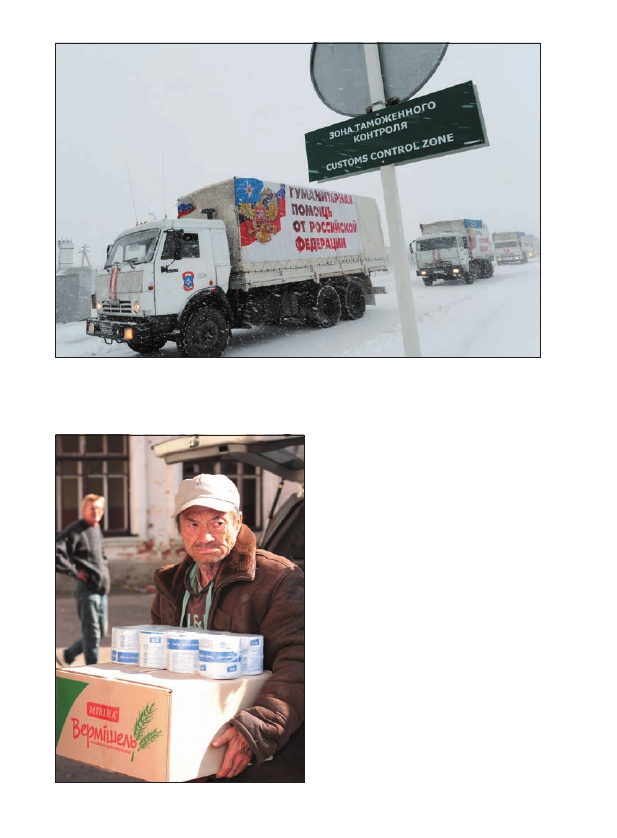
A ajuda humanitária da Rússia para a Novorossia correu bem em qualquer clima,
apesar do calor do verão e da neve de novembro. Total da Federação Russa enviada
la residentes das repúblicas populares de Donetsk e Lugansk, oito comboios com dezenas
mil toneladas de ajuda humanitária.
Ajuda para moradores locais
Rússia, que incluiu itens por
necessidade uivante, comida
nia, tornou-se uma verdadeira salvação. No
Na foto, um morador de Donetsk ajuda
descarregar caminhões com alimentos
comer, chegou da Rússia.
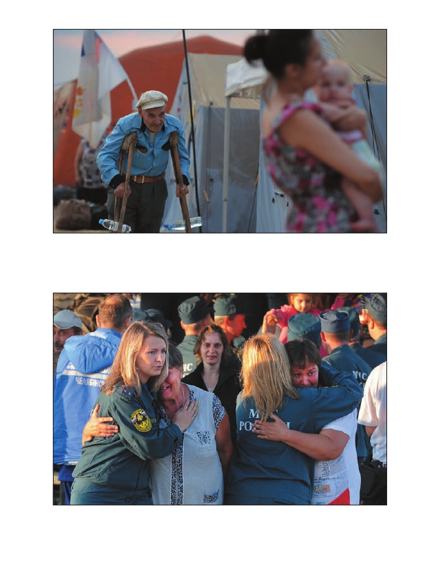
Os refugiados ucranianos expressaram sua sincera gratidão à Rússia por hospedá-los.
Na foto - funcionários do Ministério de Situações de Emergência encontram famílias de refugiados ucranianos com crianças em
aeroporto de Cheliabinsk.
O número total de cidadãos ucranianos na Rússia que fogem de
conflito sangrento, segundo o FMS da Rússia, ultrapassa 830 mil pessoas (apenas
no setor privado, os russos aceitaram e colocaram cerca de 444 mil ucranianos
refugiados). A imagem mostra um idoso residente de Donbass em um centro de acolhimento de refugiados em
Donetsk, região de Rostov.
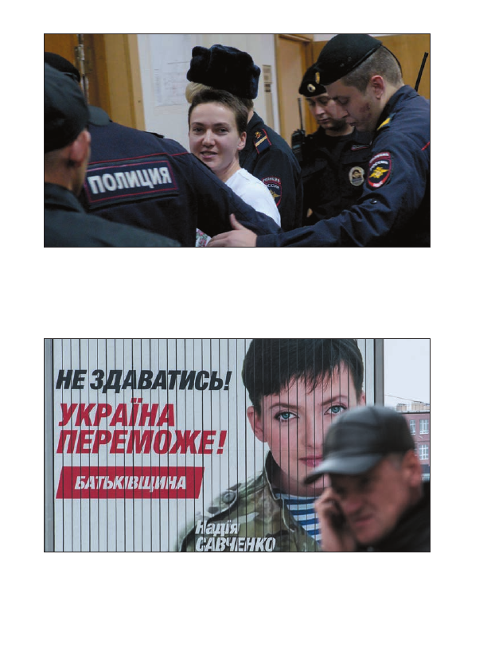
O lado ucraniano está usando o caso Savchenko para manipular o público
opinião, expondo-o na Ucrânia e no Ocidente como uma “vítima inocente” da agressão russa
estes e quase um “prisioneiro de consciência”, esquecendo-se de mencionar sua “verdadeira
façanhas." Além disso, seu nome está envolvido na luta política interna.
Então, Savchenko foi para a Verkhovna Rada na lista eleitoral da associação
"Pátria" por Yulia Tymoshenko, onde foi listado no número 1.
Piloto ucraniano Nadezhda Savchenko acusado de matar duas ou mais pessoas
em conexão com o desempenho de atividades oficiais, de forma geralmente perigosa, de acordo com
motivado pelo ódio político. De acordo com as agências de aplicação da lei da Federação Russa,
durante as hostilidades, ela indicou as coordenadas da localização de um grupo de russos
jornalistas da All-Russian State Television and Radio Broadcasting Company perto de Luhansk, após o que um ataque de morteiro foi realizado.
Como resultado, em 17 de junho de 2014, o correspondente do VGTRK Igor Kornelyuk e um policial foram mortos.
orador Anton Voloshin.
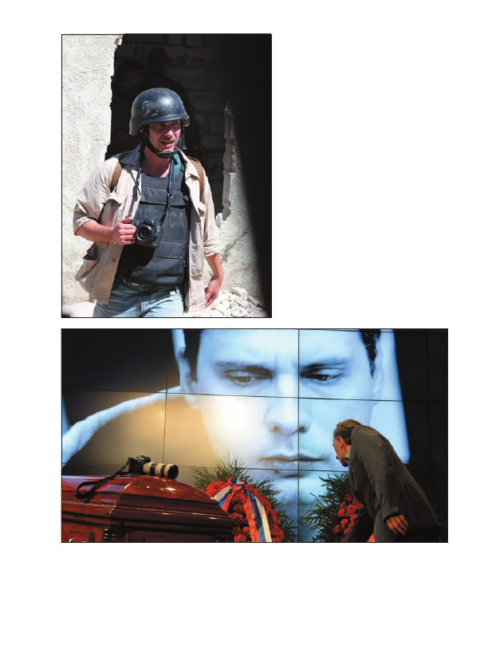
Em 5 de setembro, milhares de pessoas vieram se despedir de Andrey Stenin no agente-
stva "Rússia Hoje". O presidente russo, Vladimir Putin, assinou um decreto sobre a concessão
a condecoração do jornalista com a Ordem da Coragem postumamente. Andrey Stenin enterrado
no cemitério Troekurovsky em Moscou. O túmulo de Andrei está localizado perto
túmulos dos jornalistas de TV Igor Kornelyuk, Anton Voloshin e Anatoly
Klyana, que também foram mortos em serviço
Ucrânia.
Fotojornalista especial
MIA "Rússia Hoje" Andrey
Stenin morreu como resultado de artilharia
flecha. Ele estava no comando
treinamento na Ucrânia a partir de 13 de maio e
executou tarefas editoriais
niya, trabalhando em Kiev, Donetsk,
Lugansk, Mariupol, Shakhtarsk e
Slavyansk. Em 5 de agosto ele parou
entrar em contato. De acordo com informações
ções do Comitê de Investigação da Federação Russa,
na noite de 6 de agosto, um jornalista
carro "Renault Logan" no
Ve colunas de refugiados moviam-se
Estrada Snezhnoye-Dmitrovka.
O exército ucraniano abriu fogo contra
derrota, que resultou em
mais de 10 veículos foram destruídos, incluindo
incluindo o carro de Stenin.
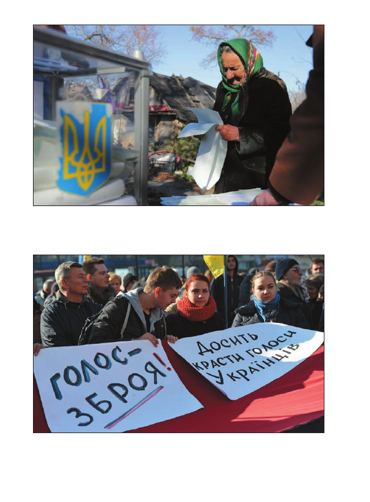
Pessoas com cartazes realizam um piquete perto do prédio da Comissão Eleitoral Central
(CEC) em Kiev. Após as eleições parlamentares antecipadas na Ucrânia
eclodiram protestos espontâneos, durante os quais os cidadãos se opuseram
falsificando seus resultados.
Uma idosa ucraniana, Anastasia Zaritskaya, está tentando resolver o conteúdo
o boletim de voto que lhe foi entregue na assembleia de voto na aldeia de Krenichi,
localizado a cerca de 40 km de Kiev. Durante a campanha eleitoral para
Na Ucrânia, os moradores locais praticamente não tiveram tempo de estudar o candidato
passeios de futuros deputados da Verkhovna Rada.
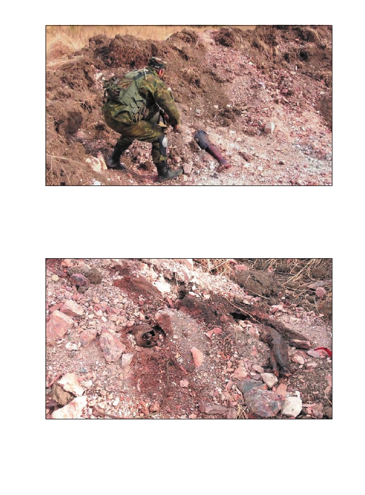
No final de setembro de 2014, na área da mina nº 22 "Kommunar" perto do Donetsk
Os chechenos descobriram valas comuns. Depois de examinar um deles
peritos forenses concluíram que os homens foram baleados na cabeça
de uma distância próxima. Anteriormente, este território estava sob o controle da Ucrânia
forças de segurança e o batalhão punitivo da Guarda Nacional "Aidar".
25 de setembro, primeiro-ministro da República Popular de Donetsk (DPR) Alexander
Zakharchenko anunciou a descoberta de três valas comuns. Em um dos
continham os corpos de civis, nos outros dois - os corpos de milícias capturadas
e soldados ucranianos. Na foto - milícia DPR examina um dos achados
enterros.
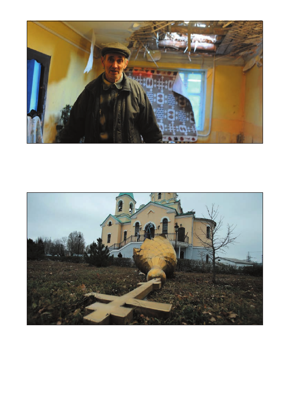
Vladimir Simonovich Goryansky, morador do distrito Kuibyshevsky de Donetsk, dá
uma entrevista com jornalistas tendo como pano de fundo um buraco no telhado de sua casa deixado por uma concha
instalação "Grad", fragmentos dos quais feriram sua esposa. Somente de acordo com o oficial
dados, como resultado do bombardeio pelo exército ucraniano com o uso de armas pesadas
mais de 5.000 casas foram destruídas na região. No inverno de 2014
dezenas de milhares de moradores de Donbass ficaram sem teto sobre suas cabeças.
A abóbada de uma igreja ortodoxa destruída pelo bombardeio de tropas ucranianas em
Kuibyshevsky distrito de Donetsk. De acordo com informações do Metropolitan
Donetsk e Mariupol Illarion, durante o conflito no sudeste
Ucrânia matou pelo menos 6 clérigos e total ou parcialmente
mas mais de 60 igrejas ortodoxas pertencentes ao ucraniano
Igreja Ortodoxa do Patriarcado de Moscou. Segundo alguns relatos, o oficial
ny Kyiv deliberadamente não interferiu com essas ações dos militares, na verdade, dando
uma ordem para não poupar as igrejas ortodoxas.
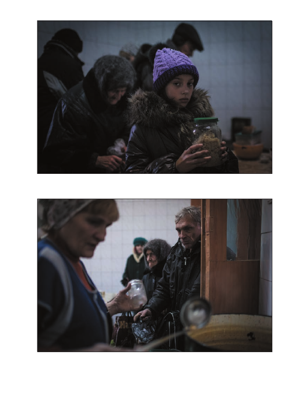
As principais vítimas da catástrofe humanitária em Donbas foram mulheres, crianças
e velhos. Na região de Luhansk, eles foram alimentados com refeições gratuitas nas redes sociais.
cantinas. Somente graças à nutrição organizada, muitos não morreram de fome.
No Donbass, os idosos ficaram sem pensões e benefícios devido ao fato de Kiev
as autoridades se recusaram a cumprir suas obrigações sociais para com eles. Velhos
foram forçados a fugir nas cantinas da cidade, onde receberam luto gratuito
Sinto cheiro de comida.
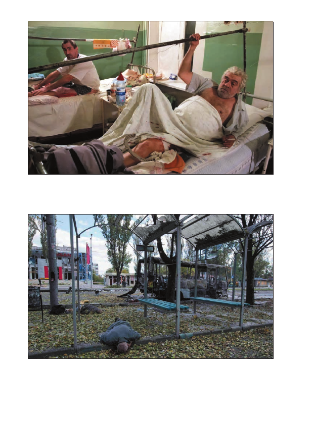
Volodymyr, 67 anos, está na enfermaria do hospital de Donetsk com feridas extensas -
estilhaços de uma granada que explodiu perto dele. De acordo com aproximado
A OSCE estima que mais de 4.000 pessoas morreram durante o conflito, dezenas de milhares
membros da população civil foram feridos em graus variados
gravidade.
Na foto - os corpos de pessoas que morreram como resultado de um tiro de artilharia
para um ponto de ônibus em Donetsk em 1º de outubro. O exército ucraniano deliberadamente, sem
bora, áreas residenciais bombardeadas de cidades do sudeste do país, cujas vítimas
ryh tornaram-se civis. Desde 5 de setembro, momento em que o chamado
cessar-fogo, mais de mil pessoas foram mortas no sudeste da Ucrânia.
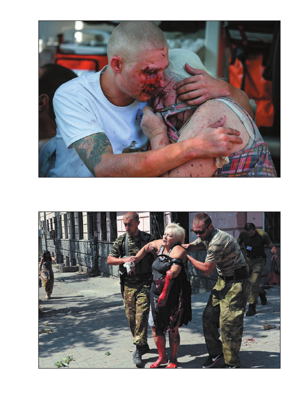
Pelo menos 9 mil pessoas, entre idosos, mulheres, deficientes, foram
feridos durante a chamada operação antiterrorista. Essas duas pessoas
marido e mulher, foram vítimas do bombardeio de Donetsk pelas tropas ucranianas em 23 de agosto
2014
Para os moradores de Donbass, mesmo uma simples ida à loja é repleta de uma ameaça mortal.
Voluntários ajudam uma mulher ferida por fragmentos de projéteis a chegar ao posto de controle
assistência médica.
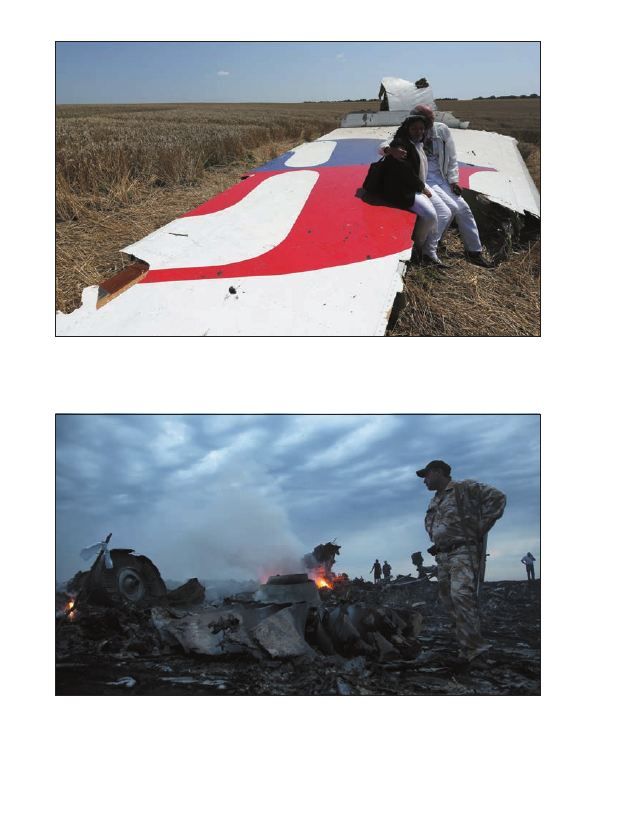
Australianos George e Angela Dyshinsky não acreditam na morte da filha
Fátima, de 25 anos, no local da tragédia do Boeing 777 da companhia aérea
Companhias Aéreas da Malásia. Ele seguiu de Amsterdã a Kuala Lumpur e perdeu
cantou o acidente em 17 de julho de 2014 no leste da região de Donetsk, na Ucrânia. A bordo estão
283 passageiros e 15 tripulantes foram mortos, todos eles morreram.
O governo da Ucrânia, bem como representantes de vários países ocidentais, não provaram
eles afirmam que o avião foi abatido pelo sistema de defesa aérea Buk, que estava nas mãos da milícia.
Chents. Enquanto isso, as autoridades russas estão argumentando de forma convincente que
que o avião foi abatido pelas forças armadas ucranianas com um míssil terra-ar
ar ou ar-ar. Os destroços das aeronaves representantes dos países ocidentais há muito
não com pressa de sair da cena da tragédia.
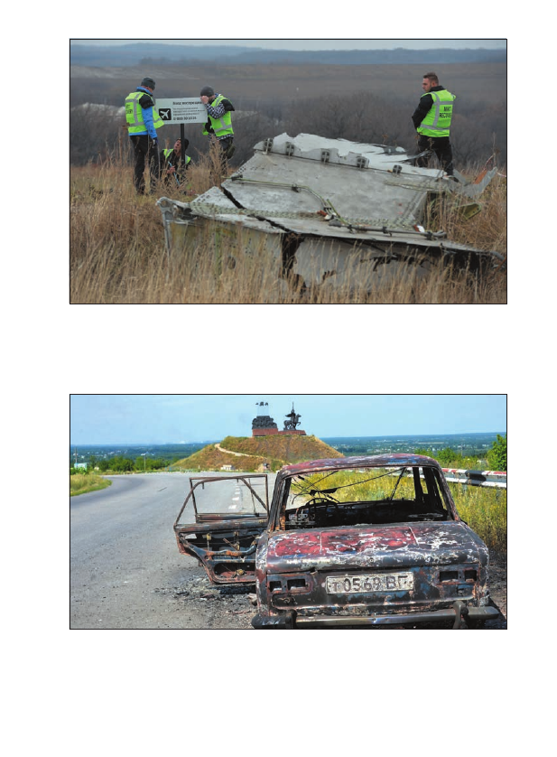
Especialistas internacionais investigam as causas do desastre na Malásia
Boeing" na Ucrânia, só em novembro eles retiraram os destroços que estavam no local
acidente, atrasando assim a investigação. Até agora, eficaz e
uma investigação tendenciosa desta tragédia não foi conduzida em violação da resolução
Conselho de Segurança da ONU 2166 de 21 de julho de 2014 e as regras da Organização Internacional
rebaixamento da aviação civil da ICAO.
A imagem mostra os queimados como resultado do bombardeio em 2 de julho de 2014 na área
Donetsk "Zhiguli" civil. Desde os primeiros dias de confronto pelas forças de segurança
um grande número de veículos foram baleados e queimados, nos quais
enxame moveu civis. Os ataques foram indiscriminados, os corpos
mortos e carros foram deixados na cena do crime, qualquer funcionário
esses crimes não foram investigados.
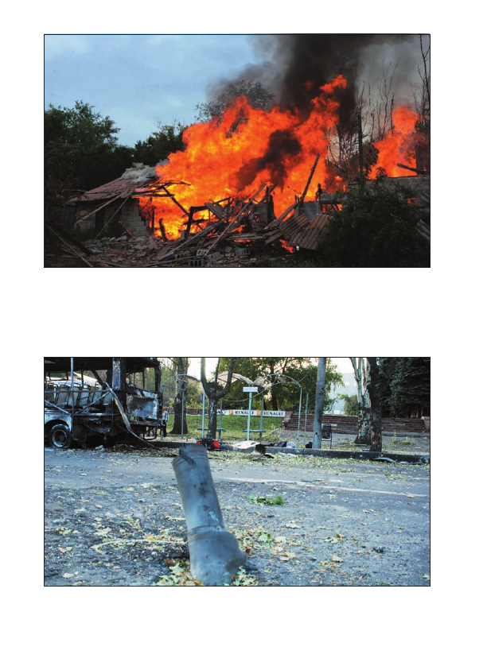
Artilharia não detonada nas ruas das cidades no leste da Ucrânia, permanecendo
após o bombardeio, ameaçam a vida de civis, como esta mina, que não destrói
foi rasgado perto de uma parada de transporte público em Donetsk.
Esta casa de civis foi incendiada na RPD em 6 de julho. Forças de segurança ucranianas
apaixonado pelas táticas de guerra "terra arrasada", usando
não apenas vários sistemas de foguetes de lançamento e mísseis balísticos, mas também proibidos
para uso em áreas civis bombas de fragmentação.
Além disso, há informações sobre o uso de armas incendiárias pelas forças ucranianas.
e cargas de fósforo contra civis. No entanto, Kiev oficial de todas as maneiras possíveis
dificulta as investigações dos defensores internacionais dos direitos humanos.
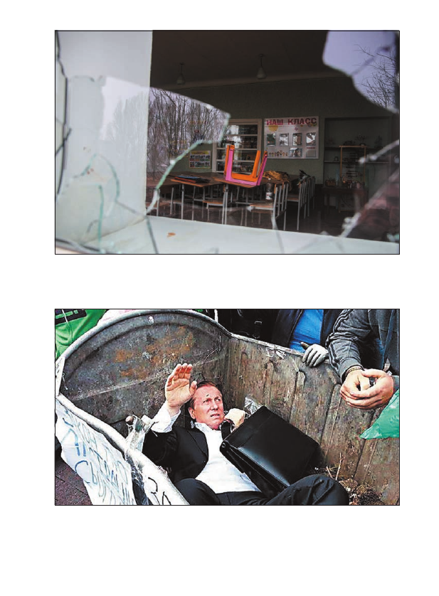
O antigo
Deputado da Verkhovna Rada do "Partido das Regiões" Vitaly Zhuravsky. Na lata de lixo
Ativistas do Euromaidan e militantes do Setor Direita o abandonaram em 16 de setembro,
mesmo na porta da frente do parlamento. A ironia do destino é que
ele é um dos co-autores da lei "Sobre a purificação do poder", ou seja, "sobre lustração".
As forças de segurança ucranianas não pouparam nem mesmo as escolas. Desde o início do ano letivo sob a argamassa
bombardeios atingem regularmente as instituições de ensino infantil. Sim, como resultado
ataques das forças de segurança ucranianas em Horlivka, o prédio da escola secundária foi destruído.
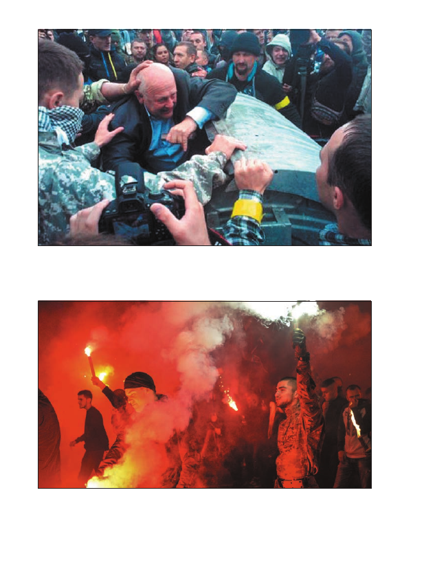
Procissões à luz de tochas de nazistas ucranianos agora são realizadas duas vezes por ano: 1º de janeiro
rya - no aniversário de Stepan Bandera e 14 de outubro - no dia da Intercessão do Santíssimo
Mãe de Deus. A imagem mostra cerca de 3.500 "defensores" do batalhão punitivo
"Azov" e o "Setor Direito" do Corpo de Voluntários Ucranianos cobrem sua
ele ao presidente "o caminho para um futuro melhor".
Primeiro Vice-Chefe do Conselho Regional de Rivne e membro do partido Batkivshchyna
Alexander Danilchuk "lustratores do povo" conseguiu colocar no lixo
tanque não na primeira tentativa - o mestre dos esportes da URSS na luta greco-romana, afinal
resistiu. Entre os "ilustradores" havia muitos jornalistas, mas nem uma única pessoa
século, que defenderia um economista idoso.
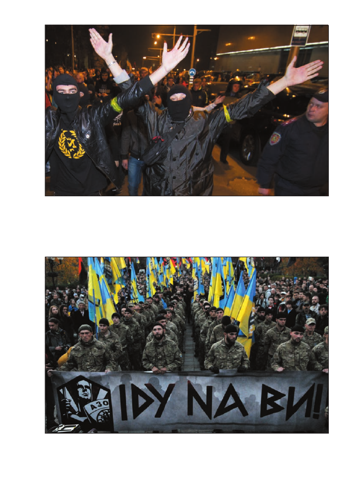
Radicais e nacionalistas estão furiosos nas ruas de Kiev e já chegaram
Verkhovna Rada. 14 de outubro dentro dos muros do Parlamento em uma das últimas sessões
BP da sétima convocação eles postaram um cartaz da UPA.
Embora o Svoboda, considerado o principal partido nacionalista da Ucrânia, em
A Verkhovna Rada não passou, seu "lugar sagrado" no parlamento e nas ruas da Ucrânia
cidades não estão vazias, e o número de nazistas está crescendo mesmo onde é menos
poderia ser esperado. A imagem mostra fascistas ucranianos marchando
no centro de Kharkov sob a supervisão da polícia no dia do 72º aniversário da criação do ucraniano
exército rebelde (UPA).
Texto original
Sugerir uma tradução melhor